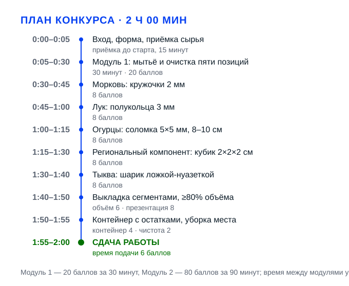
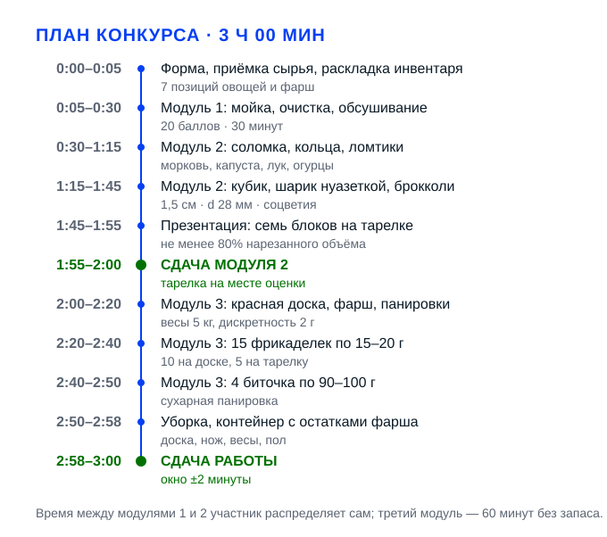
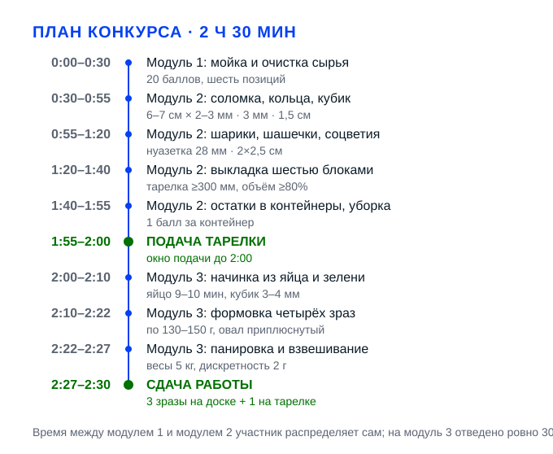

Кухонный рабочий (Р)
Задания ниже — официальные файлы «Абилимпикс» (источник: abilympics-russia.ru), разложенные по категориям. Решения написаны по тексту задания, регламенту и критериям оценки; в них указано, что именно проверяет эксперт.
Школьник
14–16 лет, базовый уровень заданияВ официальном файле категории не разделены отдельными разделами — приводим задание целиком; различия по категориям смотрите в таблице модулей.
Пошаговое решение
Конкурсное задание для школьников длится два часа, сто двадцать минут: тридцать минут отведено на механическую кулинарную обработку сырья и девяносто на нарезку овощей и презентацию. Первый модуль стоит двадцать баллов, второй восемьдесят, а критерии техники безопасности, чистоты и раздельных баков работают в обоих и проверяются всё время. Нарезать нужно пять позиций: морковь одинаковыми кружочками толщиной два миллиметра, лук полукольцами три миллиметра, огурцы соломкой пять на пять миллиметров длиной восемь-десять сантиметров без снятия кожуры, региональный компонент крупным кубиком два на два на два сантиметра и тыкву шариком, вырезанным ложкой-нуазеткой. Готовую нарезку выкладывают на белую фаянсовую тарелку не менее трёхсот миллиметров сегментами, оставляя на ней не менее восьмидесяти процентов объёма, а остатки убирают в одноразовый контейнер. Ниже каждый шаг разобран подробно: что делать, каким инструментом, зачем это нужно по критериям, как проверить результат и что видит эксперт.

Задача 1. Войти в бокс и подготовить рабочее местоМодуль 1 · 20 баллов
Первый модуль длится тридцать минут и стоит двадцать баллов, но его критерии — техника безопасности, санитария, чистота места, раздельные баки и отсутствие брака — работают дальше весь конкурс, все сто двадцать минут. Поэтому подготовка идёт первым пунктом: спецодежда, вымытые руки, разложенный по зонам инвентарь и два бака для отходов дают ту самую пятёрку за безопасность и четвёрку за гигиену, которую потом невозможно добрать нарезкой. Здесь же принимается сырьё: морковь, лук, огурцы, тыква и региональный компонент, и любая недостача обнаруживается именно сейчас, а не в середине работы.
Действие 1.1. Надеть форму и привести себя в порядок
Шаг 1.1.1
Надеваем полный комплект, который требует задание: белую хлопчатобумажную куртку, брюки, хлопчатобумажный фартук, белый колпак (одноразовый тоже допускается) и профессиональную обувь на нескользящей подошве. Куртку застёгиваем на все пуговицы, фартук завязываем так, чтобы тесёмки не свисали в зону нарезки, колпак сажаем глубоко на голову, убирая под него все волосы: и чёлку, и затылок, и хвост, если он есть. Рукава подворачиваем до локтя или застёгиваем манжетой выше запястья, потому что длинный рукав касается овощей и цепляется за рукоять ножа.
Спецодежда в схеме оценивания школьников стоит внутри критерия «выполнение норм санитарии и гигиены» — это четыре балла в первом модуле и ещё четыре во втором. Эксперт смотрит не на общий вид, а на конкретные признаки: белый цвет, застёгнутые пуговицы, убранные волосы, закрытая обувь. Обувь на нескользящей подошве — не формальность: пол в боксе мокрый от промытых овощей, а падение с ножом в руке заканчивает конкурс раньше времени.
Отойдите на шаг и проверьте себя как эксперт: волос не видно ни спереди, ни сзади; куртка застёгнута и не расходится на груди; фартук чистый и завязан; обувь закрытая, сухая, подошва не скользит по плитке. Попросите соседа или волонтёра посмотреть со спины — именно там остаётся незамеченный пучок волос.
Самая частая ошибка — надеть колпак на макушку, оставив затылок открытым: спереди всё аккуратно, а сзади волосы выбиваются, и четыре балла за гигиену снимаются в первые же минуты. Вторая ошибка — прийти в футболке и кроссовках, рассчитывая переодеться «пока не начали». Переодевание съедает минуты из тридцати, отведённых на первый модуль.
Эксперт фиксирует комплект до старта, буквально при входе в бокс, и дальше следит, остаётся ли форма чистой: пятна от сока моркови и мука на груди к середине второго модуля тоже идут в оценку. Отдельно он отмечает обувь: открытые шлёпанцы или кроссовки на гладкой подошве фиксируются как нарушение.
Шаг 1.1.2
Снимаем часы, кольца, браслеты, длинные серьги и всё, что может попасть в нарезку. Ногти стрижены коротко, без лака и без покрытия. Руки моем с мылом до запястий не меньше двадцати секунд, проходя большие пальцы, межпальцевые промежутки и ногтевое ложе щёткой, затем вытираем одноразовым бумажным полотенцем и выбрасываем его сразу в бак для непищевых отходов, а не кладём на стол рядом с доской.
Под украшениями и под ногтем остаются загрязнения, которые обычным мытьём не снимаются, а камень из кольца или звено браслета физически способны оказаться в нарезке. В схеме оценивания это прямо прописано в критерии санитарии: «отсутствие часов, украшений и т.д., волосы, убранные под головной убор». Посторонний предмет в тарелке — это уже не минус балл, а обнуление работы и объяснение с главным экспертом.
Осмотрите руки при хорошем свете: украшений нет, ногти короткие, кожица вокруг ногтя без заусенцев, руки сухие и не липкие. Если кольцо снимается тяжело — снимайте его дома, а не в боксе за минуту до старта, иначе на этом уйдёт время и останется раздражение.
Оставить обручальное кольцо «оно же не мешает» — типичная ошибка школьников, и объяснение «я привык» не принимается. Второй промах — вытереть руки о фартук: внешне они сухие, но фартук становится переносчиком, и эксперт это видит буквально через минуту.
Проверка рук идёт дважды — на входе и в процессе, особенно после того, как участник убирал очистки в бак или поправлял колпак. В спорных случаях эксперт просит показать руки повторно, и тогда видно, мыл ли участник руки вообще.
Шаг 1.1.3
Мытьё рук повторяем каждый раз, когда переходим от грязной работы к чистой: после снятия кожуры, после того как вынесли отходы, после уборки с пола, после того как поправили колпак или вытерли лицо. Одноразовые перчатки надеваем на сухие руки, меняем их, как только они порвались или стали скользкими внутри, и снимаем перед тем, как браться за рукоять ножа мокрыми руками — в мокрой перчатке нож едет.
Гигиена оценивается «в том числе при ведении технологического процесса», как сказано в критерии, — то есть важна не разовая процедура на входе, а соблюдение правила на всём протяжении двух часов. Кроме того, чистые сухие руки — это про технику безопасности: мокрая ладонь на гладкой рукояти и на скользкой поверхности огурца даёт тот самый порез, который в критерии «техника безопасности» стоит пять баллов.
Признак, по которому себя проверяют: если вы только что держали очистки или мусорный пакет, руки моются перед следующим касанием продукта, даже если внешне они чистые. Полотенце после мытья — одноразовое и сразу в бак; тканевое полотенце на столе считается нарушением.
Помыть руки один раз в начале и считать вопрос закрытым. Второй вариант — работать в перчатках «для вида», а нож брать голой рукой, потому что в перчатке неудобно: эксперт видит и то, и другое, а баллы за санитарию идут в минус сразу в двух модулях.
Эксперт проходит по боксам несколько раз за модуль и смотрит на руки в момент перехода от отходов к продукту — это самый показательный момент. Он смотрит и на то, где лежит использованное полотенце: на рабочем столе ему места нет.
Действие 1.2. Разложить стол по зонам
Шаг 1.2.1
Производственный стол по заданию имеет размеры 1800 на 600 миллиметров и борт высотой 50 миллиметров. Делим его на три полосы: слева от мойки — приёмка и мытьё, в центре — рабочая зона нарезки с доской, справа — место под готовую нарезку в мисках и под тарелку для выкладки. Немытые овощи никогда не пересекаются с уже нарезанными: миска с готовой морковью стоит справа и выше по потоку, а очистки уходят в бак, который стоит слева внизу, у ног.
Критерий «чистота рабочего места (пола, рабочей поверхности)» стоит четыре балла в первом модуле и четыре во втором, а «правильное использование мусорных баков» — ещё два плюс два. Разделение на зоны нужно не для красоты: если очистки падают на ту же доску, где лежит нарезанная морковь, работа сразу идёт в брак, а брак в первом модуле — минус четыре балла.
Посмотрите на стол сверху и мысленно проведите границы: слева грязное, в центре инструмент и доска, справа чистое и готовое. Проверьте, что между зонами есть свободное место сантиметров пятнадцать — именно туда ставят нож, когда его кладут, и именно там ничего не должно мешать.
Свалить всё в одну кучу «пока не начали» — тогда мойка, нарезка и готовая продукция оказываются в одном месте, и первый же сход очисток в миску с нарезкой портит партию. Второй промах — поставить бак для отходов вплотную к доске: очистки летят мимо и остаются на столе.
Эксперт оценивает организацию рабочего места в начале модуля и потом возвращается к ней, когда смотрит накопление отходов. Зоны оцениваются по факту: если готовая нарезка лежит рядом с очистками, место считается неорганизованным.
Шаг 1.2.2
Кладём разделочную доску из полипропилена размером 600 на 400 и толщиной 18 миллиметров — по заданию она зелёная, то есть предназначена для овощей. Ставим её по центру рабочей зоны, ровно, не на край стола, и подкладываем под углы влажное бумажное полотенце, чтобы доска не ездила. Рядом раскладываем набор ножей «тройку», ложку-нуазетку диаметром 28 миллиметров и длиной 175 миллиметров, четыре миски из нержавеющей стали объёмом не меньше литра и тарелку из фаянса диаметром не менее 300 миллиметров для выкладки.
Скользящая доска — прямая угроза критерию техники безопасности на пять баллов: нож идёт по продукту, доска уезжает, лезвие уходит в палец. Зелёная доска в задании не случайна — это маркировка «овощи», и работа на другой доске читается как нарушение санитарных правил. Нуазетка нужна только для тыквы, но её отсутствие на столе в нужный момент стоит отдельного внимания: без неё шарик не получится вообще.
Толкните доску ладонью: она не должна сдвигаться больше чем на пару миллиметров. Проверьте, что лезвия сухие, рукояти чистые, нуазетка целая, без заусенцев на кромке, а миски вымыты и стоят донышком вниз до момента, когда понадобятся.
Положить доску на мокрый стол без подложки — она поедет в самый неподходящий момент. Вторая ошибка — держать нуазетку в общем ящике и искать её, когда тыква уже очищена: пока ищете, тыква подсыхает и шарики рвутся.
На технику работы с инвентарём эксперт смотрит в первые минуты нарезки: как лежит доска, как участник берёт нож, куда кладёт его между операциями. Плохо закреплённую доску он фиксирует как риск и снижает балл за безопасность, даже если порезов не было.
Шаг 1.2.3
Ставим два бака для мусора, как требует задание, и разводим их по назначению: в один идут пищевые отходы — кожура, очистки, обрезки, семена тыквы, во второй непищевые — упаковка, бумажные полотенца, перчатки, пакеты. В каждый бак заранее вставлен мешок на 30 литров, край мешка подвернут наружу. Баки ставим рядом с рабочей зоной, но не вплотную к столу, чтобы очистки не летели через доску, и не на проходе, где их заденут.
«Правильное использование мусорных баков (пищевые/непищевые отходы)» — отдельный критерий, два балла в первом модуле и два во втором. Разделение отходов проверяется физически: эксперт может попросить открыть бак и посмотреть, не лежит ли кожура вместе с упаковкой. Кроме того, аккуратно набранный бак означает, что очистки не валяются на полу — а пол входит в критерий чистоты рабочего места.
Проверьте три вещи: баков ровно два, мешки вставлены и не вываливаются, крышки (если есть) открываются одной рукой. Мысленно отправьте кожуру моркови в левый бак, а обёртку от полотенец — в правый: если вы не уверены, какой куда, переставьте их так, чтобы пищевой был ближе к руке.
Складывать всё в один бак, потому что «потом разберу»: разбирать в конце нечем и некогда, а два балла уже потеряны. Второй промах — бросить очистки в раковину: мойка забьётся, вода пойдёт на пол, и это сразу и чистота, и безопасность.
Эксперт проверяет баки в середине и в конце модуля, а также смотрит, не лежат ли очистки прямо на столе или на полу вокруг рабочего места. Ему важно не только наличие двух баков, но и то, что участник пользуется ими по назначению без напоминаний.
Действие 1.3. Принять и проверить сырьё
Шаг 1.3.1
Получаем набор и сверяем его с перечнем задания: морковь, лук, огурцы, тыква и региональный компонент. Каждую позицию осматриваем и ощупываем: морковь плотная, без вялых боков и трещин; лук с сухой шейкой, без проросших перьев и без гнили под чешуёй; огурцы упругие, одинаково тёмные, без жёлтых пятен и мягких боков; тыква с целой корой, без плесени у плодоножки. То, что вызывает сомнение, откладываем в сторону и показываем эксперту до старта.
Приёмка — единственный момент, когда недостачу ещё можно закрыть: после старта замена идёт только через главного эксперта и только если причина уважительная. Мягкий огурец не даст соломку пять на пять миллиметров, он развалится в руках, а это восемь баллов за форму нарезки. Вялая морковь крошится под ножом и даёт рваные кружочки — тоже восемь баллов.
По каждой позиции проверяем три признака: плотность на ощупь, свежий запах, отсутствие тёмных и мокрых пятен. Огурец сожмите: он должен пружинить, а не проминаться. Морковь надломите у основания: хруст и сочная поверхность — признак свежести, вялое «варёное» ощущение — плохой знак.
Разобрать корзину молча и решить «обойдусь тем, что есть». Когда через полчаса выяснится, что огурцов не хватает на весь объём, менять что-то будет поздно, а критерий объёма выложенных овощей не менее 80 процентов стоит шесть баллов. Вторая ошибка — не проверить сырьё на ощупь и обнаружить мягкий бок уже на доске.
Эксперт видит, сверялся ли участник с перечнем и обращался ли по недостаче до старта: спокойный точный вопрос ценится выше, чем героическая импровизация. Он же фиксирует время обращения: после старта вопросы по сырью считаются уже не приёмкой, а импровизацией.
Шаг 1.3.2
Отдельно разбираемся с региональным компонентом: это овощ, который в этот раз выдал организатор, и в разных регионах под ним понимают разное — чаще всего корнеплод вроде свёклы, репы или картофеля. Подходим к эксперту и уточняем название, способ очистки и то, снимается ли кожура, потому что в задании про него сказано только «очистить, помыть». Ответ запоминаем и дальше работаем с ним как с обычным корнеплодом: сначала мытьё, потом очистка, и уже потом нарезка крупным кубиком два на два на два сантиметра.
Региональный компонент даёт восемь баллов за форму кубика, и ошибка на этапе очистки обнуляет их все: если снять кожуру там, где по замыслу её оставляют, или наоборот оставить там, где нужно снять, эксперт зафиксирует нарушение правил механической обработки — это пять баллов в первом модуле. Уточняющий вопрос до старта занимает полминуты и снимает риск полностью.
После разговора с экспертом проговорите про себя порядок: мытьё, очистка, промывка, обсушивание, нарезка кубиком два сантиметра. Если хотя бы один шаг вызывает сомнение — спросите ещё раз, это нормально и не считается незнанием.
Сделать вывод «наверное, это картошка» и почистить как картошку, а потом услышать, что кожуру снимать не требовалось. Второй вариант — не спросить вообще и нарезать кубиком то, что по заданию должно остаться шариком.
Эксперт как раз и следит за тем, правильно ли участник понял задание по региональному компоненту, и за тем, задавал ли он вопросы до старта, а не в процессе. Он оценивает и результат: если кубик нарезан из неправильно обработанного компонента, форма его уже не спасёт.
Задача 2. Выполнить механическую обработку сырьяМодуль 1 · 20 баллов
Во втором действии первого модуля сырьё превращается в полуфабрикат: морковь, лук, огурцы, региональный компонент и тыква моются, очищаются и обсушиваются. На всё отведено тридцать минут, и именно здесь набираются пять баллов за соблюдение правил механической обработки и четыре балла за отсутствие брака: переваренная в чистке морковь, надрезанная кожа огурца, неочищенная от семян тыква — это уже брак, а не «мелочь». Отходы по ходу дела уходят в бак для пищевых отходов, а не накапливаются на столе: за это тоже дают баллы.
Действие 2.1. Вымыть всё сырьё до очистки
Шаг 2.1.1
Моем овощи в мойке односекционной под проточной водой, а не в миске с застоявшейся водой. Морковь и региональный компонент тщательно трём руками или мягкой щёткой, смывая землю из-под кожуры у основания и у плодоножки, где грязь держится крепче всего. Огурцы промываем с особой тщательностью, потому что кожура с них не снимается и пойдёт в нарезку. Тыкву обмываем целиком, включая место среза плодоножки. Лук сначала очищаем от сухих чешуй, а потом промываем.
Мытьё до очистки — правило, а не привычка: грязная кожура пачкает нож, доску и руки, и тогда грязь переносится на уже очищенный продукт. В критерии «соблюдение правил механической кулинарной обработки» это пять баллов первого модуля, и проверяется последовательность операций, а не только результат. У огурца кожура остаётся в блюде, поэтому для него мытьё — единственная ступень очистки вообще.
Проведите пальцем по кожуре: она должна скрипеть от чистоты, вода стекает прозрачной, без песчинок на дне мойки. У моркови проверьте основание — именно там чаще всего остаётся тёмная полоса земли, которую видно только после того, как овощ обсох.
Потереть морковь «быстро» и сразу чистить: земля с кожуры переходит на лезвие и на очищенную поверхность, и на нарезке появляются тёмные разводы — это брак, минус четыре балла в первом модуле. Вторая ошибка — мыть огурцы после нарезки, когда кожуру уже не промыть.
Эксперт смотрит на порядок операций: сначала мойка, потом очистка, а не наоборот, и на то, не остаётся ли земля в мойке после промывки. Второй раз он смотрит на мойку в конце модуля: дно должно оставаться чистым, без земли и очисток.
Шаг 2.1.2
После мытья раскладываем овощи на чистое бумажное полотенце или на решётку, чтобы стекла вода. Морковь, огурцы и региональный компонент обсушиваем по отдельности, не сваливая в общую миску: мокрые овощи скользят в руке, а скользкий огурец на доске — это прямая дорога к порезу. Не вытираем овощи полотенцем, которым вытирали руки, и не кладём обсушенные овощи обратно в таз с водой.
Сухая поверхность нужна для точной нарезки: мокрая морковь липнет к лезвию, кружочек сминается и выходит толщиной не два миллиметра, а «как получилось». Для огурца это критично вдвойне: соломка пять на пять миллиметров из мокрого огурца мнётся и теряет грани. За форму нарезки в схеме оценивания стоит по восемь баллов на каждую позицию, поэтому обсушивание — не лишний шаг, а часть технологии.
Возьмите огурец в руку: он не должен выскальзывать, на поверхности не должно блестеть вода. Проверьте стол под полотенцем — если под овощами собралась лужица, полотенце меняем, иначе оно работает как источник влаги.
Оставить овощи мокрыми и начать нарезку: нож едет, кружочки выходят разной толщины, лук разъезжается под лезвием. Второй промах — обсушивать овощи тканевым полотенцем, которое уже лежало на столе: это нарушение санитарии и минус баллы за гигиену.
На обсушивание эксперт почти не смотрит отдельно, но результат виден на нарезке: у подготовленного участника кружочки ровные и блестящие, у остальных — мятые. Показательнее всего здесь руки: у подготовленного участника они сухие к моменту, когда берут нож.
Действие 2.2. Очистить морковь
Шаг 2.2.1
Берём нож из набора «тройка» — удобнее средний, с коротким лезвием, — и чистим морковь от основания к кончику, а не наоборот: так лезвие идёт по волокну и не срывает мякоть. Снимаем тонкий слой, буквально один-два миллиметра, поворачивая морковь в руке, а не переставляя нож. Держим морковь на доске, пальцы убираем назад, большой палец придерживает сверху — рабочая рука движется от себя.
Толстая очистка — это неаккуратно и убыточно: вместо ровного цилиндра получается огранённая заготовка, из которой кружочек два миллиметра выходит с неровным краем. Правило механической обработки прямо оценивается пятью баллами, а испорченная геометрия моркови тут же тянет за собой восемь баллов за одинаковые кружочки. Тонкая аккуратная очистка — самый дешёвый способ сохранить обе оценки.
Проведите ногтем по очищенной поверхности: она должна быть гладкой, без «ступенек» от лезвия и без оставшихся тёмных точек. Морковь по-прежнему цилиндрическая, кончик не срезан «под ноль» — он нужен для ровного кружочка.
Срезать кожуру толстыми пластами, чтобы быстрее: морковь превращается в огранённый брусок, кружочки выходят с плоскими краями, и восемь баллов за форму теряются. Вторая ошибка — чистить «на весу», без доски: нож уходит в сторону, и это уже травма, а не баллы.
Эксперт смотрит на глубину среза и на положение рук: толстая стружка и нож, идущий на себя, видны с первого взгляда. Глубину среза и положение пальцев он видит с двух метров, поэтому «спрятать» технику не получится.
Шаг 2.2.2
Доочищаем то, что не снялось: глазки, тёмные точки, участки у основания, где кожура вросла в мякоть. Делаем это кончиком ножа небольшими надрезами и вырезаем повреждение целиком, а не срезаем верхним слоем вокруг него. Если морковь была с трещиной, вырезаем трещину с запасом в пару миллиметров, иначе в нарезке останется тёмная полоса и рыхлая мякоть.
Любой оставленный глазок — это брак: в нарезке он выглядит как тёмное пятно, а критерий «отсутствие брака в работе» стоит четыре балла в первом модуле. Кроме того, повреждённая мякоть хуже держит форму: кружочек из места с трещиной разваливается на две части, и вместо ровного ряда получается бой.
Прокрутите морковь в руке при свете: тёмных точек быть не должно, поверхность однотонная по всей длине. Проведите по ней двумя пальцами — не должно быть ощущения шершавых участков, оставшихся от кожуры.
Оставить «одну маленькую точку, её всё равно не видно»: после нарезки эта точка оказывается ровно на видном месте, потому что кружочки выкладывают лицом вверх. Или, наоборот, срезать вокруг глазка полморкови, получив вмятину и неровный кружок.
Эксперт осматривает очищенные овощи до нарезки и потом ищет тёмные вкрапления уже на тарелке — второй раз это стоит дороже. После нарезки он может перевернуть кружочек: тёмное пятно с обратной стороны тоже считается браком.
Шаг 2.2.3
Промываем очищенную морковь под проточной водой и выкладываем в сухую миску объёмом не меньше литра, накрываем полотенцем или пищевой плёнкой, но водой не заливаем. Если морковь полежит в воде, она наберёт влагу, станет хрупкой по-другому и начнёт «потеть» на доске. Миску ставим справа, в зону чистого продукта, и подписываем для себя, что внутри уже очищенное.
Очищенная морковь без кожуры быстро сохнет на воздухе и заветривается, а в воде теряет часть водорастворимых веществ и размягчается — то есть технология механической обработки соблюдена формально, но результат испорчен. Кроме того, миска справа поддерживает уже выстроенный поток, и в критерии чистоты рабочего места это видно как порядок.
Морковь в миске сухая на ощупь, не плавает, миска стоит устойчиво, не на краю стола, и внутри нет очистков. Проверьте, что в миске именно те количество моркови, которое получили на приёмке: расхождение означает, что часть очисток осталась на доске.
Залить морковь водой «чтобы не сохла» — она размокнет, и кружочки при нарезке будут рваться. Второй промах — оставить очищенную морковь прямо на доске, где до неё дойдёт сок от лука и очистки от тыквы.
Оценивается и хранение полуфабриката: эксперт смотрит, не лежит ли очищенное сырьё в грязной посуде или рядом с отходами. Он смотрит и на соседство: миска с очищенным продуктом не должна стоять рядом с баком для отходов.
Действие 2.3. Очистить и промыть лук
Шаг 2.3.1
Срезаем у луковицы шейку и донце: донце срезаем полностью, вместе с сухими корешками, потому что именно там держится грязь. Затем снимаем сухие чешуи по одной, поддевая их ножом у среза, и удаляем первый сочный слой, если он подсох или имеет тёмные пятна. Работаем на доске, луковицу держим срезанной стороной вниз — так она не катится под ножом. Срез донца делаем ровным, без рваных волокон: по нему луковица стоит устойчиво.
Донце — самое грязное место луковицы, и если его не срезать, грязь попадёт на нож, а потом на все последующие овощи: это нарушение правил механической обработки и, как следствие, брак в нарезке. Неполностью снятая сухая чешуя в нарезке выглядит как коричневая плёнка — эксперт зафиксирует это по критерию отсутствия брака, минус четыре балла.
Луковица должна быть белой и гладкой по всей поверхности, без коричневых плёнок и без сухого верхнего слоя. Понюхайте срез: свежий резкий запах без кислинки, мокрая шейка с запахом гнили — признак порчи, такой лук откладываем и показываем эксперту.
Снять два верхних слоя и оставить тонкую коричневую плёнку между ними: в нарезке она разваливается на тёмные чешуйки. Или срезать донце не полностью — тогда полукольцо держится на жёсткой перемычке и не получается ровным.
Эксперт проверяет чистоту лука на просвет: полукольца должны быть однотонными, без тёмных включений по краю. Особое внимание он уделяет донцу: земля держится именно там, и это первое, что проверяют.
Шаг 2.3.2
Промываем очищенные луковицы под проточной водой, обсушиваем на полотенце и укладываем в отдельную миску, не смешивая с морковью. Если по технологии лук после очистки не моют, а только протирают, всё равно промываем: на срезе донца остаются частицы земли. Обрезки и сухие чешуи сразу отправляем в бак для пищевых отходов, а не оставляем горкой на доске.
Лук пахнет сильно, и его следы на доске чувствуются в других овощах: если после лука не промыть доску и не убрать чешую, морковь приобретёт луковый запах, а на конкурсе оценивают в том числе чистоту вкуса. Отдельная миска нужна, чтобы луковый сок не окрашивал морковь — это тоже видно на выкладке.
Лук сухой, чешуи на доске нет, миска стоит отдельно от моркови. Проведите пальцем по доске: она должна быть чистой, без коричневых плёнок, иначе следующая позиция пойдёт с загрязнением. Кроме того, миска с луком не должна стоять вплотную к миске с морковью.
Сваливать весь лук в общую миску с морковью: через десять минут морковь приобретает луковый привкус, а выкладка теряет чистоту. Второй промах — оставлять чешую на доске «до конца работы»: она размокает и прилипает к продукту.
Эксперт может подойти и посмотреть содержимое мисок: смешанные полуфабрикаты читаются как небрежность в организации. Лук, лежащий в общей миске с другими овощами, он фиксирует как нарушение товарного соседства.
Действие 2.4. Подготовить огурцы
Шаг 2.4.1
Огурцы моем под проточной водой со щёткой или губкой, обращая внимание на основания и на пупырышки, где держится песок. Кожуру не снимаем — в задании это оговорено отдельно и прямо. Обсушиваем на полотенце, проверяем каждый огурец на мягкие вмятины и надрезы и только после этого перекладываем в миску с чистым продуктом. Огурцы с вмятиной откладываем в сторону: из них получится неровная соломка.
Кожура в этом задании — часть формы: соломка должна быть пять на пять миллиметров вместе с кожурой, и если её снять, сечение изменится, а цвет на выкладке станет бледным. Эксперт смотрит именно на это: восемь баллов за соломку плюс восемь за презентацию, где тёмно-зелёные грани дают контраст с оранжевой морковью.
Огурец плотный, кожура тёмная и целая, без трещин и мягких участков. Проверьте длину: если огурец короче восьми сантиметров, соломку нужной длины из него не сделать — такие экземпляры лучше пустить на другой сегмент, а не в основной блок.
Почистить огурцы «для аккуратности» — форма и цвет сразу не те, восемь баллов за соломку уходят. Обратная ошибка — не заметить мягкий бок: при нарезке он разваливается, и в блоке оказываются обломки вместо соломки.
Эксперт проверяет огурцы до нарезки на наличие кожуры и потом смотрит, есть ли на соломке зелёные грани. Кожуру он проверяет на ощупь: снятая видна и по цвету, и по характеру блеска поверхности.
Действие 2.5. Очистить региональный компонент
Шаг 2.5.1
С региональным компонентом работаем по тому же порядку, что и с морковью: сначала мойка, потом очистка. Ножом снимаем кожуру тонким слоем, двигая лезвие от себя, и вырезаем повреждения целиком. Если это корнеплод с плотной кожурой, удобнее срезать её пластами по граням, чтобы получился ровный брусок — из него потом легче выдержать кубик два сантиметра.
Кубик два на два на два сантиметра — это восемь баллов, и он держится на геометрии заготовки: из круглого кривого корнеплода ровные кубики получаются только если сначала срезать скругления и получить брусок. Правила механической обработки, включая аккуратность очистки, оцениваются пятью баллами, и грубая очистка с потерей мякоти тоже считается нарушением.
Очищенная поверхность гладкая, без тёмных точек, заготовка держит форму бруска или цилиндра. Проверьте, что не осталось участков кожуры у оснований — именно там она держится крепче всего и остаётся тонкой коричневой полоской.
Почистить «как получится» и оставить неровную поверхность: кубики выходят разного размера, и восемь баллов за форму теряются. Ещё один промах — срезать кожуру вместе с большим слоем мякоти, получив заготовку меньше нужного размера.
Эксперт смотрит на подготовку заготовки до нарезки: ровный брусок говорит о том, что участник понимает, зачем он это делает. Он смотрит, не срезано ли лишнее: слишком маленькая заготовка не даст кубик нужного размера.
Шаг 2.5.2
Промываем очищенный региональный компонент, обсушиваем на полотенце и кладём в отдельную миску. Сок некоторых корнеплодов окрашивает всё, что лежит рядом, поэтому соседство с морковью и огурцом исключаем: каждый вид — в своей миске. Обрезки и кожуру сразу убираем в бак для пищевых отходов, а доску протираем, прежде чем положить на неё следующий овощ.
Задание требует выложить нарезанные овощи сегментами и блоками — если сок одного овоща окрасил другой, границы блоков размываются, и восемь баллов за презентацию уходят. Отдельные миски и протёртая доска дают ту чистоту, которую эксперт оценивает по критерию санитарии и чистоты рабочего места.
Миски стоят отдельно, доска сухая и без цветных разводов, на полотенце под овощами нет цветных пятен. Если сок уже попал на доску — протрите её и дайте высохнуть, прежде чем продолжать. Ещё один признак: на полотенце под овощами нет цветных пятен от сока.
Оставить окрашенные разводы и работать дальше: к концу модуля вся доска в цветных полосах, а это прямой минус за чистоту рабочего места. Второй промах — складывать разные овощи в одну миску, экономя посуду.
Чистота доски между разными овощами — то, что эксперт отмечает в блокноте, проходя мимо бокса. Отдельно он отмечает, протирает ли участник доску между разными овощами или работает на одной грязной.
Действие 2.6. Очистить тыкву
Шаг 2.6.1
Разрезаем тыкву пополам устойчиво, положив её на доску плашмя: сначала надрезаем кору ножом на пару сантиметров, потом доводим разрез, придерживая половинку ладонью сверху. Столовой ложкой выбираем семена вместе с волокнами, снимая слой до плотной мякоти: волокнистая часть не режется нуазеткой, шарик в ней рвётся. Семена и волокна отправляем в бак для пищевых отходов.
Тыква на этом конкурсе нарезается не ножом, а ложкой-нуазеткой, и мякоть под шарик должна быть плотной и однородной. Оставленные волокна — это брак: шарик получается с рваными краями, а критерий «тыква нарезана аккуратным шариком» стоит восемь баллов. Плюс четыре балла за отсутствие брака в первом модуле, где неровная очистка тоже считается.
Внутренняя поверхность половинки однотонная, плотная, без оранжевых волокнистых прядей и без остатков семян. Проведите по ней пальцем: мякоть должна быть твёрдой, а не «мочалистой». Внутри не должно остаться и оранжевых волокнистых прядей: они не режутся нуазеткой.
Выбрать семена наспех, оставив волокна, и начать вырезать шарики: нуазетка вырывает куски, шарик выходит рваным. Вторая ошибка — резать тыкву на весу или держа её на колене: тяжёлая тыква уходит из-под ножа.
Эксперт смотрит, как участник разделывает тяжёлую тыкву: устойчивое положение на доске и контроль лезвия — часть техники безопасности. Его интересует не скорость, а устойчивость: тыква не должна сдвигаться под лезвием ни на сантиметр.
Шаг 2.6.2
Снимаем кору тонкими пластами, срезая её по граням половинки и укладывая тыкву срезом вниз, чтобы она не катилась. Толщина среза — два-три миллиметра, не больше: под корой мякоть ещё плотная, и терять её нельзя, иначе шариков нужного размера не набрать. Оставшиеся твёрдые участки у плодоножки срезаем полностью: нуазетка их не возьмёт. Работаем короткими срезами, прижимая кору большим пальцем, чтобы она не отлетала на пол.
Толщина слоя мякоти напрямую определяет, сколько шариков получится: нуазетка диаметром 28 миллиметров вырезает шар, и если пласт тоньше, шарик выходит полусферой или с плоским дном. Восемь баллов за шарики и шесть баллов за объём выложенного — не менее 80 процентов от нарезанного — связаны между собой именно через этот шаг.
Проведите ладонью по очищенной поверхности: она ровная, без оставшихся твёрдых островков коры. Пласт мякоти на просвет должен быть толщиной не меньше трёх сантиметров — иначе полноценный шарик не вырезать.
Срезать кору толстыми кусками и оставить тонкий пласт: шарики выходят половинками, и вместо ровных сфер на тарелке лежат обломки. Второй промах — не убрать твёрдую часть у плодоножки: нуазетка выворачивается и рвёт мякоть.
Эксперт оценивает не только шарики, но и то, сколько мякоти уничтожено при очистке: расточительность видна по горе отходов. Толщина снятой коры видна по отходам: если кожуры в баке много, значит мякоть ушла вместе с ней.
Шаг 2.6.3
Нарезаем очищенную тыкву на пласты толщиной три-четыре сантиметра — именно из такого пласта нуазетка вынимает полный шар, а не половину. Пласты кладём на доску ровно, срезом вниз, чтобы они не качались, и не сдвигаем их в кучу: каждый шарик вырезается с упором, и под рукой должно быть свободное место. Между пластами оставляйте просвет в пару сантиметров, чтобы нуазетка входила без упора.
Пласт задаёт высоту шарика: если он тоньше диаметра нуазетки, получится усечённая сфера, и эксперт зафиксирует неровную форму — минус из восьми баллов. Ровная укладка пластов — это ещё и безопасность: качающийся пласт под инструментом с острыми краями легко уходит в сторону.
Пласты одинаковой толщины, лежат устойчиво и не перекрывают друг друга. Приложите нуазетку к пласту: её кромка должна полностью погружаться в мякоть, не упираясь в доску. Пласты не должны перекрывать друг друга: каждый вырезается с упором на доску.
Нарезать тыкву тонкими ломтиками «чтобы быстрее прогревалось» — шарики выходят плоскими. Или свалить пласты в стопку: нижние мнутся, и мякоть теряет форму ещё до вырезания. Пласт в три сантиметра кажется тонким, но именно он даёт полный шар, а не половину.
Эксперт подходит к моменту работы с нуазеткой: именно там видно, готова ли заготовка. Толщину пластов он проверяет выборочно: слишком тонкий пласт сразу выдаёт будущую форму шарика.
Действие 2.7. Разложить отходы и не потерять сырьё
Шаг 2.7.1
По ходу очистки очистки не сгребаем в кучу на доске, а сдвигаем в миску для отходов или сразу в бак для пищевых отходов, стоящий слева внизу. Плёнку, обёртку и использованные полотенца отправляем во второй бак — для непищевых отходов. В конце модуля проверяем пол вокруг стола: упавшие очистки поднимаем сразу, а не в конце конкурса, потому что на мокром полу они превращаются в скользкое пятно.
Критерий «правильное использование мусорных баков (пищевые/непищевые отходы)» в первом модуле стоит два балла, во втором ещё два, а чистота пола входит в четыре балла за санитарное состояние. Разделение отходов проверяется физически: эксперт может заглянуть в бак и увидеть, что кожура лежит вместе с упаковкой.
В пищевом баке только очистки и обрезки, в непищевом только упаковка и бумага. На столе нет горки очисток, на полу вокруг бокса чисто, мешок в баке не переполнен и не висит наружу. Проверьте и мешок в баке: он не должен свисать наружу или быть переполненным.
Складывать всё в один бак или оставлять отходы на доске «до конца модуля»: и то, и другое стоит баллов, а размокшая кожура ещё и пачкает продукт, который вы положите рядом. Второй промах — бросить очистки в раковину: мойка забьётся, и вода уйдёт на пол.
Эксперт проверяет баки не один раз, а в течение конкурса, и отмечает момент, когда участник начал складывать отходы правильно — с первой минуты или после замечания. Он смотрит и на пол: очистки под ногами считаются нарушением и по чистоте, и по безопасности.
Задача 3. Нарезать морковь кружочком и лук полукольцомМодуль 2 · 80 баллов
Второй модуль длится девяносто минут и стоит восемьдесят баллов, то есть четыре пятых всей оценки. Первыми идут две позиции с самой жёсткой геометрией: морковь одинаковыми кружочками толщиной два миллиметра и лук полукольцами толщиной три миллиметра — по восемь баллов каждая. Два миллиметра и три миллиметра невозможно угадать глазом, поэтому сначала ставится техника хвата и упора, потом выдерживается калибр, и только потом нарезается весь объём. Здесь же начинает работать тайминг: на четыре позиции нарезки остаётся чуть больше часа.
Действие 3.1. Поставить хват и упор
Шаг 3.1.1
Берём нож за рукоять так, чтобы большой и указательный пальцы зажимали пятку лезвия, а остальные три обхватывали рукоять: это «щепоть» — самый управляемый хват для тонкой нарезки. Кончик лезвия держим на доске, режем не от себя всей рукой, а покачивающим движением от пятки к носку, подавая нож вперёд и вниз. Левая рука при этом не держит продукт плашмя, а складывается «когтем»: пальцы подогнуты, ногти спрятаны, лезвие скользит по средним фалангам.
Критерий техники безопасности при работе с инвентарём и оборудованием стоит пять баллов в каждом модуле, и «когтем» — это первое, на что смотрят. Тонкая нарезка на два миллиметра требует контроля: при хвате всей ладонью нож идёт рывками, кружочки выходят разной толщины, а при выпрямленных пальцах лезвие рано или поздно попадает по подушечке.
Проверьте на первом же срезе: лезвие входит в продукт без рывка, срез гладкий, а не рваный. Пальцы левой руки при этом подогнуты, и вы видите костяшки, а не ногти. Если нож идёт тяжело — он тупой или вы давите на него вместо того, чтобы вести.
Резать, держа продукт выпрямленными пальцами: это классическая травма на конкурсе, после которой работу останавливают, и никакие баллы уже не важны. Вторая ошибка — рубящие движения сверху: кружочек сминается, а не срезается.
Эксперт смотрит на положение рук в первые минуты нарезки и возвращается, если слышит характерный стук ножа о доску вместо ровного скольжения. Если участник режет, не отрывая взгляда от миски, эксперт отмечает отсутствие контроля над линией среза.
Шаг 3.1.2
Прежде чем резать на ломтики, срезаем у моркови кончик и основание и делаем один продольный срез — «подложку», чтобы овощ устойчиво лежал срезом на доске и не катился. Работаем медленно и без нажима, подавая продукт под лезвие на нужную толщину: два миллиметра — это примерно толщина двух сложенных листов бумаги, поэтому на первых срезах контролируем расстояние визуально, прикладывая кружочек к кружочку.
Неустойчивый продукт — источник и брака, и травмы: круглая морковь катится, лезвие уходит по касательной, и первый же кружочек получается клином. Калибровка на первых двух-трёх срезах нужна потому, что восемь баллов за морковь снимаются не за один плохой кружок, а за разнобой по всему объёму.
Первые три кружочка приложите друг к другу: они должны быть одинаковой толщины и ложиться ровно, без зазора-клина. Морковь не катится при нажатии пальцем — значит, подложка сделана правильно. Проверьте и хват: большой палец на рукояти, а не на лезвии.
Начать резать катящуюся морковь: первый кружок выходит косым клином, а дальше нож идёт по наклонной и режет весь овощ под углом. Второй промах — не проверять толщину на первых срезах, а «почувствовать» её к середине работы, когда переделывать уже поздно.
Эксперт смотрит на первые срезы: именно по ним он понимает, умеет ли участник держать калибр, а не просто резать. Первые срезы он может попросить показать: по ним видно, выдержан ли калибр с самого начала.
Действие 3.2. Нарезать морковь кружочками 2 мм
Шаг 3.2.1
Кладём очищенную морковь на доску, придерживаем левой рукой в «когте» и режем поперёк волокна кружочками толщиной два миллиметра. Двигаемся от основания к кончику, через каждые пять-шесть кружочков сдвигая пальцы назад ровно на толщину среза, а не переставляя руку целиком. Нарезанные кружочки не сгребаем в кучу, а сдвигаем лезвием в сторону, в миску для моркови.
Форма задана в критерии дословно: «морковь нарезана одинаковыми кружочками толщиной 2 мм» — это восемь баллов, то есть почти десятая часть всего модуля. Одинаковость важна не для красоты: на выкладке кружочки выкладывают сегментом, и разнобой читается сразу как небрежность, а отступление от заданного размера считается нарушением технологии нарезки.
Возьмите пять кружочков и сложите в стопку: общая высота стопки должна быть около сантиметра, то есть примерно десять миллиметров на пять штук. Посмотрите на просвет — края ровные, без заминов и «ступенек», кожица не отходит лохмотьями.
Резать «на глазок» с шагом три-четыре миллиметра: восемь баллов уходят, потому что критерий измеримый, а не описательный. Вторая ошибка — давить на нож: кружочки мнутся, край получается рваным, и это добавляет минус по отсутствию брака.
Эксперт берёт кружочки и прикладывает линейку или штангенциркуль выборочно, по пять-шесть штук из разных мест блока. Он берёт кружочки из разных мест блока, чтобы проверить, не «поплыл» ли шаг к концу партии.
Шаг 3.2.2
Следим за тем, чтобы морковь не истончалась к концу: чем короче остаток, тем труднее удержать палец, поэтому последние два-три сантиметра укладываем на доску плашмя, прижимаем ладонью сверху и режем, не рискуя пальцами. Тонкие «хвостики» не подмешиваем к основному объёму: они дают кружочки неправильной формы, которые видно в выкладке. Нож при этом не поднимаем высоко над доской: короткое движение точнее длинного.
Кружочек из тонкого кончика моркови получается крошечным и выпадает из общего ряда — на тарелке это выглядит как мусор в блоке. Кроме того, короткий остаток — самая опасная часть работы: именно на нём происходят порезы, а критерий техники безопасности стоит пять баллов.
В миске с нарезанной морковью нет обломков и «монеток» диаметром меньше полутора сантиметров. Проверьте руку: все пальцы целы, и вы не прижимаете остаток выпрямленной ладонью. Ещё проверьте миску на дне: обломков и мелких «монеток» там быть не должно.
Дорезать остаток, держа его кончиками пальцев: лезвие проходит рядом с ногтем, и рано или поздно задевает. Или сваливать обломки в общую миску, чтобы «не терять объём»: форма блока портится, а объём всё равно оценивают по выложенному.
Эксперт следит за руками на коротких остатках и отдельно отмечает, есть ли в нарезке мелкий бой. Короткие обломки он находит на дне блока, поэтому «спрятать» их глубже не получится.
Шаг 3.2.3
Когда морковь нарезана, перебираем миску: кружочки с явным перекосом, надорванные и слишком толстые откладываем отдельно, в свою миску, и потом отправляем в контейнер для неизрасходованного. Основной объём оставляем однородным, при необходимости подравнивая единичные экземпляры ножом по толщине. Отложенное не выбрасываем, а держим отдельно до конца модуля, чтобы потом убрать в контейнер.
Критерий «объём каждого выложенного овоща не менее 80 процентов от нарезанного» стоит шесть баллов, но считается он по выложенному: если в блок положить только идеальные кружочки, процент упадёт, а если положить всё подряд — пострадает форма. Переборка позволяет и сохранить процент, и не тащить в презентацию очевидный брак.
Миска с основным объёмом выглядит однородной: кружочки примерно одного диаметра и одной толщины. Отложенного брака не больше десятой части — если больше, значит калибр был выставлен неверно, и это повод пересмотреть хват, а не прятать дефект.
Спрятать все дефектные кружочки в середину блока, рассчитывая, что их не видно: эксперт разбирает сегмент и достаёт до середины. Или выбросить брак, не положив его в контейнер: критерий про неизрасходованные овощи стоит четыре балла.
Эксперт оценивает однородность по всей глубине блока, а не только по верхнему слою. Он смотрит на отложенный брак: если его много, значит нарезка шла без контроля калибра.
Действие 3.3. Нарезать лук полукольцами 3 мм
Шаг 3.3.1
Очищенную луковицу кладём на доску срезом вниз и разрезаем вдоль оси на две половины — именно вдоль, а не поперёк, потому что полукольцо получается только при поперечном срезе вдоль выросших чешуй. Каждую половину укладываем плоской стороной на доску, придерживаем «когтем» и начинаем резать поперёк волокон полосками толщиной три миллиметра. Половинки не разбираем на чешуи: они должны остаться собранными, иначе полукольцо не получится.
Направление разреза определяет результат: если разрезать луковицу поперёк оси, чешуи развалятся на отдельные пластинки и полукольца не будет вообще, а критерий «лук нарезан полукольцами толщиной 3 мм» стоит восемь баллов. Три миллиметра — это чуть толще спички, и выдерживать их проще, если работать от плоской стороны половины.
Проверьте первое полукольцо: оно держится единой дугой, а не рассыпается на чешуйки. Толщина — около трёх миллиметров, дуги одинаковой ширины по всей длине, внутренние чешуи не разъезжаются в стороны.
Разрезать луковицу поперёк и получить россыпь пластинок вместо полуколец: восемь баллов уходят целиком. Вторая ошибка — резать половину, держа её за скруглённую сторону: она проворачивается, и срез уходит веером.
Эксперт проверяет именно связность полуколец: рассыпавшийся лук считается неверной нарезкой, даже если толщина выдержана. Связность полукольца — первый признак того, что луковицу разрезали правильно, вдоль оси.
Шаг 3.3.2
Режем половину поперёк, начиная от шейки и двигаясь к корешку, шагом три миллиметра, и каждые три-четыре среза сдвигаем «когти» назад ровно на этот шаг. Донце в конце не дорезаем: оно держит чешуи, и его удобно оставить на потом. Нарезанный лук сдвигаем в отдельную миску, не смешивая с морковью. Нож ведём ровно, не наклоняя его в сторону донца, иначе срез уходит веером.
Шаг три миллиметра выдерживается только при равномерной подаче: если сдвигать руку «на сколько получится», полукольца выйдут от двух до пяти миллиметров, и восемь баллов за лук снимаются за разнобой. Донце, оставленное до конца, работает как естественный фиксатор, поэтому последние срезы получаются ровными, а не разъезжающимися.
Положите рядом три полукольца: ширина дуг одинаковая. Проверьте, что в миске нет обрывков и отдельных чешуек, а на доске — лукового сока в лужице: если сока много, лук слишком долго лежал нарезанным на воздухе.
Дорезать лук «как идёт», без контроля шага: разнобой видно на выкладке, потому что полукольца ложатся в сегмент слоем. Второй промах — сдвигать пальцы на глаз, глядя при этом на миску, а не на линию среза.
Эксперт смотрит на ширину полуколец в блоке и на то, одинаковы ли они в разных частях сегмента. Разнобой он ищет по краю сегмента: там обычно лежат полукольца из начала и из конца партии.
Шаг 3.3.3
Готовый лук аккуратно разбираем пальцами или вилкой, чтобы полукольца не слиплись в комки, и убираем в миску под полотенце. Если лук нарезан заранее и должен полежать, накрываем его влажным бумажным полотенцем, но не держим в воде: он вымоется и потеряет вкус. Доску после лука протираем насухо, прежде чем вернуться к другим овощам. Миску с луком держим подальше от источников тепла, чтобы лук не начал отдавать сок.
Слипшиеся полукольца на выкладке выглядят как бесформенная куча, и восемь баллов за презентацию уходят вместе с оценкой формы. Луковый сок на доске переносится на следующий овощ — это уже чистота рабочего места, четыре балла в модуле. Полотенце защищает лук от заветривания, пока вы работаете с огурцом.
Полукольца в миске лежат свободно, не слиплись, и каждое читается отдельно. Доска сухая, без луковых разводов, руки не липкие. Лук не потемнел и не отдал сок в миску. Проверьте и полотенце: оно должно быть влажным, но не мокрым, иначе лук размокнет.
Сложить лук плотным комом и придавить: к моменту выкладки это уже каша, которую невозможно разложить сегментом. Или оставить доску с луковым соком, чтобы не тратить время на протирание: следующий овощ наберёт чужой запах.
Эксперт оценивает лук в момент выкладки: слипшиеся полукольца и мутный сок в миске сразу видны. Слипшийся лук он может разобрать рукой: если полукольца рвутся, значит они слишком тонкие или мятые.
Задача 4. Нарезать огурцы, региональный компонент и тыквуМодуль 2 · 80 баллов
Три оставшиеся позиции модуля — самые «дорогие» по геометрии и самые разные по технике: огурец требует соломки пять на пять миллиметров длиной восемь-десять сантиметров без снятия кожуры, региональный компонент — крупного кубика два на два на два сантиметра, а тыква — шарика, вырезанного ложкой-нуазеткой диаметром 28 миллиметров. По восемь баллов на каждую позицию, и все три ошибки видны невооружённым глазом: соломка без граней, кубик с разными рёбрами, шарик с плоским дном. Здесь же решается судьба шести баллов за объём: не менее восьмидесяти процентов нарезанного должно попасть на тарелку.
Действие 4.1. Нарезать огурцы соломкой 5×5 мм
Шаг 4.1.1
Проверяем длину огурцов: по заданию соломка должна быть длиной восемь-десять сантиметров, поэтому огурец короче восьми сантиметров в основную партию не годится — из него соломка выйдет короче нормы. Длинные огурцы подрезаем до нужной длины, а не «дотягиваем» короткими обрезками. Кожуру не снимаем ни в коем случае: в задании это оговорено отдельно. Длину отмеряем от среза до среза, а не от кончика с кожурой.
Длина восемь-десять сантиметров — измеримый параметр критерия на восемь баллов, и его проверяют линейкой, а не на глаз. Огурец, порезанный на куски произвольной длины, даёт соломку разной длины, и часть блоков выбивается из ряда. Кожура сохраняется потому, что она держит форму: без неё соломка размягчается и теряет грани.
Приложите огурец к линейке: рабочая часть не короче восьми сантиметров. Кожура целая, без трещин и пожелтений, поверхность сухая — мокрый огурец не даст ровного пласта. Проверьте и кожуру: она целая, без трещин и пожелтений, поверхность сухая.
Порезать все огурцы на равные куски «примерно по семь сантиметров», потому что так выходит из длины: критерий по длине не выполняется, и восемь баллов снижаются. Второй промах — снять кожуру «чтобы смотрелось нежнее».
Эксперт выборочно прикладывает соломку к линейке и смотрит, одинакова ли длина в разных сегментах выкладки. Длину он проверяет на нескольких соломинках из разных участков блока, а не на одной верхней.
Шаг 4.1.2
Срезаем у огурца скругления с двух сторон, чтобы получился ровный брусок с плоскими гранями, и нарезаем его вдоль на пласты толщиной пять миллиметров. Пласт укладываем плашмя и только после этого переходим к соломке. Скругления не выбрасываем: из них получится короткая соломка, которая уйдёт в контейнер. Пласт при этом не сдвигаем: он должен лежать на одном месте до конца нарезки.
Соломка пять на пять миллиметров получается только из пласта толщиной пять миллиметров: если резать круглый огурец сразу, крайние полоски выходят с закруглённым краем и сечение не соответствует критерию, а он стоит восемь баллов. Ровный брусок — это ещё и устойчивость на доске, то есть безопасность рук.
Пласт на просвет: толщина одинаковая по всей площади, грани параллельные. Приложите к пласту сложенную вдвое полоску бумаги или посмотрите на срез: пять миллиметров — это примерно четверть сантиметра.
Нарезать пласты «на глаз» толщиной три-четыре миллиметра: соломка выходит сечением три на три, и критерий пять на пять не выполняется. Вторая ошибка — резать пласт, держа его вертикально: он скручивается и срез получается клином.
Эксперт смотрит на грани соломки: у правильно нарезанной они плоские и блестящие, у нарезанной из круглого огурца — закруглённые. Круглые полоски с закруглённым краем он замечает сразу: они блестят иначе, чем полоски с плоскими гранями.
Шаг 4.1.3
Каждый пласт нарезаем на полоски шириной пять миллиметров, а затем, если пласт получился широким, дополнительно разворачиваем и режем на соломку той же ширины. Работаем от края к центру, придерживая пласт «когтем», и следим, чтобы полоски не слипались: раздвигаем их лезвием по мере нарезки. Готовую соломку складываем в отдельную миску свободно, не утрамбовывая.
Сечение пять на пять миллиметров — это квадрат, и он получается только при двух перпендикулярных проходах ножа. Утрамбованная в миску соломка мнётся и теряет грани, а на выкладке это читается как «каша» вместо блока, что бьёт и по форме (восемь баллов), и по презентации (восемь баллов).
Возьмите одну соломинку и посмотрите на торец: сечение близко к квадрату, грани ровные, кожура sits на одной из граней. Положите рядом пять соломинок — они должны быть одинаковой ширины. Положите рядом пять соломинок: они должны быть одинаковой ширины и одинаковой длины.
Резать сразу на соломку, наклоняя нож: сечение выходит ромбом или прямоугольником, а не квадратом. Или складывать соломку в миску под давлением, чтобы вошло больше: к выкладке она превращается в мятую массу.
Эксперт проверяет сечение по торцу нескольких соломинок и отдельно смотрит, нет ли в партии полосок шириной в сантиметр. Торец соломинки он рассматривает под углом: квадратное сечение видно по ровным граням и одинаковой ширине.
Шаг 4.1.4
Перебираем соломку: полоски с кожурой, отслоившейся по краю, и с надорванными гранями откладываем в отдельную миску. Те, что короче восьми сантиметров, тоже уходят в сторону. Основной объём оставляем однородным по длине и сечению, а отложенное потом отправим в одноразовый контейнер вместе с остальными неизрасходованными овощами. Отложенное держим в отдельной миске до самого конца работы, чтобы не смешалось с основным объёмом.
Однородность партии — то, что эксперт видит первым, когда берёт блок соломки. Кроме того, короткие и мятые полоски портят общий вид сегмента, а критерий презентации стоит восемь баллов. Отложенный брак не выбрасываем: неизрасходованные овощи по заданию должны быть убраны в контейнер, и за это дают четыре балла.
В основной миске соломка одинаковой длины и сечения, без обломков короче восьми сантиметров. Отложенная часть не больше десятой доли общего объёма — иначе смотрите, где потеряли калибр. Отложенная часть не больше десятой доли объёма — иначе смотрите, где потеряли калибр.
Смешать всё в одну миску и надеяться, что эксперт не заметит: он разбирает блок и видит короткие полоски в нижнем слое. Второй промах — выбросить отложенное, не положив в контейнер, и потерять четыре балла.
Эксперт сравнивает длину соломки в разных частях блока и смотрит на дно — там обычно и спрятан брак. Он также смотрит, не лежат ли короткие полоски сверху блока — обычно именно там их и оставляют.
Действие 4.2. Нарезать региональный компонент кубиком 2 см
Шаг 4.2.1
Из очищенной заготовки формируем брусок: срезаем все скругления, чтобы получился прямоугольный параллелепипед с плоскими гранями. Затем нарезаем его на пласты толщиной два сантиметра, укладываем пласт плашмя и режем на брусочки два на два сантиметра, а брусочки — поперёк на кубики. Каждый размер отмеряем по линейке хотя бы на первых срезах. Брусок держим так, чтобы лезвие шло по всей длине грани, а не заходило по диагонали.
Крупный кубик два на два на два сантиметра — восемь баллов, и это самый заметный элемент выкладки: кубики крупнее остальных нарезок, поэтому разнобой в них бросается в глаза. Ровный брусок на входе даёт ровный кубик на выходе, а работа «от пласта» позволяет выдержать три размера последовательно, а не все сразу.
Приложите линейку к первому кубику: все три ребра около двадцати миллиметров. Пласт ровный, грани параллельные, скруглений от исходного корнеплода не осталось. Проверьте и заготовку: скруглений от исходного корнеплода на ней не осталось.
Резать сразу кубиками с круглой заготовки: крайние куски выходят клиньями и половинками, и восемь баллов теряются на первой же горсти. Вторая ошибка — мерить «на глаз» после первого кубика и уйти к трём сантиметрам к концу партии.
Эксперт прикладывает линейку к нескольким кубикам из разных мест блока и проверяет равенство рёбер, а не только общий вид. Он прикладывает линейку к двум-трём кубикам и смотрит на разброс: даже пять миллиметров разницы видны.
Шаг 4.2.2
Режем брусочки поперёк шагом два сантиметра, следя за тем, чтобы лезвие шло строго перпендикулярно оси брусочка. Кубики сдвигаем в сторону, не наваливая друг на друга, и не прижимаем их левой рукой: они должны лежать свободно, иначе мнутся углы. Крупные кубики удобнее брать не пальцами, а поддевать ножом. Нож ведём короткими срезами, не поднимая его над бруском выше двух сантиметров.
Кубик — фигура с восемью углами, и любой замин на угле сразу виден на выкладке, а критерий отсутствия брака во втором модуле стоит пять баллов. Свободная укладка нужна ещё и потому, что смятые кубики дают сок, который растекается по тарелке и портит презентацию.
Кубики лежат ровно, углы целые, сока в миске нет или почти нет. Если на доске появилась лужица сока — значит, вы давите на продукт, и надо ослабить нажим. Проверьте и сок: если на доске появилась лужица, значит вы давите на нож.
Придерживать кубики ладонью, чтобы не разъезжались: углы сминаются, и на тарелке они выглядят как обрезки. Второй промах — резать с усилием, «продавливая» плотный корнеплод: срез получается вогнутым. Наклон ножа на пару градусов уже даёт ромб вместо квадрата, и это видно на торце.
Эксперт берёт несколько кубиков в руку и смотрит на углы: смятые углы и потёкший сок сразу снижают оценку. Смятые углы он находит на просвет: они темнее и не дают блика, который есть у целых граней.
Шаг 4.2.3
Перебираем кубики: половинки, клинья и экземпляры с явно не равными рёбрами откладываем в отдельную миску. Основной объём оставляем однородным и накрываем полотенцем, чтобы поверхность не заветрилась: у крупных кубиков открытая площадь больше, чем у соломки. Миску ставим подальше от источников тепла, чтобы кубики не отсырели и не дали сок. Кубики берём по одному, не перекладывая горстями.
Ровные кубики одного размера — это то, что делает сегмент читаемым на тарелке. Если оставить в партии половинки, эксперт зафиксирует нарушение формы, а заветренная поверхность даст матовый налёт, который видно на фотографии работы. Открытая поверхность у крупного кубика сохнет быстрее, чем у соломки, поэтому полотенце обязательно.
Основная миска однородная, кубики одинаковые на вид, поверхность влажная и блестящая. Отложенных не больше десятой части объёма. Проверьте и полотенце: поверхность кубиков должна быть влажной и блестящей, без матового налёта.
Оставить половинки в общей массе «чтобы был объём»: объём оценивают по выложенному, а не по нарезанному, поэтому выгоды нет, а форма страдает. Второй промах — держать кубики открытыми полчаса: они заветриваются и темнеют по краю.
Эксперт смотрит на кубики в момент выкладки: заветренные и потемневшие края видны без увеличения. Заветренные кубики он отличает по матовой поверхности и потемневшему краю.
Действие 4.3. Вырезать шарики тыквы ложкой-нуазеткой
Шаг 4.3.1
Берём ложку-нуазетку диаметром 28 миллиметров и длиной 175 миллиметров, как указано в перечне оборудования. Ставим её рабочей кромкой на мякоть пласта строго вертикально, надавливаем и проворачиваем на полоборота-оборот, пока кромка не погрузится в мякоть на всю глубину. Затем поддеваем и вынимаем шарик одним движением, не раскачивая инструмент из стороны в сторону.
Критерий сформулирован как «тыква нарезана аккуратным шариком» — восемь баллов, и нуазетка здесь единственный инструмент: ножом шар не вырезать. Вертикальная постановка нужна потому, что при наклоне шарик выходит скошенным с одной стороны, а раскачивание рвёт мякоть по краю.
Первый шарик: сфера без плоских граней и без рваного края, кожуры на нём нет. Кромка нуазетки погрузилась полностью — если на дне шарика остался плоский срез, значит, пласт тоньше инструмента. И проверьте кромку: налипшая мякоть портит следующий шар.
Вдавливать нуазетку под углом, чтобы легче шло: шарик получается косым, с плоской гранью, и восемь баллов уходят. Второй промах — раскачивать инструмент: край рвётся, и шарик выглядит надкушенным. Второй промах — ставить нуазетку на слой волокон: инструмент рвёт мякоть и выходит с куском.
Эксперт подходит к боксу именно на этом этапе, потому что техника работы с нуазеткой видна только в процессе. Он смотрит на глубину погружения: если кромка не ушла в мякоть полностью, шарик выйдет плоским.
Шаг 4.3.2
Вырезаем шарики по всей площади пласта, ставя нуазетку с промежутком в три-четыре миллиметра между углублениями, чтобы кромка не срезала бок соседнего шарика. Затем переворачиваем пласт и вырезаем шарики с другой стороны, а остатки мякоти между углублениями складываем отдельно: из них шарик уже не выйдет, но объём сохраняется. Работаем по одной линии, начиная от края пласта, а не вразброс по всей площади.
Расстояние между углублениями напрямую влияет на количество целых шариков, а значит на объём выложенного — шесть баллов за восемьдесят процентов нарезанного. Работа с двух сторон пласта увеличивает выход почти вдвое, потому что мякоть используется полностью.
Шарики в миске целые, без срезанных боков, примерно одного диаметра — около двух с половиной сантиметров. Остатки между углублениями не идут в общую миску. Проверьте и остатки: они не идут в общую миску, а складываются отдельно.
Ставить нуазетку вплотную, чтобы вырезать больше: кромка срезает бока у соседних шариков, и в миске оказываются полушария. Второй промах — работать только с одной стороны пласта и выбросить второй слой мякоти.
Эксперт считает шарики и смотрит на их бока: срезанные бока означают, что инструмент ставили слишком близко. Срезанные бока он видит по плоским граням и по следам кромки на поверхности шарика.
Шаг 4.3.3
Перебираем шарики: с плоским дном, с рваным краем и явно меньшего размера откладываем в миску для неизрасходованного. Основные шарики держим в миске под полотенцем, не в воде: тыква впитывает воду и становится водянистой. Обрезки между углублениями тоже уходят в контейнер, а не в бак. Руки при этом держим сухими: тыква липнет к мокрым пальцам и выскальзывает из нуазетки.
Однородные шарики одного диаметра — это то, что эксперт видит в первую очередь, и от них зависит восемь баллов за форму плюс оценка презентации. Вода в миске размягчает мякоть, и шарик на тарелке начинает «потеть», оставляя лужу на фаянсе. Кроме того, лишняя влага ускоряет заветривание.
Все шарики в основной миске одного диаметра, поверхность сухая и матовая, без потёков. Отложенных дефектных — не больше нескольких штук; если больше, значит пласт был тонким или кромка нуазетки затуплена.
Держать шарики в воде «чтобы не сохли»: они набухают, теряют форму и дают лужу на тарелке при выкладке. Второй промах — подмешать обрезки к шарикам, чтобы объём выглядел больше: это читается как брак формы.
Эксперт осматривает шарики на тарелке и в миске: одинаковый диаметр и отсутствие влаги на поверхности — признаки правильной работы. Он сравнивает шарики между собой: разница в диаметре больше пяти миллиметров читается как разнобой.
Задача 5. Выложить нарезку, убрать остатки и сдать работуМодуль 2 · 80 баллов
Финальная часть второго модуля решает сразу три блока оценки: презентация на восемь баллов, объём выложенного не менее восьмидесяти процентов на шесть баллов и неизрасходованные овощи в одноразовом контейнере на четыре балла, плюс шесть баллов за соблюдение времени подачи. Здесь важно не добавлять ничего нового, а аккуратно собрать уже сделанное: выложить нарезанные овощи сегментами или блоками на белую фаянсовую тарелку диаметром не менее 300 миллиметров, убрать остатки, привести место в порядок и сдать работу в срок.
Действие 5.1. Спланировать и выполнить выкладку
Шаг 5.1.1
Берём круглую плоскую тарелку из белого фаянса диаметром не менее 300 миллиметров, протираем её насухо и ставим перед собой. Мысленно делим её на пять секторов — по числу нарезанных овощей — и решаем, какой сектор займёт каждая позиция. Порядок лучше выбрать по контрасту цвета: морковь, тыква, огурец, региональный компонент, лук, чтобы соседние блоки различались, а не сливались.
Критерий требует выложить овощи «сегментами/блоками», и презентация стоит восемь баллов — это самая большая единичная оценка после формы нарезки. Планирование на бумаге в голове занимает полминуты, но без него блоки наезжают друг на друга, и тарелка читается как беспорядочная куча, даже если каждый элемент нарезан идеально.
Тарелка чистая и сухая, край без капель. Вы можете, не задумываясь, сказать, где будет лежать каждый овощ, и между секторами мысленно остаются промежутки хотя бы в сантиметр. Проверьте и диаметр: он должен быть не менее 300 миллиметров, иначе блоки не встанут.
Начинать выкладку без плана и «докладывать по мере освобождения места»: к пятому овощу места не остаётся, и последний блок ложится поверх первого. Второй промах — взять тарелку меньше 300 миллиметров: всё не поместится, а это прямое нарушение задания.
Эксперт оценивает композицию целиком: читается ли тарелка как пять отдельных блоков или как перемешанная масса. Он оценивает, читается ли тарелка без пояснений: пять блоков должны быть видны сразу.
Шаг 5.1.2
Выкладываем овощи по секторам, каждый блок формируем плоской горкой с ровными границами, придавая ему форму сегмента: у моркови кружочки укладываем внахлёст рядами, у лука полукольца ложатся дугами, соломку огурца укладываем параллельно, кубик — плотной горкой, шарики тыквы — треугольником в один слой. Работаем сухими руками или чистой ложкой, не поправляя блоки пальцами после того, как они уложены.
Форма блока — то, что отличает презентацию от просто нарезанных овощей, лежащих на тарелке. Укладка в один слой и с ровными границами показывает понимание композиции, и именно за это дают восемь баллов. Ложка и сухие руки нужны, чтобы не оставить на белом фаянсе отпечатков и потёков.
Посмотрите на тарелку сверху и прищурьтесь: каждый овощ должен читаться как отдельное пятно своей формы и цвета. Границы блоков ровные, между ними виден белый фаянс, на поверхности нет потёков сока. Проверьте и высоту блоков: они должны быть плоскими, а не башенками, иначе осыпаются.
Смешать овощи «для красивого сочетания цветов»: задание требует именно сегментов и блоков, и перемешанная выкладка оценивается как невыполнение условия. Второй промах — навалить блоки высокими горками: они осыпаются и пачкают край.
Эксперт смотрит сверху и сбоку: блоки должны держать форму и не осыпаться на край тарелки. Он смотрит на границы блоков и на белый фаянс между ними: это главный признак аккуратной выкладки.
Шаг 5.1.3
Проверяем объём: по заданию на тарелку должно быть выложено не менее восьмидесяти процентов от нарезанного объёма каждого овоща. Смотрим на миски с остатками и прикидываем: если в миске осталась пятая часть или больше, значит часть нарезки нужно перенести на тарелку, расширив блок. Только после этого остатки убираем в контейнер. Расширять блок лучше в сторону центра тарелки, а не к краю, где его легко задеть.
Критерий «объём каждого выложенного овоща составляет не менее 80 процентов от нарезанного» стоит шесть баллов, и проверяется он сравнением: эксперт видит и тарелку, и то, что осталось в мисках. Участники часто теряют эти баллы не из-за формы, а потому что пожалели места на тарелке и оставили половину нарезки в стороне.
Остатки в мисках выглядят как небольшая добавка, а не как вторая порция. Если сомневаетесь — посчитайте примерно: из миски должно уйти на тарелку в четыре раза больше, чем осталось. Проверьте и миски: в них должна остаться примерно пятая часть нарезанного, не больше.
Оставить на тарелке только «красивые» блоки, а остальное спрятать в контейнер: форма хорошая, но шесть баллов за объём теряются полностью. Обратная ошибка — вывалить всё до последнего кусочка и получить безобразную гору.
Эксперт сравнивает тарелку с содержимым мисок и контейнера — это делается прямо при оценке, а не на глаз издалека. Он подходит к тарелке вместе с мисками и контейнером, поэтому сравнение объёмов делается на месте.
Действие 5.2. Убрать остатки и привести место в порядок
Шаг 5.2.1
Неизрасходованные овощи перекладываем в одноразовый контейнер объёмом не менее литра, с крышкой, и закрываем его. Каждый вид овоща — в свой контейнер или аккуратно разделён по секциям, чтобы остатки не смешались. Контейнер ставим на стол рядом с тарелкой, а не убираем в сумку: эксперт должен видеть, что остатки сохранены по правилам. Крышку прижимаем по всему периметру, а не с одной стороны, иначе контейнер не закроется.
«Неизрасходованные овощи помещены в одноразовый контейнер» — отдельный критерий на четыре балла, и он проверяется буквально наличием закрытого контейнера. Кроме того, сохранённые остатки подтверждают, что объём на тарелке не был искусственно уменьшен: это поддерживает и шесть баллов за восемьдесят процентов.
Контейнер закрыт крышкой, подписан или хотя бы очевиден по содержимому, стоит на виду. Внутри нет посторонних предметов — обрывков упаковки или бумаги, и нет смеси всех овощей в одну кашу. Проверьте и содержимое: обрывков упаковки или бумаги внутри быть не должно.
Свалить остатки в один контейнер вперемешку: это выглядит как «лишь бы убрать», и балл снижается. Второй промах — выбросить остатки в бак для пищевых отходов: тогда критерий не выполнен вообще, а эксперт видит пустые миски и полный бак.
Эксперт проверяет контейнер при оценке работы: наличие крышки и разделение остатков он отмечает отдельно. Закрытая крышка для него такой же критерий, как и наличие контейнера: открытая посуда считается нарушением.
Шаг 5.2.2
Протираем стол, доску моем и ставим сушиться вертикально, ножи убираем на место, нуазетку промываем и кладём рядом с ножами, миски ополаскиваем. Полотенца меняем на чистые, использованные отправляем в бак для непищевых отходов. Мусор в баках подбираем так, чтобы мешки не переполнялись и не вываливались. После мытья доску не вытираем полотенцем, а даём воде стечь: ткань оставляет ворс.
Чистота рабочего места — четыре балла в каждом модуле, и оценивается она не только в начале, но и в момент сдачи: грязный стол после подачи читается как незавершённая работа. Вертикальная сушка доски — санитарное требование: доска, лежащая плашмя, не просыхает и к следующему использованию остаётся влажной.
Стол сухой и пустой, на нём только тарелка с выкладкой и контейнер. Доска на ребре, ножи на месте, в мойке нет застоявшейся воды, пол вокруг бокса чистый. Проверьте и воду в мойке: она не должна стоять, иначе на полу появятся лужи.
Оставить на столе гору грязной посуды и очистки: баллы за чистоту снимаются сразу, хотя на нарезку это никак не влияет. Второй промах — бросить доску плашмя на мокрый стол: она не высохнет и будет скользить в следующий раз.
Эксперт проходит по боксу в момент сдачи и смотрит именно на стол и мойку — это последний штрих впечатления от работы. Он проходит мимо мойки и доски: их состояние говорит о работе не меньше, чем сама тарелка.
Действие 5.3. Уложиться во время и сдать работу
Шаг 5.3.1
К моменту окончания модуля у вас должно оставаться не меньше пяти минут на выкладку и уборку. Проверьте время по часам в боксе: если до конца второго модуля меньше десяти минут, а последняя позиция ещё не нарезана, сокращайте объём и переходите к выкладке. Лучше меньше, но вовремя: за соблюдение времени подачи дают шесть баллов. Часы в боксе висят на виду, поэтому сверяйтесь с ними не реже раза в десять минут.
«Соблюдено время подачи» — шесть баллов, и оно фиксируется по факту, а не по объяснениям. Общее время конкурсного задания для школьников — два часа, из них тридцать минут на первый модуль и девяносто на второй, при этом участник распределяет время между модулями самостоятельно, но не выходит за два часа.
Сверьтесь с часами: на выкладку остаётся не меньше пяти минут, на уборку — не меньше двух. Если нет — режьте объём, а не качество выкладки, потому что необрезанная нарезка без презентации стоит меньше, чем аккуратная, но меньшая.
Дорезать последнюю позицию до последней секунды: на выкладку не остаётся времени, и работа сдаётся в спешке, теряя и презентацию, и время подачи. Второй промах — потерять счёт времени и опоздать на пять минут, после чего работу могут не принять.
Эксперт фиксирует время подачи по часам и отдельно отмечает, закончил участник работу с запасом или в последнюю минуту. Время он сверяет с общим регламентом: два часа на всё задание, включая оба модуля.
Шаг 5.3.2
Перед сдачей проходим по чек-листу задания: морковь — кружочки два миллиметра, лук — полукольца три миллиметра, огурцы — соломка пять на пять миллиметров длиной восемь-десять сантиметров без снятия кожуры, региональный компонент — кубик два на два на два сантиметра, тыква — аккуратные шарики нуазеткой. Плюс выкладка сегментами, объём не менее восьмидесяти процентов и контейнер с остатками.
Каждый пункт чек-листа — отдельный критерий со своим весом: восемь баллов за каждую позицию нарезки, шесть за объём, четыре за контейнер, восемь за презентацию. Пробежка по списку занимает минуту и находит то, что легко исправить: например, забытый на дне миски огурец или тарелку с пятном на краю.
Все пять позиций на тарелке, каждая в своём сегменте. Край тарелки чистый, контейнер закрыт, стол убран, доска на сушке. Если чего-то не хватает — исправляйте сразу, пока не позвали эксперта. Проверьте и край тарелки: пятна на фаянсе видны сразу и снижают оценку за подачу.
Сдать работу, не пройдясь по списку: типичная потеря — забыть про контейнер или оставить один вид овоща в миске за миской с очистками. Второй промах — поправлять выкладку уже после того, как эксперт начал оценку.
Эксперт сверяет работу с критериями по списку, поэтому любая пропущенная позиция находится автоматически. Он идёт по критериям сверху вниз, поэтому пропущенная позиция обнаруживается в первую очередь.
Шаг 5.3.3
Сдаём работу спокойно и коротко: называем, какие пять овощей нарезаны и каким способом, показываем контейнер с остатками и тарелку. Если эксперт задаёт вопрос — отвечаем по факту, без оправданий: «морковь кружочком два миллиметра, лук полукольцом три, огурцы соломкой пять на пять, кубик два сантиметра, тыква шариком». Не спорим и не объясняем, почему что-то не получилось, если не спрашивают.
Подача и сдача — это ещё и коммуникация: спокойный точный ответ показывает, что участник понимает своё задание, а не просто повторял движения. Кроме того, при спорной ситуации именно формулировка помогает эксперту увидеть работу правильно, а не оправдания, которые воспринимаются как попытка защитить недочёт.
Вы можете назвать все пять позиций и их размеры без подглядывания в задание. Тарелка и контейнер стоят так, что эксперту удобно подойти и всё рассмотреть, стол убран, руки вымыты. Проверьте и своё положение: тарелка стоит так, чтобы эксперту было удобно подойти.
Молча отойти в сторону и ждать, пока эксперт сам разберётся: при спорных моментах это работает против участника. Второй промах — начать объяснять, что «тыква была плохая» или «нож тупой»: это не меняет оценку, но создаёт впечатление, что участник не владеет заданием.
Эксперт задаёт один-два вопроса по размерам и способу нарезки, чтобы убедиться, что работа выполнена осознанно, а не случайно. Ответ по размерам он считает частью работы: участник должен знать, что именно он нарезал.
Студент
учащиеся колледжей и техникумовВ официальном файле категории не разделены отдельными разделами — приводим задание целиком; различия по категориям смотрите в таблице модулей.
Пошаговое решение
Задание категории «Студенты» — три модуля и ровно 3 часа (180 минут) на 100 баллов. Первые 30 минут уходят на механическую обработку семи позиций: морковь, лук, огурцы, региональный компонент, тыква, брокколи и белокочанная капуста должны быть вымыты, очищены и обсушены — это модуль 1 и 20 баллов. Следующие 90 минут — нарезка заданных форм: морковь и капуста соломкой, лук кольцами по 3 мм, огурцы ломтиками по 2 мм с кожурой, региональный компонент кубиком 1,5 см, тыква шариком из нуазетки, брокколи соцветиями, а затем презентация на тарелке не менее 300 мм с выкладкой не менее 80% нарезанного — модуль 2 и 45 баллов. Последний час — два вида мясного полуфабриката: 15 фрикаделек по 15–20 г в муке и 4 биточка по 90–100 г в сухарях, модуль 3 и 35 баллов.

Задача 1. Организовать рабочее место и распределить времяМодуль 1 · техника безопасности, санитария, отходы · 11 баллов
К моменту старта бокс должен работать как маленькое овощное производство: полный комплект формы, зелёная доска под овощи и красная под мясо, ножи, миски, весы и два бака для отходов на своих местах, семь позиций сырья пересчитаны и осмотрены. Эти баллы не набираются в конце — их снимают или возвращают всё время работы, поэтому организация идёт первым пунктом, а не последним. Здесь же решается арифметика времени: 30 минут модуля 1, 90 минут модуля 2 и 60 минут модуля 3, и перекос в одну сторону обязательно отзовётся в другой, потому что нарезка и полуфабрикаты идут без запаса.
Действие 1.1. Войти в бокс по форме и по санитарным правилам
Шаг 1.1.1
Надеваем полный комплект, который требует положение: белую хлопчатобумажную куртку, брюки, фартук, белый колпак (допускается одноразовый) и закрытую профессиональную обувь на нескользящей подошве. Куртку застёгиваем на все пуговицы, рукава подворачиваем до локтя, фартук завязываем так, чтобы завязки не свисали в зону ножа и не попадали в миску с нарезкой. Колпак садится на голову целиком, вместе с затылком, а не на макушку, и пряди у висков убираем под него: пол в овощном цехе мокрый, руки заняты ножом, и поправлять волосы мокрыми пальцами посреди нарезки нельзя.
Спецодежда — это вход в первый критерий модуля 1: за выполнение норм санитарии и гигиены, включая наличие спецодежды, дают 4 балла, а за технику безопасности при работе с инвентарём и оборудованием — ещё 5. Эксперт фиксирует комплект до старта, поэтому переодевание после команды «начали» съедает минуты из тех тридцати, где на семь позиций сырья и без того впритык. Аккуратная форма задаёт и рабочий тон с первой минуты.
Отойдите к стене или попросите волонтёра посмотреть со спины: волос не видно ни спереди, ни сзади, куртка застёгнута, фартук держится на поясе, обувь закрытая и сухая. Рукава не спускаются ниже локтя, завязки не длиннее ладони. Проверьте, что на форме нет пятен и муки с прошлой тренировки: старые пятна эксперт читает как небрежность.
Самая частая ошибка — надеть колпак «на макушку» и оставить открытым затылок: спереди всё выглядит прилично, а сзади выбиваются волосы, и 4 балла за санитарию тают независимо от качества нарезки. Вторая — прийти в удобной открытой обуви и рассчитывать надеть куртку «потом»: время уходит из модуля, а балл за форму уже потерян.
Эксперт осматривает участника до старта, отмечая комплект по пунктам, а дальше следит, остаётся ли форма чистой: сок свёклы или мука на груди к середине конкурса тоже учитываются, потому что критерий говорит о нормах гигиены «во время всего процесса».
Шаг 1.1.2
Снимаем часы, кольца, браслеты, длинные серьги и всё, что может попасть в нарезку; ногти коротко подстрижены, без лака и покрытия. Моем руки с мылом до запястий не меньше двадцати секунд, проходя большие пальцы, промежутки между пальцами и ногтевые ложа, вытираем одноразовым полотенцем и выбрасываем его в бак для непищевых отходов, а не кладём на стол. Перчатки надеваем только на чистые сухие руки, иначе под ними собирается влага и рука скользит по рукояти ножа.
Руки — главный переносчик между сырым продуктом и готовым, и на конкурсе это оценивается буквально: чистота рук и рабочего места входит в те же 4 балла модуля 1 и в 3 балла модуля 2. Логика простая: после тыквы и картофеля на пальцах остаётся крахмальная плёнка, после фарша — жир, и нож в мокрой руке идёт по моркови неровно, а это уже брак по толщине.
Руки сухие, украшений нет, полотенце использованное и уже в баке. Проверить себя легко: если вы только что брали фарш или чистили лук и собираетесь резать морковь для презентации — руки моются, даже если внешне они чистые. Перчатки сидят по руке, не болтаются на пальцах и не порваны между пальцами.
Протереть руки о фартук: внешне сухо, но фартук становится переносчиком, и эксперт это видит по мокрым следам на ткани. Вторая ошибка — помыть руки один раз на входе и считать вопрос закрытым: критерий оценивает процесс, и смена перчаток после фарша перед возвратом к овощам входит в оценку так же, как мытьё на старте.
Эксперт смотрит на руки не только на входе, но и в моменты переходов между модулями: поменял ли участник перчатки после мясного фарша, прежде чем вернуться к тарелке с овощами, и не берётся ли за ручку ножа жирными пальцами.
Шаг 1.1.3
Обходим бокс по часовой стрелке и проверяем то, что даёт организатор: производственный стол 1800х600х850 мм с бортом, стеллаж на четыре полки, односекционную мойку глубиной 450 мм, розетки и рабочее освещение над доской. Сразу определяем три зоны — мойка и очистка слева, нарезка по центру, выкладка и весы справа, — и раскладываем инвентарь так, чтобы к каждой зоне вело одно движение руки. Свет должен падать на доску, а не из-за спины: тень от корпуса прячет разницу между соломкой в 2 и 3 мм, и глаз перестаёт видеть брак.
Порядок зон — это не эстетика, а скорость: при 30 минутах на модуль 1 и 90 на модуль 2 каждое лишнее движение к мойке и обратно стоит секунд, а в сумме — нескольких минут, которые нужны на презентацию. Кроме того, чистота рабочего места (пола и рабочей поверхности) прямо названа в критериях модулей 1 и 2, и захламлённый стол эксперт фиксирует сразу при первом подходе, ещё до того, как появится первая нарезка.
На столе свободно не меньше половины площади под доску, вокруг мойки сухо, ничего не лежит на краю и не свисает с борта. До каждого инструмента — один шаг или одно вытянутое движение, ничего не приходится искать. Свет на доске ровный, без тени от корпуса.
Свалить всё в центр стола «чтобы под рукой»: миски, ножи и упаковка занимают место, доска съезжает на край, и первая же морковь едет по столу вместо того, чтобы лежать под ножом. Вторая ошибка — встать спиной к свету: граница между 2 и 3 мм исчезает, и брак по толщине обнаруживается только на весах и на глазу эксперта.
Эксперт обходит боксы в первые минуты и смотрит именно на организацию: три зоны, сухой пол, свободный край стола. По этому первому впечатлению он дальше ищет нарушения — и часто находит.
Действие 1.2. Разложить инвентарь по назначению и маркировке
Шаг 1.2.1
Кладём на стол две разделочные доски из полипропилена размером 600х400х18 мм: зелёную — под овощи, красную — под мясной фарш, и не путаем их до конца конкурса. Доски ставим маркировкой к себе, на нескользящую подложку или влажное полотенце, чтобы они не ездили под ножом. Из набора ножей «тройка» достаём большой поварской для капусты и тыквы, средний для моркови, лука и огурцов, малый для точной подрезки; каждый нож после работы возвращается на своё место, а не лежит в мойке.
Разделение досок по продукту — базовое санитарное требование, и в критериях оно звучит как соблюдение правил механической кулинарной обработки (5 баллов в модуле 1). Мясной фарш на зелёной доске — это уже не мелкая небрежность, а нарушение товарного соседства, которое эксперт фиксирует и переносит в оценку модуля 3, где санитария и чистота стоят 5 баллов. Тупой или не тот нож даёт рваный срез, а по рваному срезу соломка не держит толщину 2–3 мм.
Доска не скользит: нажмите ладонью и толкните — она стоит. Нож режет бумагу без нажима, лезвие не имеет зазубрин, рукоять сухая. Красная доска лежит отдельно от зелёной, между ними зазор не меньше ширины ладони, чтобы мясной сок не попадал на овощную поверхность.
Резать овощи на красной доске «потому что она ближе»: формально нарезка та же, но санитарный блок модуля 1 и модуль 3 читаются экспертом как нарушение, и это минус до 5 баллов. Вторая ошибка — оставить нож в миске с водой: рукоять разбухает, нож скользит в руке, и порез случается именно на капусте, где нужно усилие.
Эксперт проверяет маркировку досок в начале и в конце работы, а также смотрит, меняется ли нож при переходе от овощей к фаршу: один и тот же нож на моркови и на мясе — типичное нарушение, которое он отмечает в блоке санитарии.
Шаг 1.2.2
Выставляем четыре миски из нержавеющей стали объёмом не менее литра: под мытую морковь, под лук, под огурцы и под зелень или региональный компонент; для готовой нарезки понадобятся ещё две-три, поэтому миски не убираем далеко. Проверяем настольные весы: предел взвешивания 5 кг, дискретность 2 г, температура эксплуатации от минус 10 до плюс 40 градусов — этого хватает и на фарш, и на порционные шарики по 15–20 г. Рядом ставим тарелку для овощной презентации диаметром не менее 300 мм, две плоские тарелки не менее 150 мм под взвешивание полуфабрикатов и две деревянные доски 200х300 мм для подачи.
Весы с дискретностью 2 г — единственный инструмент, которым проверяется вес фрикадельки 15–20 г и биточка 90–100 г, а это два отдельных критерия по 5 баллов в модуле 3. Если весы не проверены заранее, на старте выясняется, что они стоят на неровной поверхности или показывают минус, и первые взвешивания уходят в брак.
Весы включаются, показывают ноль на пустой чаше, при нажатии на чашу реагируют без задержки. Положите на них пустую миску и убедитесь, что показания не «плывут»: если вес скачет на 5–10 г, весы стоят криво или на мягкой подложке. Тарелка под овощи целая, без скола на кромке, диаметр действительно не меньше 300 мм.
Считать вес «на глаз»: фрикаделька в 24 г не проваливает критерий формы, но выходит за диапазон 15–20 г, и 5 баллов за неё снимаются целиком. Вторая ошибка — поставить весы у самой мойки: брызги и пар дают погрешность, а мокрый фарш на чаше добавляет лишние граммы к каждому шарику.
Эксперт подходит к весам в модуле 3 и смотрит, взвешивает ли участник каждое изделие или делит фарш на глаз: пять фрикаделек он ставит на тарелку именно для контрольного взвешивания, и разброс виден сразу.
Шаг 1.2.3
Ставим два бака для мусора так, чтобы до каждого было полшага: один под пищевые отходы (кожура, обрезки, кочерыга), второй под непищевые (упаковка, бумага, перчатки). Вкладываем пакеты на 30 л и подворачиваем край наружу, чтобы было видно, что бак застелен. Одноразовые контейнеры готовим заранее: не менее 2 л для остатков овощей и фарша и контейнеры с крышками не менее 1 л, — и держим их в правой зоне, подальше от доски, чтобы не тянуться через нарезку.
Разделение отходов на пищевые и непищевые — отдельный критерий: 2 балла в модуле 1, 1 балл в модуле 2 и 1 балл в модуле 3. Это самые дешёвые баллы конкурса и самые обидные потери, потому что нарушение фиксируется одним взглядом в бак. Контейнеры нужны не для порядка: по заданию неизрасходованные овощи и фарш должны быть убраны в одноразовую тару, и это ещё 1 балл во втором модуле и 2 балла в третьем.
В каждом баке пакет, край вывернут, баки стоят на полу, а не на столе, и не мешают проходу. Крышки контейнеров подобраны по размеру, контейнеры чистые и сухие внутри. Проверьте, что обрезки не лежат на столе «на потом»: кожа моркови, лежащая рядом с нарезкой, читается как нарушение сразу.
Складывать всё в один бак: упаковка от фарша вместе с очистками — минус 2 балла в первом модуле, и это ровно тот случай, когда ошибка не связана с умением готовить. Вторая ошибка — бросать очистки в раковину: мойка забивается, вода стоит, и работа встаёт на десять минут, которых потом не хватит на презентацию.
Эксперт заглядывает в баки в середине и в конце работы и отдельно проверяет, стоит ли на столе открытый контейнер с остатками: по заданию остатки убираются в тару, а не остаются на доске.
Действие 1.3. Принять сырьё и разложить время по модулям
Шаг 1.3.1
Сверяем корзину с заданием по позициям: морковь, лук, огурцы, региональный компонент, тыква, брокколи, белокочанная капуста, плюс мясной фарш для модуля 3 и, если выданы, помидоры черри для презентации. Каждую позицию осматриваем: овощи плотные, без гнили и плесени, без жёлтых листьев на капусте и брокколи; фарш холодный, однородного цвета, без серого налёта и кислого запаха. Региональный компонент — это позиция, которая в вашей корзине подписана именно так; уточните у эксперта, что это за продукт, если подпись не читается, но не заменяйте его другим овощом по своему выбору.
Приёмка — единственный момент, когда недостачу ещё можно закрыть: после старта замена идёт только через главного эксперта. Кроме того, за брак в работе в модуле 1 стоит 4 балла, и испорченный овощ, пущенный в нарезку, — прямой путь к их потере: гниль на срезе видна и эксперту, и в готовой выкладке. Региональный компонент оценивается отдельно, на 3 балла, поэтому его проверяют до работы, а не в момент нарезки.
Все позиции отмечены, расхождение записано: чего нет и сколько. Морковь твёрдая, не гнётся; лук сухой, шейка закрыта; огурцы упругие, без вялых концов; тыква с плотной коркой без вмятин; капуста плотная, кочан тяжёлый. Фарш на ощупь холодный, температура не выше 4 градусов.
Начать с чистки, не пересчитав корзину: в середине модуля 2 выясняется, что огурцов меньше, и презентация остаётся без одного блока. Вторая ошибка — взять подгнившую морковь «обойдётся»: пятно остаётся внутри и вылезает уже на тарелке, забирая баллы и за форму, и за брак.
Эксперт присутствует при приёмке и фиксирует обращения: если участник молча работает с неполным набором, это его выбор, и позже претензия не принимается.
Шаг 1.3.2
Раскладываем 180 минут по модулям и запоминаем контрольные точки: 0:00–0:30 — механическая обработка семи позиций, 0:30–2:00 — нарезка и презентация, 2:00–3:00 — фрикадельки и биточки. Внутри второго модуля ставим себе промежуточные сроки: к 1:15 все семь видов должны быть нарезаны, к 1:45 — выложены, к 1:55 — убран стол и закрыты контейнеры. Положение разрешает самостоятельно распределять время между модулями 1 и 2, поэтому если овощи чистятся быстро, разницу честно переносим в нарезку, но третий модуль трогать нельзя: 60 минут на 19 изделий — это уже без запаса.
Время подачи оценивается отдельно в каждом модуле: 2 балла во втором, 5 баллов в третьем, и это не «бонус», а критерий, который снимается целиком при опоздании даже на минуту. План с промежуточными точками нужен потому, что нарезка семи видов съедает время незаметно: пока режется одно, остальное кажется быстрым, а к моменту выкладки остаются неразобранные соцветия и ненарезанная тыква.
План записан или удерживается в голове с точностью до десяти минут, и вы можете назвать, что должно быть готово к 1:15. Проверьте по часам, который сейчас час на стене бокса: часы соперника не считаются, а свои наручные вы сняли.
Идти «по ощущениям»: нарезка моркови и капусты кажется быстрой, время уходит на тыкву и нуазетку, и на презентацию остаётся пять минут вместо двадцати. Вторая ошибка — растянуть модуль 1 до 45 минут: сдвиг забирает время у модуля 2, где каждый вид стоит 3 балла.
Эксперт следит за соблюдением времени подачи по секундомеру и объявляет контрольные точки; участник, который смотрит на часы и подгоняет темп, в его глазах управляет процессом, а не реагирует на панику.
Задача 2. Выполнить механическую кулинарную обработку сырьяМодуль 1 · 20 баллов · 30 минут
За тридцать минут семь позиций должны пройти полный цикл: снятие загрязнений, очистка от кожуры и несъедобных частей, промывание и обсушка. Результат модуля — не «помытая морковь» вообще, а сырьё, готовое к точной нарезке: сухое, без потемнений, разложенное по мискам по видам. В двадцать баллов модуля входят техника безопасности (5), санитария и чистота (4), соблюдение правил механической обработки (5), разделение отходов (2) и отсутствие брака (4), то есть оценивается не только результат, но и то, как именно вы чистили.
Действие 2.1. Вымыть и очистить морковь, лук, огурцы
Шаг 2.1.1
Морковь кладём в миску с холодной водой на две-три минуты, чтобы размягчилась земля, затем трём щёткой или жёсткой стороной губки по всей длине, промываем и обсушиваем. Чистим овощечисткой от основания к кончику, снимая слой не толще 1 мм и не оставляя тёмных полос под кожурой; тонкие хвостики и повреждённые места срезаем ножом. Очищенную морковь сразу опускаем в холодную воду, чтобы она не заветрилась и не потемнела, а перед нарезкой обязательно обсушиваем полотенцем: мокрая поверхность скользит под ножом и даёт разную толщину соломки.
Правила механической обработки — 5 баллов модуля 1, и именно на моркови видно, чистили её по правилам или срезали половину корнеплода. Слишком толстый слой кожуры уносит до трети продукта, и к нарезке остаётся заготовка, из которой не выходит соломка нужной длины 4–5 см. Мокрая морковь — вторая причина брака: нож идёт не по волокну, а срывается, и срез получается рваным.
Поверхность моркови ровная, однородного оранжевого цвета, без тёмных колец и остатков кожуры у основания. На ощупь сухая, при сжатии в кулаке не выделяет воду. Обрезков кожуры немного — не больше горсти на всю позицию, и они лежат в баке для пищевых отходов.
Срезать кожуру толстым слоем «чтобы наверняка»: морковь теряет форму, соломка выходит короткой, и 3 балла за её нарезку уходят вместе с ней. Вторая ошибка — оставить вымытую морковь сохнуть на столе: она заветривается за десять минут, верхний слой становится вязким, и нож по нему скользит.
Эксперт смотрит на очистки в баке и на саму морковь: тонкий ровный слой и целые корнеплоды читаются как владение приёмом, толстые срезанные бока — как работа на скорость без контроля.
Шаг 2.1.2
У лука срезаем донце с корнями и шейку, снимаем ножом два-три верхних слоя до сочной белой чешуи, не разрезая луковицу пополам заранее. Промываем под холодной водой, обсушиваем и убираем в отдельную миску, подальше от доски с нарезкой: луковый сок летит и оставляет мокрые пятна на уже нарезанных овощах. Если лук щиплет глаза, нож смачиваем водой — это разрешено и не влияет на вкус.
Лук — единственная позиция, где ошибка очистки видна на нарезке немедленно: если оставить сухую жёлтую чешую или верхний плотный слой, кольца распадаются на половинки, и критерий «лук нарезан кольцами толщиной 3 мм» на 3 балла выполнить уже невозможно. Разрезанная заранее луковица начинает отдавать сок и размягчается, а мягкий лук режется в кашу, а не в кольцо.
Луковица белая и сочная по всей поверхности, сухих чешуй нет, донце срезано заподлицо с корнями. На разрезе видны ровные слои без тёмных прожилок. Обрезков сухой чешуи — минимум, они в баке для пищевых отходов, а не на столе.
Почистить лук «прямо на доске» и там же оставить чешую: она прилипает к нарезке и уходит в презентацию, а это минус за отсутствие брака и за чистоту места. Вторая ошибка — нарезать лук, не обсушив: мокрые кольца слипаются в ком, и выложить их блоками ровным слоем не получается.
Эксперт проверяет лук дважды: на этапе очистки — нет ли на нём сухих слоёв, и на этапе нарезки — распадаются ли кольца. Обе проверки относятся к разным критериям, и балл снимается за каждую отдельно.
Шаг 2.1.3
Огурцы моем под проточной водой с мылом или содой, потому что кожура остаётся на месте и именно она идёт в нарезку; затем обсушиваем полотенцем досуха. Кончики срезаем только у повреждённых плодов, кожуру не снимаем ни в коем случае. Помидоры черри, если они выданы для презентации, промываем и обсушиваем отдельно, не разрезая: они идут целыми, как элемент композиции, и на нарезку не влияют.
Критерий звучит буквально: «огурцы нарезаны ломтиками, не снимая кожуры, толщиной 2 мм», и это 3 балла. Снятая кожура — не спорный момент, а прямое невыполнение задания, и эксперт видит его по цвету и фактуре ломтика. Мыть с мылом нужно именно потому, что кожура остаётся: загрязнения и воск с неё попадают в тарелку вместе с нарезкой.
Огурец сухой, кожура целая, равномерного цвета, без воскового налёта и липкости. При проведении ногтем по кожуре не остаётся следа грязи. Плод упругий, не вялый на концах — вялый огурец даёт ломтик с рваным краем.
Снять кожуру «для красоты»: ломтик получается бледным, критерий не выполнен, 3 балла сняты, и вернуть их нельзя ничем. Вторая ошибка — мыть огурцы после нарезки: вода смывает сок и делает ломтики скользкими, выкладка плывёт.
Эксперт берёт один ломтик и смотрит на кромку: кожура на месте, срез ровный. Отсутствие кожуры он отмечает сразу, ещё до оценки композиции. Мытьё с мылом он проверяет по мокрым следам у мойки и по сухому полотенцу рядом.
Действие 2.2. Очистить тыкву, капусту и региональный компонент
Шаг 2.2.1
Тыкву моем, обсушиваем и разрезаем пополам устойчиво на доске, положив срезом вниз. Ложкой вычищаем семена и волокнистую часть до плотной мякоти, затем срезаем корку полосами сверху вниз, держа нож под небольшим углом и не срезая лишнюю мякоть. Работаем большим поварским ножом, а не малым: тыква плотная, и тонкое лезвие уводит в сторону. Очищенные куски складываем в миску срезом вверх, чтобы они не прилипали к доске.
Тыква — самая твёрдая позиция модуля, и здесь чаще всего теряют и баллы, и пальцы: по правилам техники безопасности (5 баллов в модуле 1) режут только на нескользящей доске и только ножом, соответствующим продукту. Толстая срезанная корка уносит мякоть, из которой потом не выходит шарик нуазеткой диаметром 28 мм: глубина ложки требует слоя не меньше 15 мм.
Мякоть тыквы чистая, оранжевая, без зелёных и жёлтых волокон у корки, семян и слизи не осталось. Толщина снятой корки — не больше 5 мм, объём очистков в баке примерно равен объёму корки, а не половине плода. Куски не качаются на доске.
Резать тыкву на весу или на мокрой доске: нож идёт по кожице и уходит в сторону, это прямая травма и минус баллы за технику безопасности. Вторая ошибка — оставить волокна и семена: нуазетка вырезает шарик вместе с волокном, и 3 балла за аккуратный шарик теряются на каждом втором шарике.
Эксперт присутствует при разделке тыквы: смотрит на хват ножа, положение левой руки и устойчивость доски. Один неверный приём здесь стоит дороже, чем любая ошибка в нарезке, потому что относится сразу и к безопасности, и к браку.
Шаг 2.2.2
С капусты снимаем два-три верхних листа, если они вялые или с пятнами, обрезаем кочерыгу заподлицо с кочаном, но не вырезаем её полностью: она держит лист и помогает шинковать ровно. Кочан разрезаем на четыре части и промываем под проточной водой, раздвигая листья, затем обсушиваем, ставя срезом вниз на полотенце, чтобы стекла вода. Для модуля 2 нужна соломка длиной 5–6 см, поэтому части кроим так, чтобы высота листа давала именно такую длину.
Капуста даёт 3 балла за соломку 5–6 см толщиной 2–3 мм, и длина здесь зависит не от ножа, а от того, как раскроен кочан: из разрубленной на восемь частей капусты соломка выходит короче 4 см, и критерий не выполняется. Промывка между листьями обязательна — между ними остаётся земля, которая видна на белой нарезке как чёрные точки.
Листья чистые, без земли и тёмных краёв, кочан сухой: вода не капает при наклоне. Высота листа в заготовке не меньше 7–8 см, чтобы после удаления жёсткой части получить соломку 5–6 см. Кочерыга обрезана, но часть её осталась внутри.
Шинковать мокрую капусту: вода смешивается с соком, соломка липнет и темнеет, и выкладка на тарелке через десять минут выглядит как каша. Вторая ошибка — вырезать кочерыгу целиком: лист распадается, резать приходится по одному, и время модуля уходит на удержание, а не на нарезку.
Эксперт смотрит на подготовку кочана до нарезки: раскроен ли он на четыре части и даёт ли заготовка нужную длину. По готовой соломке это всё равно видно, но по заготовке понятно, случайно получилось или по расчёту.
Шаг 2.2.3
Региональный компонент — позицию, подписанную так в вашей корзине, — моем, обсушиваем и очищаем от кожуры или несъедобных частей тем же порядком, что и морковь: сначала снятие загрязнений, потом тонкий слой кожуры, потом промывка. Если продукт плотный, как корнеплод, чистим овощечисткой; если мягкий, снимаем кожу ножом с тонким лезвием. Очищенное кладём отдельно, в свою миску, и не смешиваем с другими овощами до нарезки.
Это отдельная позиция задания с собственным критерием на 3 балла: региональный компонент должен быть очищен, вымыт и нарезан средним кубиком 1,5х1,5х1,5 см. Если его обработать «заодно» с морковью и не обсушить, кубик получается с рваными гранями, и балл снижается за форму. Отдельная миска нужна потому, что продукт может дать сок и окрасить соседние овощи.
Поверхность чистая, однородная, без остатков кожуры и тёмных участков. Продукт сухой, упругий, держит форму при нажатии и не расползается — именно из такого получается ровный кубик со стороной 1,5 см. Миска с ним стоит отдельно.
Почистить и оставить в воде «чтобы не темнело»: продукт набирает воду, и при нарезке кубик плывёт, грани выходят волнистыми. Вторая ошибка — положить его в общую миску с луком: запах и сок переносятся, а оцениваются формы отдельно, и разделить нарезку потом уже не выйдет.
Эксперт проверяет именно эту позицию отдельно от остальных: чистота, степень очистки и то, не потерял ли продукт форму. Три балла здесь снимаются чаще, чем за морковь, потому что продукт незнакомый.
Действие 2.3. Обработать брокколи и закрыть модуль
Шаг 2.3.1
Брокколи разбираем на соцветия руками, а не ножом: сначала отделяем крупные ветви от центрального стебля, потом каждую ветвь делим на соцветия среднего размера — примерно 3–4 см в поперечнике, с коротким стеблем в сантиметр. Грубый конец стебля срезаем, волокнистую часть у основания отбрасываем. Затем замачиваем на пять минут в холодной воде, чтобы вышла земля из плотных головок, промываем под проточной водой и обсушиваем на полотенце.
Критерий модуля 2 требует «разобрать» брокколи на соцветия среднего размера и стоит 3 балла. Нож даёт рваные, смазанные срезы и осыпавшиеся бутоны, а рука отделяет соцветие точно по естественному соединению — так оно и выглядит аккуратно, и не рассыпается при выкладке. Замачивание нужно потому, что в плотных головках остаётся песок, который виден на белой тарелке.
Соцветия целые, бутоны не осыпаны, размер сопоставим у всех — от 3 до 4 см. Стебель короткий, не длиннее полутора сантиметров. В миске нет песка и мелких обломков, вода после промывки прозрачная. Проверьте горсть соцветий рукой: обломков бутонов на ладони остаться не должно.
Рубить брокколи ножом: получается крошка и отдельные бутоны, которые не выложишь блоком, и 3 балла за соцветия уходят. Вторая ошибка — не обсушить: мокрые соцветия дают лужу на тарелке, и презентация к моменту оценки выглядит залитой.
Эксперт придирчиво смотрит на однородность: пять соцветий разного размера читаются как небрежность, хотя формально это те же соцветия. Ровный калибр — признак профессиональной работы.
Шаг 2.3.2
Обсушиваем всё очищенное сырьё: раскладываем на бумажные или нетканые полотенца в один слой и промокаем сверху, а не оставляем в миске с водой. Каждую позицию перекладываем в свою сухую миску и накрываем полотенцем или плёнкой, чтобы не заветрилось, пока чистится следующее. К моменту начала модуля 2 на столе должны стоять семь отдельных ёмкостей: морковь, лук, огурцы, региональный компонент, тыква, капуста и брокколи.
Сухая поверхность — условие точной нарезки: соломка 2–3 мм из мокрой моркови получается разной толщины, потому что нож скользит, а кубик 1,5 см из мокрой тыквы плывёт. Семь отдельных мисок экономят время модуля 2: не нужно выбирать нужный овощ из общей кучи и потом разбирать её, а каждая минута там распределена между семью видами нарезки.
На дне мисок нет воды, полотенце под сырьём сухое. Овощи на ощупь сухие и прохладные, без заветренных участков. Рядом с каждой миской — место под готовую нарезку того же вида, чтобы не смешивать формы.
Оставить сырьё в воде «до начала нарезки»: за двадцать минут морковь и капуста набирают воду, нарезка темнеет, и выкладка теряет вид. Вторая ошибка — ссыпать всё в одну большую миску: к нарезке приходится вылавливать по одному, и время уходит.
Эксперт смотрит на стол перед стартом второго модуля: семь мисок и сухая поверхность — признак того, что участник понимает, сколько разных форм ему предстоит резать.
Шаг 2.3.3
Перед переходом ко второму модулю проходим по столу контрольным кругом: убираем кожуру и обрезки в бак для пищевых отходов, упаковку — в непищевой, протираем стол и доску, споласкиваем нож и овощечистку. Проверяем время: если до 0:30 осталось меньше пяти минут, а какая-то позиция не очищена, заканчиваем её быстро и без идеальности — недоделанная очистка всё равно дешевле, чем сорванная нарезка.
Чистота рабочего места (пола и рабочей поверхности) входит в критерий санитарии — 4 балла в модуле 1 и 3 балла в модуле 2, и оценивается непрерывно, а не по финальной уборке. Кожура под доской и мокрый пол в овощном цехе — это ещё и риск падения, то есть та же техника безопасности на 5 баллов. Контрольный круг занимает две минуты и снимает половину замечаний, которые копятся за модуль.
Стол сухой и свободен от очистков, пол под ногами не мокрый, нож промыт и вытерт. Все семь позиций очищены и разложены, время не превысило 30 минут — по часам на стене, а не по ощущениям. Полотенце под доской сухое, вода в мойке не стоит и не подтекает на пол.
Начать нарезку, оставив на столе гору очисток: они мешают, падают на пол, и эксперт фиксирует и грязь, и нарушение разделения отходов, теряя до 6 баллов сразу. Вторая ошибка — дотягивать очистку до последней минуты и вбегать в модуль 2 без запаса по времени.
Эксперт подходит к концу модуля 1 и оценивает состояние бокса: стол, пол, баки, разложенное сырьё. Именно здесь чаще всего и разница между участниками с одинаковой нарезкой.
Задача 3. Нарезать овощи заданной формыМодуль 2 · семь форм по 3 балла · 21 балл
Девяносто минут модуля 2 — это семь разных форм, каждая со своим размером в миллиметрах, и за каждую дают ровно 3 балла: морковь и капуста соломкой, лук кольцами 3 мм, огурцы ломтиками 2 мм с кожурой, региональный компонент средним кубиком 1,5 см, тыква шариком из нуазетки 28 мм, брокколи соцветиями. Ошибка здесь не «немного портит вид», а снимает критерий целиком: соломка в 4 мм вместо 3 — минус 3 балла, и вернуть их нечем. Поэтому порядок работы строится от калибра: сначала настраиваем толщину на пробном срезе, потом режем партию, потом отбираем брак, а не наоборот.
Действие 3.1. Нарезать морковь и капусту соломкой
Шаг 3.1.1
Морковь нарезаем на пластины толщиной 2–3 мм, держа нож строго вертикально, а левую руку «когтем»: пальцы подогнуты, костяшки прижаты к лезвию, кончик ножа не отрывается от доски. Пластины складываем в стопку по две-три, прижимаем ладонью и шинкуем поперёк на брусочки — это и есть соломка толщиной 2–3 мм и длиной 4–5 см. Режем партиями по одной моркови: так толщина держится одинаковой, а стопка не расползается на десятой пластине.
Морковь соломкой 4–5 см и толщиной 2–3 мм — отдельный критерий на 3 балла, и он проверяется линейкой, а не на глаз. Пластина задаёт одно сечение, шинковка — второе: если пластина вышла 4 мм, соломка уже не пройдёт ни по одному замеру, даже если резать идеально ровно. Хват «когтем» — это ещё и 4 балла за технику безопасности в модуле 2: открытые пальцы на такой работе заканчиваются порезом.
Возьмите десять соломин из разных мест партии и приложите к линейке: толщина у всех в пределах 2–3 мм, длина 4–5 см, концы ровные, без «ступенек». Соломка не ломается при сгибе и не расплющена — расплющенная означает, что нож был тупой или давили на лезвие.
Резать «на глаз», не сделав пробный срез: пластины уходят в 4–5 мм, соломка получается толстой, и 3 балла снимаются целиком. Вторая ошибка — резать всю морковь пластинами, а потом шинковать: пластины подсыхают и скользят в стопке, толщина плывёт от первой к последней.
Эксперт берёт щепоть соломки и раскладывает на доске: смотрит на просвет и на однородность. Ему достаточно пяти соломин, чтобы понять, держали калибр или резали как получится.
Шаг 3.1.2
Капусту шинкуем от кочерыги: держим четвертину вертикально, срезом к себе, и режем тонкими полосками 2–3 мм, продвигаясь от края листа к кочерыге. Нож идёт под небольшим наклоном, а не строго вертикально: так лист не рвётся и не выскакивает. Длина соломки задана высотой заготовки — она должна быть 5–6 см, поэтому кочан кроим на четыре части, а не на восемь, и не отделяем листья друг от друга.
Капуста соломкой 5–6 см толщиной 2–3 мм — ещё 3 балла, и здесь длина контролируется до нарезки: из мелко раскроенного кочана соломка физически не выйдет длиннее 4 см, сколько ни старайся. Шинковка от кочерыги держит лист собранным, поэтому полоски выходят ровными, а не рваными; рваная капуста быстро темнеет и на тарелке выглядит как вчерашняя.
Разложите горсть соломки: длина у большинства 5–6 см, толщина 2–3 мм, края чистые, без бахромы. Тёмных и подсушенных полосок нет. Кочерыга остаётся целой до конца — если она развалилась, полоски пойдут веером и длина собьётся.
Шинковать кочан «как удобно», положив плашмя: полоски выходят разной длины, часть короче 4 см, и критерий не выполняется при формально правильной толщине. Вторая ошибка — давить на нож: капуста мнётся, выделяет сок и темнеет быстрее, чем вы успеваете её выложить.
Эксперт смотрит на две вещи одновременно: толщину и длину. Слишком короткая соломка при верной толщине — самый частый случай потери этих трёх баллов. Отдельно он смотрит на кочерыгу: если она разрублена, длина соломки уже не та.
Шаг 3.1.3
Готовую соломку сразу перекладываем в отдельные миски — морковь к моркови, капусту к капусте — и не смешиваем: капустный сок окрашивает морковь и размягчает её. Отбираем брак: слишком толстые полоски отправляем на повторную нарезку, рваные и тёмные — в контейнер для неизрасходованных овощей, но не в тарелку. Миски держим накрытыми полотенцем до момента выкладки.
Отсутствие брака в работе — 4 балла модуля 2, и оценивается именно то, что попало в презентацию: одна толстая соломина на белой тарелке читается так же, как десять. Разделение по мискам нужно и для выкладки: блоки должны быть из одного овоща, а смешанная масса не даёт аккуратного сегмента и забирает баллы за презентацию.
В мисках только ровная соломка, брака нет, поверхности не смешаны. Объём каждой миски позволяет выложить не менее 80% нарезанного — это важный ориентир: если миска почти пустая, значит, много ушло в отходы.
Ссыпать морковь и капусту вместе «чтобы не занимать миски»: цвет смешивается, выложить два отдельных блока уже нельзя, и теряются баллы и за форму, и за презентацию. Вторая ошибка — оставить бракованные полоски в общей массе, надеясь, что «не заметят».
Эксперт оценивает не только форму, но и чистоту партии: он может перебрать горсть и посмотреть, есть ли внутри толстые или тёмные полоски. Он может спросить, куда ушёл брак: ответ «в контейнер» его устраивает.
Шаг 3.1.4
Проверяем калибр инструментально, а не глазами: линейкой или штангенциркулем замеряем по пять самых толстых и пять самых тонких соломин из каждой партии. Если разброс выходит за 2–3 мм, останавливаемся и подправляем технику — меняем угол ножа или толщину пластины, — а не гоним дальше ту же партию. Замеры лучше делать сразу, пока помните, каким движением резали.
Замер — единственный способ узнать о браке до эксперта: разница между 2 и 3 мм на глаз почти не видна, но при замере она видна сразу, а критерий сформулирован в миллиметрах. Кроме того, при 90 минутах на семь видов на подгонку одной партии уходит минута, а на переделку всей — десять, и эти десять заберут время у презентации.
Пять толстых и пять тонких соломин укладываются в 2–3 мм, разброс по длине не больше сантиметра. Замеры записаны или хотя бы запомнены — так вы увидите, тянет ли партия в сторону. Запишите разброс: он покажет, тянет ли партия в одну сторону.
Проверять «на просвет» и считать, что этого достаточно: глаз адаптируется и перестаёт видеть разницу после двух десятков соломин. Вторая ошибка — найти брак и продолжить в том же режиме, надеясь добрать остальное.
Эксперт замеряет соломку выборочно, беря по нескольку штук из разных участков блока: если разброс большой, он снижает балл, даже когда средняя толщина в норме.
Действие 3.2. Нарезать лук кольцами и огурцы ломтиками
Шаг 3.2.1
Луковицу кладём срезом вниз, чтобы она не качалась, и режем поперёк слоёв на кружки толщиной 3 мм, начиная с шейки. Кружки не разбираем сразу: сначала нарезаем всю луковицу, потом аккуратно разделяем на кольца пальцами, а мелкие серединки откладываем отдельно — они всё равно не дадут ровного кольца. Нож держим вертикально и режем плавно, без нажима: лук мягкий, и давление превращает кольцо в кашу.
Кольца толщиной 3 мм — критерий на 3 балла, и толщина здесь проверяется штангенциркулем или линейкой по нескольким кольцам. Разобранные заранее кружки рассыпаются под ножом и режутся неровно, а мелкие серединки, смешанные с кольцами, дают «мусор» в выкладке, который эксперт воспринимает как брак.
Кольца целые, не разорванные, толщина 3 мм у большинства, диаметр примерно одинаковый. Серединки лежат отдельно. На кольцах нет сухих чешуй и тёмных краёв. Проверьте, что кольца не слиплись в стопку: слипшиеся режутся неровно.
Резать лук «побыстрее» крупными кружками 5–6 мм: кольцо выходит грубым, и 3 балла снимаются, хотя формально это кольца. Вторая ошибка — разбирать кружки по одному сразу после среза: кольца рвутся, и в выкладке лежат обрывки.
Эксперт смотрит на целостность колец и на отсутствие мелких обрывков: он берёт два-три кольца, кладёт на доску рядом и сравнивает толщину между собой.
Шаг 3.2.2
Огурцы режем ломтиками толщиной 2 мм, держа нож под углом примерно 45 градусов к оси плода — так ломтик получается косым, крупнее по площади и лучше держится в выкладке. Кожуру не снимаем ни в коем случае. Доходим до самого конца плода и последний кусочек с кончиком либо дорезаем тонко, либо откладываем в контейнер: ломтик с семечками и хвостиком в презентацию не идёт.
Огурцы ломтиками по 2 мм, не снимая кожуры, — 3 балла, и это самая частая потеря в модуле 2: участники либо срезают кожуру «для однородности», либо режут прямыми кружками по 4–5 мм. Косой срез при той же толщине даёт ломтик, который не просвечивает и держит форму в блоке, а тонкий прямой ломтик быстро размягчается.
Толщина ломтика 2 мм, кожура на месте и видна по кромке, срез ровный, без «лестницы». Ломтик не рвётся, когда вы держите его за край, и не просвечивает на свет. Пять ломтиков из разных мест замерьте линейкой: разброс в 1 мм уже виден.
Снять кожуру, чтобы ломтики выглядели одинаково: критерий провален целиком, 3 балла сняты. Вторая ошибка — резать прямыми кружками по 4 мм «чтобы не рвались»: толщина вне задания, и балл уходит по той же строке.
Эксперт берёт ломтик за край и смотрит на кожуру: она должна быть на всех ломтиках в презентации, а не только на части. Проверяет он и толщину: два-три ломтика кладёт рядом и сравнивает на просвет.
Шаг 3.2.3
Перекладываем кольца и ломтики в отдельные миски, отбирая брак: разорванные кольца, ломтики толще 3 мм, куски с семечками и хвостиками. Лук держим подальше от огурцов — луковый сок размягчает огурец и даёт запах, который в овощной выкладке читается как посторонний. Миски не ставим под прямые солнечные лучи и не держим рядом с горячей зоной. Проверяем, что кольца не подсохли по краю: сухая кромка говорит о том, что лук слишком долго пролежал на воздухе и уже не даст ровного вида в выкладке.
Отсутствие брака (4 балла в модуле 2) и презентация (6 баллов) оцениваются по тому, что лежит на тарелке, поэтому отбор идёт до выкладки, а не после замечания эксперта. Соседство лука и огурца — вопрос не эстетики: огурец через двадцать минут начинает отдавать воду, и лук в этой воде темнеет.
В мисках только целые кольца и ровные ломтики, брак отправлен в контейнер. Овощи не плавают в собственном соке: на дне мисок сухо. Миски стоят раздельно, не соприкасаясь. Проверьте, что кольца не начали сохнуть по кромке: сухая кромка означает, что лук перележал.
Складывать всё в одну миску «для экономии места»: сок смешивается, и к выкладке овощи выглядят уставшими. Вторая ошибка — оставить брак в партии: он обязательно окажется сверху блока, потому что ложится последним.
Эксперт проверяет миски до выкладки, если подходит в этот момент: раздельные ёмкости и отсутствие сока на дне он отмечает как аккуратность ведения процесса.
Действие 3.3. Нарезать кубик, вырезать шарики, разобрать брокколи
Шаг 3.3.1
Региональный компонент режем средним кубиком 1,5х1,5х1,5 см в три прохода: сначала пластины толщиной 1,5 см, потом брусочки 1,5 см, потом поперечные кубики. Каждый проход делаем с замером первой заготовки линейкой — дальше рука держит размер сама. Режем уверенными движениями от себя, прижимая заготовку ладонью, и не подбираем падающие куски с пола: они в отходы.
Кубик 1,5 см — 3 балла, и это самая заметная форма: разница в 2 мм на кубике видна сразу, потому что рядом лежат десятки одинаковых кубиков. Три прохода нужны потому, что при резке «на кубик» сразу грани выходят скошенными, а последовательное уменьшение размерности даёт ровные рёбра и одинаковый размер по всей партии.
Пять кубиков из разных мест замеряются линейкой: сторона 1,3–1,7 см, рёбра прямые, углы не сколоты. Кубики не раздавлены и не дали сок на доске — сок означает, что нож мял, а не резал. Кубики лежат на доске ровным слоем, а не пирамидкой: пирамидка скрывает разнокалиберные.
Резать сразу кубиками, без промежуточных проходов: грани выходят трапецией, размер гуляет от 1 до 2 см, и 3 балла снимаются. Вторая ошибка — брать мягкий, перезрелый продукт: он не держит грань, кубик плывёт, и форма не читается.
Эксперт выкладывает несколько кубиков в ряд и смотрит на линию: если верхушки не на одной высоте, размер не держали. Ему достаточно пяти кубиков, чтобы понять, делали замеры или резали на глаз.
Шаг 3.3.2
Тыкву режем на пласты толщиной около 2 см — это должна быть чуть больше глубины нуазетки, чтобы шарик вышел целым. Ложку-нуазетку диаметром 28 мм ставим вертикально, вдавливаем в мякоть и проворачиваем на пол-оборота с лёгким покачиванием, затем вынимаем вместе с шариком. Шарики сразу опускаем в холодную воду, чтобы не окислялись, и режем по направлению волокон, а не поперёк: поперёк ложка упирается в жёсткие волокна и рвёт мякоть.
«Тыква нарезана аккуратным шариком» — 3 балла, и слово «аккуратным» здесь ключевое: рваный, надорванный шарик не засчитывается, даже если он круглый. Нуазетка 28 мм требует слоя не меньше 15–20 мм, иначе дно шарика срезается и получается полусфера. Вода нужна потому, что тыква на воздухе быстро заветривается и темнеет по краю.
Шарики круглые, без трещин и надрывов, диаметр одинаковый — около 28 мм, что видно по одинаковой ложке. На поверхности нет волокон и тёмных пятен. В миске с водой шарики лежат свободно, не слипаясь. Проверьте один шарик на срезе: мякоть однородная, без волокнистых включений у поверхности.
Вырезать шарики из тонкого пласта: дно срезается, шарик выходит полусферой, и 3 балла снимаются за аккуратность. Вторая ошибка — проворачивать ложку без покачивания: мякоть рвётся, край шарика получается зубчатым, а такой шарик виден на тарелке сразу.
Эксперт берёт два шарика и сравнивает: одинаковый диаметр и целая поверхность — признак того, что пласт был достаточной толщины и ложку держали правильно.
Шаг 3.3.3
Брокколи доводим до финального вида: у каждого соцветия подрезаем стебель до 1–1,5 см, убираем пожелтевшие и повреждённые бутоны, калибруем по размеру — 3–4 см в поперечнике. Собираем соцветия в миску, накрываем влажным полотенцем: без влаги они вянут за двадцать минут и теряют цвет. Крошку и обломки бутонов в презентацию не пускаем, они идут в контейнер.
«Брокколи разобрана на соцветия среднего размера» — 3 балла, и оценивается именно средний размер: три крупных «дерева» и пять мелких крошек не считаются выполненным заданием. Влажное полотенце — простой приём, который сохраняет товарный вид: подсохшая брокколи становится синеватой и на белой тарелке выглядит как вчерашняя.
Все соцветия примерно одного размера, стебли короткие, бутоны плотные, зелёные, без желтизны. Крошки и обломков в миске нет. При нажатии соцветие пружинит, а не разваливается. Проверьте на ощупь: соцветия прохладные и плотные, а не тёплые и вялые.
Оставить соцветия с длинными стеблями: они не ложатся в блок и топорщатся, а балл за презентацию при этом отдельный. Вторая ошибка — держать брокколи открытой на столе: через полчаса она вянет, и «средний размер» уже не спасает.
Эксперт смотрит на калибр и на свежесть: вялые, потемневшие соцветия он воспринимает как нарушение сроков обработки, даже если формально они разобраны правильно.
Шаг 3.3.4
Раскладываем всю нарезку по мискам, проверяем, что каждая позиция закрыта и нигде не смешана, и убираем обрезки с доски в бак для пищевых отходов. Контейнер для неизрасходованных овощей держим открытым на краю стола: туда идут обрезки от нуазетки, кончики огурцов, мелкие серединки лука. Стол протираем насухо: сок на поверхности превращается в липкую плёнку, к которой липнет нарезка.
Неизрасходованные овощи в одноразовом контейнере — отдельный критерий на 1 балл, и он снимается, если остатки лежат на доске или в миске. Чистота рабочей поверхности стоит ещё 3 балла в модуле 2, а липкий стол к тому же замедляет выкладку: кубик прилипает и едет, вместо того чтобы лечь на место.
Семь мисок закрыты, стол сухой, доска промыта, обрезки в баке, а не под доской. Контейнер открыт и стоит так, чтобы в него можно было бросить обрезок одним движением. Проверьте, что миски не стоят вплотную: сок из одной не перетекает в другую.
Оставлять обрезки на доске «до конца»: они мешают резать, часть попадает в миски, и это и брак, и минус за чистоту. Вторая ошибка — складывать остатки в миску с нарезкой: формально овощи «убраны», но не в контейнер, и балл не ставится.
Эксперт обращает внимание на контейнер ещё до презентации: если в него ничего не попало за 90 минут, значит, отходы шли в нарезку или на пол. Он смотрит, сколько в контейнере: пустой контейнер за девяносто минут его настораживает.
Задача 4. Собрать презентацию и сдать овощной модульМодуль 2 · презентация 6 баллов, объём 3, время 2
Презентация — это 6 баллов отдельно плюс 3 балла за то, что каждый овощ выложен объёмом не менее 80% от нарезанного, плюс 2 балла за соблюдение времени подачи. Тарелка диаметром не менее 300 мм должна читаться сегментами или блоками: у каждого овоща своя зона, границы чистые, помидоры черри допустимы как акцент. Здесь уже не режут — здесь только раскладывают и проверяют, поэтому спешка на этом этапе портит то, что сделано за предыдущие два часа.
Действие 4.1. Выложить овощи блоками на тарелку
Шаг 4.1.1
Берём белую плоскую тарелку диаметром не менее 300 мм, протираем кромку насухо и ставим перед собой. Размечаем глазом семь секторов: соломка моркови и капусты — по двум широким сегментам, кольца лука и ломтики огурца — по двум узким, кубик, шарики тыквы и брокколи — в центре или по краю, в зависимости от того, как ложится композиция. Начинаем с крупных объёмов, заканчиваем мелкими: так проще уравновесить тарелку и не перекладывать готовые блоки.
Презентация — 6 баллов, самая дорогая строка модуля 2, и оценивается она по читаемости: эксперт должен за пару секунд увидеть семь отдельных овощей. Если блоки перемешаны, он не может проверить каждую форму, и баллы за нарезку тоже ставятся под сомнение. Порядок «от крупного к мелкому» экономит время: перекладывание уже выложенного блока всегда портит его край.
На тарелке видны семь отдельных зон, ни одна не перекрывает другую, кромка чистая и сухая. Композиция заполняет тарелку, а не лежит пятном в центре: пустая половина читается как нехватка объёма. Проверьте, что тарелка не заставлена лишним: на ней только семь блоков и, если выданы, черри.
Выложить всё «красиво» венком, смешав овощи: формы перестают читаться по отдельности, и теряются и 6 баллов за презентацию, и часть баллов за нарезку. Вторая ошибка — начинать с мелочи: шарики и брокколи занимают центр, и крупным блокам уже нет места.
Эксперт оценивает презентацию целиком, с расстояния вытянутой руки: видно ли с одного взгляда, что на тарелке семь разных форм, и держится ли композиция.
Шаг 4.1.2
Выкладываем каждый овощ плотным блоком, а не рыхлой горкой: соломку укладываем слоем с подравненными краями, кольца — внахлёст, ломтики огурца — веером, кубик — рядами, шарики — пирамидкой в три-четыре штуки, соцветия брокколи — головками вверх. Помидоры черри, если выданы, ставим по одному между блоками как разделители, но не больше двух-трёх штук: они акцент, а не восьмой овощ.
Плотный блок держит форму и показывает объём, а рыхлая горка оседает и через десять минут выглядит вдвое меньше — это прямо влияет на критерий 80%: эксперт сравнивает выложенное с тем, что осталось в контейнере. Черри разрешены заданием именно для презентации и стоят в отдельной строке, поэтому их присутствие не добавляет баллов, но и не отнимает.
Каждый блок держит край, не осыпается, высота примерно одинаковая. Кромка тарелки чистая, капли сока не стекают. Черри не закрывают нарезку и не лежат поверх блоков. Проверьте блоки ладонью: они должны пружинить, а не проваливаться под пальцем.
Накидать овощи горстями: блоки оседают, границы размываются, и объём визуально проваливается ниже 80%. Вторая ошибка — выложить черри по всей тарелке: они перекрывают нарезку, и эксперт не видит форму кубика и шарика.
Эксперт смотрит на блоки сбоку, а не только сверху: ему важно, держится ли форма и не рассыпается ли нарезка по тарелке. Отдельно он отмечает, не лежат ли овощи на кромке тарелки.
Шаг 4.1.3
Проверяем критерий 80%: прикидываем, сколько каждого овоща ушло на тарелку и сколько лежит в контейнере. Если в контейнере больше пятой части нарезанного, докладываем на тарелку, уплотняя блок, — это разрешено и не считается «поправкой». Затем смотрим на часы: подача овощного модуля должна состояться не позже 2:00, а лучше за пять минут до этого. Заодно снимите с тарелки крошки и капли сока уголком сухого полотенца: чистая кромка входит в оценку презентации, а не просто в понятие аккуратности.
Объём каждого выложенного овоща не менее 80% от нарезанного — отдельные 3 балла, и это единственный критерий, который можно проверить до подачи и исправить. Время подачи — ещё 2 балла, и здесь опоздание даже на минуту обнуляет строку целиком, поэтому проверка идёт до последнего действия, а не после него.
В контейнере осталось меньше пятой части каждого овоща, тарелка заполнена, блоки не «приподняты» в ущерб другим. На часах не позже 1:55 — тогда есть время поставить тарелку и доложить. Проверьте, что блоки не съехали к краю: кромка тарелки остаётся свободной на палец.
Оставить половину нарезки в контейнере «чтобы тарелка выглядела аккуратно»: 3 балла за объём снимаются, и это самая нелепая потеря модуля. Вторая ошибка — спохватиться о времени в 2:01, когда тарелка ещё на столе.
Эксперт сравнивает тарелку с контейнером буквально: смотрит, сколько осталось, и пересчитывает в проценты. Здесь важно, чтобы разница была очевидно меньше пятой части.
Действие 4.2. Сдать модуль и вернуть бокс в рабочее состояние
Шаг 4.2.1
Закрываем контейнеры с неизрасходованными овощами крышками и ставим их в отведённое место, а не на край стола. Обрезки и крошку убираем в бак для пищевых отходов, упаковку — в непищевой. Проверяем, что на столе не осталось ничего, что не относится к следующему модулю: тарелка с овощами стоит на видном месте, доски освобождены. Держим порядок уборки: сначала тара и отходы, потом инструмент, потом поверхность, иначе вымытая доска снова окажется среди очистков.
Критерий «неизрасходованные овощи помещены в одноразовый контейнер» стоит 1 балл и проверяется после подачи, а не в процессе. Разделение отходов — ещё 1 балл в модуле 2, и оба этих балла теряются чаще всего потому, что участник в спешке просто сдвигает остатки на край стола.
Контейнеры закрыты, стоят устойчиво, стол свободен от обрезков, баки на месте и не переполнены. Тарелка с презентацией не заставлена инструментом. Проверьте, что контейнеры не текут и стоят на ровной поверхности.
Оставить открытый контейнер с остатками: содержимое подсыхает, и эксперт фиксирует, что овощи не убраны по правилам. Вторая ошибка — сдвинуть обрезки на поднос с грязной посудой: это то же нарушение, только менее заметное.
Эксперт проверяет контейнеры и баки после подачи овощного модуля, пока не начался третий: это самый удобный момент, и он его не пропускает. Контейнер он открывает и проверяет, что внутри именно остатки, а не мусор.
Шаг 4.2.2
Моем зелёную доску, ножи и овощечистку тёплой водой с моющим средством, ополаскиваем и ставим сушиться на ребро. Доску протираем насухо и убираем на место: мокрая доска под фарш не годится. Освобождаем центр стола под красную доску и весы — третий модуль начинается сразу, и первые минуты уходят на подготовку мясного рабочего места. Если на доске остался запах лука, протрите её долькой лимона или слабым раствором уксуса и ещё раз ополосните под проточной водой.
Чистота рабочего места оценивается непрерывно, и переход между модулями — момент, когда нарушения видны лучше всего: грязная доска рядом с фаршем сразу читается как нарушение товарного соседства. Мытьё инструмента занимает две-три минуты, а сэкономленные на этом минуты всё равно уйдут на поиск чистого ножа в третьем модуле.
Доска сухая, без запаха лука, ножи вымыты и вытерты, на столе нет липких следов сока. Центр стола свободен, рядом стоят весы и лежит красная доска. Проверьте, что на лезвии нет липкого налёта от лука и мяса.
Оставить зелёную доску с нарезкой и начать на ней же формовать фрикадельки: санитарный блок модуля 3 стоит 5 баллов, и он снимается одним взглядом. Вторая ошибка — мыть нож в раковине с грязной посудой и класть обратно мокрым.
Эксперт осматривает бокс в переходе между модулями: чистый инструмент и свободный стол он отмечает как готовность к следующему этапу. Чистый нож на месте и сухая доска — два признака, по которым он отличает подготовку от суеты.
Шаг 4.2.3
Ставим тарелку с презентацией на отведённое место для оценки, отходим на шаг и докладываем эксперту коротко: «Модуль два готов, подача». Ничего не поправляем после того, как тарелка встала на место: любое движение руки над ней эксперт воспринимает как доработку уже поданного блюда. Перед докладом проверьте, что тарелка стоит ровно и не наклонена: заметный наклон читается как небрежность даже тогда, когда нарезка идеальна.
Время подачи — 2 балла, и фиксируется оно по факту постановки тарелки, а не по словам. Спокойный доклад нужен и для оценки организации: эксперт видит, что участник следит за временем, а не заканчивает в последнюю секунду. Поправки после подачи запрещены регламентом, и они же чаще всего портят выложенное.
Тарелка стоит ровно на обозначенном месте, кромка чистая, доклад сделан, время подачи в пределах 2:00. Руки убраны от тарелки, инструмент не лежит рядом. Проверьте, что руки убраны от тарелки и вы стоите на шаг позади неё.
Молча ждать, пока эксперт сам заметит тарелку: время подачи фиксируется по докладу, и можно потерять 2 балла, хотя работа готова. Вторая ошибка — поправить блок после подачи и развалить композицию, которую до этого собирали двадцать минут.
Эксперт подходит по докладу и сразу оценивает презентацию и время. Если участник продолжает что-то поправлять, это отмечается отдельно. Он отмечает и то, отошёл ли участник от тарелки после доклада.
Задача 5. Сформовать и подать два вида мясного полуфабрикатаМодуль 3 · 35 баллов · 60 минут
Последний час — это девятнадцать изделий: 15 фрикаделек в форме шарика по 15–20 г в муке и 4 биточка кругло-приплюснутой формы по 90–100 г в сухарной панировке. Тридцать пять баллов модуля делятся так: по 5 за каждый вид изделия, 5 за время подачи, 5 за презентацию, 5 за технику безопасности, 5 за санитарию и чистоту, 2 за убранный в контейнер фарш, 2 за отсутствие брака и 1 за разделение отходов. Здесь нет права на заготовки: всё формуется руками на месте, и именно поэтому вес и форма проверяются весами и линейкой, а не «на глаз».
Действие 5.1. Подготовить мясное место, фарш и панировки
Шаг 5.1.1
Меняем рабочее место под мясо: на стол кладём красную доску, зелёную убираем совсем, надеваем чистые перчатки и снимаем всё лишнее — миски с овощной нарезкой, ложку-нуазетку, тарелку из второго модуля. Фарш выкладываем на доску, предварительно взвесив общий вес на весах с дискретностью 2 г, и запоминаем цифру: по ней потом считается, сколько изделий получается и сколько ушло в контейнер.
Санитария и чистота рабочего места — 5 баллов модуля 3, а техника безопасности — ещё 5, и оба критерия проверяются в первые минуты работы с фаршем. Общий вес нужен для расчёта: из 300 г фарша выходит 15 фрикаделек по 20 г, а из 400 г — четыре биточка по 100 г, и если вес не сходится, лучше узнать об этом до формовки, а не после, когда изделия уже выложены на доску.
На столе только красная доска, весы, мука, сухари, тарелки и доски для подачи. Перчатки целые и сухие, на доске нет следов овощного сока. Общий вес фарша записан или удержан в памяти вместе с числом изделий, которое из него выйдет.
Формовать на зелёной доске, потому что она уже стоит: нарушение товарного соседства видно сразу, и до 5 баллов за санитарию уходит одним замечанием. Вторая ошибка — не взвесить фарш: потом невозможно понять, пятнадцать шариков получилось из всего объёма или часть осталась в миске.
Эксперт подходит в начале третьего модуля и смотрит на смену доски и перчаток: это первый признак того, что участник понимает разницу между овощным и мясным производством.
Шаг 5.1.2
Готовим две панировки в отдельных плоских ёмкостях: муку — для фрикаделек, сухарную крошку — для биточков. Муку насыпаем слоем 5–7 мм, сухари — слоем около сантиметра и разравниваем, чтобы не было горок. Ёмкости ставим справа от доски, по ходу движения руки: скатали шарик — сразу запанировали, не перенося его через весь стол. Если сухари слишком крупные, прокатайте их скалкой между двумя листами бумаги: крупная крошка не держится на поверхности и отваливается при переносе.
Панировка входит в формулировку обоих критериев: фрикадельки — «панированные в муке» (5 баллов), биточки — «в сухарной панировке» (5 баллов). Перепутанная панировка — не мелочь, а невыполнение задания, и эксперт видит разницу по цвету и фактуре поверхности. Ровный слой нужен для равномерности: в горке муки шарик проваливается и берёт комок, который потом отваливается.
Мука и сухари в разных ёмкостях, слои ровные, комков нет. Сухари однородные, не крупнее 2–3 мм, без сладких добавок и специй. Ёмкости стоят так, чтобы рука доставала до них, не пересекая доску с фаршем.
Панировать всё в одной панировке «на глаз»: половина критериев модуля 3 проваливается сразу, и это 10 баллов из 35. Вторая ошибка — насыпать муку горкой: шарик обрастает комками, поверхность выходит бугристой, и форма «шарик» уже не читается.
Эксперт смотрит на поверхность изделий: ровный тонкий слой муки на фрикадельке и хрустящая сухарная корочка на биточке — это два разных признака, и путаницу он видит сразу.
Шаг 5.1.3
Готовим подачу заранее: две деревянные доски 200х300 мм, плоскую тарелку диаметром не менее 150 мм под контрольное взвешивание фрикаделек и вторую такую же под биточек, а также одноразовый контейнер объёмом не менее 2 л для неизрасходованного фарша. Доски ставим справа, тарелки — рядом с весами, контейнер — у края, чтобы в него можно было бросить остаток одним движением.
По заданию 10 фрикаделек выкладываются на деревянную доску, а 5 идут на плоскую тарелку для взвешивания; биточки подаются на доске. Если посуда не подготовлена заранее, в конце модуля приходится метаться по боксу, и 5 баллов за соблюдение времени подачи уходят именно на это. Контейнер не менее 2 л нужен потому, что фарш нельзя оставлять на доске — за это отдельные 2 балла.
Доски чистые и сухие, без трещин и посторонних запахов. Тарелки плоские, без сколов, диаметр не меньше 150 мм. Контейнер с крышкой, чистый, стоит открытым и в пределах вытянутой руки. Проверьте, что доски не скользят и стоят на сухой поверхности.
Спохватиться о тарелках, когда все пятнадцать шариков уже готовы: раскладывать приходится на что попало, и подача выходит за время. Вторая ошибка — взять для подачи грязную или влажную доску: фарш прилипает, и при переносе изделия деформируются.
Эксперт оценивает презентацию (5 баллов) по тому, как выложены изделия: ровными рядами на чистой доске, без подтёков и прилипших крошек. Он смотрит, подготовлена ли тара до формовки: это признак планирования.
Действие 5.2. Сформовать 15 фрикаделек по 15–20 г
Шаг 5.2.1
Делим фарш на порции: отщипываем кусочки и взвешиваем каждый на весах, добиваясь 15–20 г, — то есть от 300 г фарша должно выйти ровно 15 штук. Взвешенные кусочки раскладываем рядами на доске, чтобы видеть, сколько уже отмерено. Работаем чистыми руками в перчатках, смачивая ладони водой: сухая рука тянет фарш и рвёт поверхность. Кусочки отщипывайте от общего куска, а не отрезайте ножом: нож сминает волокна, и шарик потом плохо держит форму при скатке.
Вес 15–20 г — часть критерия на 5 баллов, и пять фрикаделек эксперт взвешивает отдельно, поэтому разброс в 5 г уже виден. Предварительное взвешивание кусочков, а не готовых шариков, ускоряет работу: подгонять вес после скатки приходится дольше, потому что шарик уже обвален в муке. Влажные ладони дают гладкую поверхность без трещин.
Каждый кусочек на весах показывает 15–20 г, разброс не больше 2–3 г. Кусков ровно 15, лишних нет. Фарш не нагрелся: он прохладный на ощупь, жир не начал отделяться. Проверьте, что на весах стоит ноль перед каждым кусочком.
Делить «на глаз» и получать шарики по 25–30 г: изделий выходит меньше пятнадцати, и критерий провален по двум пунктам сразу. Вторая ошибка — долго мять фарш в руках: он нагревается, жир плавится, и шарик при формовке расползается.
Эксперт пересчитывает изделия и взвешивает те пять, что лежат на тарелке: количество и вес он проверяет буквально по заданию. Если пятнадцати не набирается, он считает это нехваткой изделий, а не мелочью.
Шаг 5.2.2
Скатываем шарики: кусочек кладём на ладонь, накрываем второй ладонью и делаем 5–6 круговых движений без нажима, пока поверхность не станет гладкой. Скатанный шарик сразу опускаем в муку, обваливаем со всех сторон, легко подбрасываем и стряхиваем излишек — мука должна лежать тонким слоем, а не комком. Готовые шарики выкладываем на доску на расстоянии сантиметра друг от друга.
Критерий требует формы шарика и панировки в муке — 5 баллов, и «аккуратность» здесь оценивается по поверхности: трещины и комки муки читаются как брак. Круговые движения без нажима нужны, чтобы фарш не уплотнялся в комок: слишком плотный шарик при жарке лопается, а на конкурсе важна и форма, и однородность.
Шарики круглые, одинаковые, поверхность гладкая, мука тонким слоем и не осыпается на доску. При сжатии шарик пружинит, не разваливается. Все пятнадцать штук просматриваются одним взглядом как ряд. Проверьте, что мука не осыпается с шарика при подбрасывании.
Катать шарики с сильным нажимом: поверхность трескается, мука вдавливается комками, и вид изделия не соответствует критерию. Вторая ошибка — не стряхивать лишнюю муку: на доске остаётся слой, изделия выглядят «в пыли», а балл за презентацию снижается.
Эксперт берёт один шарик и осматривает со всех сторон: трещины и налипшая мука — самые частые замечания в этом критерии. Он смотрит на ряд шариков сбоку: одинаковый диаметр виден по линии верхушек.
Шаг 5.2.3
Раскладываем фрикадельки по заданию: десять штук — на деревянную доску 200х300 мм в два ряда по пять, пять штук — на плоскую тарелку не менее 150 мм для контрольного взвешивания. Не прижимаем их друг к другу и не поправляем пальцами после выкладки. Доску ставим на видное место, тарелку — рядом с весами, чтобы эксперт мог сразу поставить её на чашу.
Подача описана буквально: 10 штук на доске, 5 на тарелке, и это часть критерия на 5 баллов. Если разложить иначе — все на доске или все на тарелке, — эксперт не может провести взвешивание по регламенту, и балл за фрикадельки снимается, даже когда сами изделия идеальны. Два ряда по пять дают ровную презентацию, которая оценивается отдельно.
На доске ровно десять фрикаделек, на тарелке ровно пять, ряды читаются, изделия не касаются друг друга. Доска чистая, без муки по краям, тарелка сухая. Проверьте, что между шариками остаётся зазор в сантиметр.
Выложить все пятнадцать на доску: контрольное взвешивание сделать не из чего, и 5 баллов за фрикадельки уходят. Вторая ошибка — поставить тарелку с пятью шариками далеко от весов: эксперт ищет её и тратит время, отведённое на оценку.
Эксперт считает изделия на доске и на тарелке и взвешивает пять контрольных: и количество, и вес он сверяет с заданием построчно. Тарелку он ставит на весы сразу, не спрашивая разрешения: она для этого и предназначена.
Действие 5.3. Сформовать 4 биточка по 90–100 г
Шаг 5.3.1
Делим оставшийся фарш на четыре части и взвешиваем каждую: 90–100 г, то есть от 360 до 400 г на всё. Куски формуем в шары того же размера, что и фрикадельки, только крупнее, и раскладываем на доске. Если общий вес фарша не даёт четырёх порций в этом диапазоне, проверьте, не осталось ли часть фарша в миске или на стенках. Взвешенные куски накройте сухим полотенцем, чтобы поверхность не заветрилась, пока вы формуете первый биточек и подправляете его край.
Вес 90–100 г — условие критерия на 5 баллов, и разница видна не только на весах: биточек в 120 г получается толстым и не прожаренным в центре, а в 70 г — слишком тонким и сухим. Четыре штуки — тоже требование задания, и лишний пятый биточек не добавляет баллов, но занимает место на доске.
Четыре куска, каждый 90–100 г, разброс не больше 5 г. Общий вес четырёх порций сходится с тем, что осталось от фарша после фрикаделек. Куски прохладные, не размятые в руках. Проверьте, что куски не размяты: форма держится, а не расползается.
Формовать пять-шесть биточков «поменьше»: количество не соответствует заданию, вес выходит за диапазон, и оба параметра критерия проваливаются. Вторая ошибка — долго держать фарш в тепле: жир отделяется, и биточек при формовке расползается по доске.
Эксперт взвешивает один биточек из четырёх и пересчитывает изделия: по весу и количеству он сразу видит, делили порции или брали на глаз. Он сверяет количество с заданием: четыре биточка, ни больше ни меньше.
Шаг 5.3.2
Формуем биточек: кусок кладём между ладонями, придаём округлую форму, затем приплющиваем до толщины 1,5–2 см и диаметра примерно 8–9 см, подравнивая край пальцами. Поверхность должна быть ровной, без трещин по краю, толщина одинаковой по всей площади. Готовый биточек обваливаем в сухарной крошке, слегка вдавливая её ладонью, и стряхиваем излишек. Если биточек «поплыл» и потерял форму, верните его в ладони и подправьте край пальцами, но не добавляйте фарш: добавка сбивает вес порции.
Критерий звучит как «кругло-приплюснутая форма», и это 5 баллов: шар или лепёшка неправильной формы не засчитываются. Толщина 1,5–2 см нужна для равномерной тепловой обработки в дальнейшем и для узнаваемой формы: слишком толстый биточек выглядит как котлета, слишком тонкий — как оладья.
Все четыре биточка одинаковой толщины и диаметра, край ровный, без разрывов, панировка лежит сплошным слоем. При нажатии ладонью биточек пружинит и возвращает форму. Проверьте, что панировка покрывает биточек целиком, включая боковую кромку.
Оставить биточек шаром или приплюснуть до 1 см: форма не соответствует заданию, и 5 баллов снимаются. Вторая ошибка — панировать мокрыми руками: сухари налипают комками, слой выходит пятнами, и при жарке панировка отходит.
Эксперт кладёт биточки рядом и смотрит на линию толщины: одинаковая высота и ровный край — признак того, что форма сделана осознанно. Толщину он проверяет линейкой у двух биточков и сравнивает между собой.
Шаг 5.3.3
Выкладываем четыре биточка на вторую деревянную доску 200х300 мм в один ряд с равными промежутками. Если по регламенту один биточек нужен для взвешивания, откладываем его на плоскую тарелку не менее 150 мм, а на доске оставляем остальные. Доску и тарелку ставим рядом с фрикадельками, чтобы вся подача читалась как одна композиция. Если организатор выдал маркер для подписи, отметьте доску: так эксперт не перепутает, где лежат фрикадельки, а где биточки, и не переставит их.
Презентация в модуле 3 стоит 5 баллов и оценивается по всей подаче сразу: две доски и тарелки, выложенные в одном месте, читаются как работа, а разбросанные по столу — как спешка. Ряд с равными промежутками показывает, что биточки одного размера, даже до взвешивания.
На доске четыре биточка (или три и один на тарелке — по требованию эксперта), промежутки одинаковые, доска чистая по краям. Панировка не осыпалась на поверхность доски. Проверьте, что доски стоят ровно и не качаются под пальцем.
Сложить биточки стопкой: верхние деформируются, панировка сминается, и вид подачи портится. Вторая ошибка — оставить доску с биточками в дальнем углу: эксперт оценивает подачу целиком и может просто не увидеть часть работы.
Эксперт обходит стол и оценивает подачу как единое целое: доски, тарелки, порядок и чистоту вокруг них. Он смотрит, на какой доске лежат биточки: подача на дереве прописана в задании.
Действие 5.4. Убрать остатки, подать и закрыть конкурс
Шаг 5.4.1
Неизрасходованный фарш, обрезки и остатки панировки убираем в одноразовый контейнер объёмом не менее 2 л, закрываем крышкой и ставим в отведённое место. Муку и сухари, которые остались в ёмкостях, ссыпаем туда же, а не в раковину: мойка забьётся, и вода пойдёт на пол. Доску и нож сразу споласкиваем, чтобы фарш не подсох на лезвии. Крышку подбирайте по размеру контейнера, а не «какая нашлась»: неподходящая не держится и падает при переносе, а вместе с ней падает и вес.
«Неизрасходованный фарш должен быть помещён в одноразовый контейнер» — отдельные 2 балла, и это одна из самых частых потерь: участник оставляет фарш на доске, считая, что его всё равно выбросят. Разделение отходов — ещё 1 балл, а засорённая мойка в конце конкурса — это нарушение санитарных норм, которые оцениваются в 5 баллов.
Контейнер закрыт, фарша на доске и в мисках не осталось, мойка не забита, пол у мойки сухой. Крышка держится, контейнер не переполнен. Проверьте, что фарша не осталось ни на стенках миски, ни на ноже, ни под доской.
Оставить фарш на доске «до уборки»: 2 балла снимаются, а если доска ещё и стоит рядом с готовыми изделиями, это читается как нарушение санитарии. Вторая ошибка — смывать муку и сухари в раковину: сток забивается, и на уборку уходит время, которого нет.
Эксперт проверяет контейнер и доску после подачи: чистая доска и закрытый контейнер — два отдельных пункта, которые он отмечает. Он проверяет и то, не осталось ли фарша на доске рядом с готовыми изделиями.
Шаг 5.4.2
Финальный проход по боксу: моем красную доску, нож и весы, протираем стол и пол, выносим пакеты с отходами, проверяем, что всё имущество на месте. Затем ставим обе доски и тарелки с полуфабрикатами на место подачи, отходим на шаг и докладываем эксперту: «Модуль три готов, подача». Время подачи фиксируется по этому докладу и не должно выходить за 3:00.
Соблюдение времени подачи в модуле 3 стоит 5 баллов — самая дорогая строка модуля, и снимается она целиком. Финальный проход нужен и для критерия чистоты (5 баллов): эксперт оценивает бокс после работы, и мокрый пол с мукой на нём читается как незавершённая уборка. Убранный инструмент — ещё и техника безопасности, потому что нож, оставленный в мойке, опасен для следующего.
Стол пустой и сухой, пол чистый, доска и нож вымыты, весы протёрты, тарелки и доски с изделиями стоят на обозначенном месте. На часах не позже 3:00, доклад сделан. Проверьте, что имущество на месте: доски, ножи, миски, тарелки.
Дотянуть до последней минуты и подать в 3:01: 5 баллов снимаются целиком, и это самая частая потеря всего конкурса. Вторая ошибка — оставить нож в мойке с водой: формально он «вымыт», но это нарушение техники безопасности и замечание эксперта.
Эксперт фиксирует время подачи по докладу и оценивает состояние бокса: сухой стол, чистый пол, инструмент на месте. После этого работа считается закрытой.
Специалист
работающие профессионалыВ официальном файле категории не разделены отдельными разделами — приводим задание целиком; различия по категориям смотрите в таблице модулей.
Пошаговое решение
Разбор конкурсного задания регионального чемпионата «Абилимпикс» 2026 по компетенции «Кухонный рабочий» для категории «Специалисты». На всё отведено 2 часа 30 минут — 150 минут и три модуля: механическая кулинарная обработка сырья (30 минут, 20 баллов), нарезка овощей и презентация (90 минут, 45 баллов), мясной полуфабрикат «Зразы» (30 минут, 35 баллов). Шесть овощей — морковь, лук, региональный компонент, тыква, капуста белокочанная и брокколи — проходят полный цикл: мойка, очистка, шесть форм нарезки от соломки 6–7 см до шарика ложкой-нуазеткой диаметром 28 мм, выкладка сегментами на тарелку не меньше 300 мм, где объём каждого овоща должен составлять не менее 80% от нарезанного. Финал — четыре зразы по 130–150 г с начинкой из вареного яйца и зелени. Время между первым и вторым модулями участник распределяет сам.

Задача 1. Развернуть рабочее место и принять сырьёМодуль 1 · 11 баллов из 20 (ТБ 5, санитария 4, отходы 2)
Первый модуль длится 30 минут из 150 и стоит 20 баллов, но примерно половина этих баллов начисляется не за нарезку, а за то, как вы вошли в бокс и что лежит на столе: техника безопасности — 5 баллов, санитария и чистота — 4, разделение отходов — 2. Эти оценки эксперт ставит по ходу работы, вернуться и добрать их потом нельзя, поэтому здесь сначала форма, гигиена, приёмка шести позиций сырья и раскладка инвентаря по зонам, и только после этого нож в руки. Спокойные первые десять минут экономят потом полчаса беготни.
Действие 1.1. Войти в бокс по правилам и осмотреть место
Шаг 1.1.1
Надеваем комплект целиком и до входа в бокс: белую хлопчатобумажную куртку, брюки, фартук, белый колпак и закрытую обувь на нескользящей подошве. Колпак садим глубоко, чтобы волосы были убраны и спереди, и на затылке; рукава подворачиваем выше локтя, куртку застёгиваем на все пуговицы, фартук повязываем поверх и завязываем сзади так, чтобы он не сползал при наклоне над доской. Часы, браслеты и кольца снимаем сразу, до старта: они цепляются за ручки и мешают держать нож. Перед выходом в рабочую зону поправьте колпак так, чтобы завязки сидели на затылке, а не на лбу: так он не сползёт при наклоне над доской.
Спецодежда закрывает два критерия сразу: техника безопасности — 5 баллов в первом модуле, 4 во втором и 4 в третьем, и санитария — 4, 3 и 4 балла соответственно. Только на внешнем виде и гигиене в этом задании лежит 24 балла из 100, и это единственные баллы, которые начисляются ещё до того, как вы что-то нарезали. Обувь на нескользящей подошве в требованиях прописана отдельно, потому что пол у мойки в течение всех 150 минут мокрый.
Проверьте по трём признакам: волос не видно ни спереди, ни сзади; куртка застёгнута и не топорщится, рукав не спускается ниже локтя; обувь закрытая, сухая и с фиксированной пяткой. Попросите волонтёра или соседа посмотреть со спины: самому затылок не виден, а именно там чаще всего остаётся выбившаяся прядь. Отдельно проверьте манжеты и завязки фартука: они не должны свисать в зону доски, иначе попадут в продукт при первом же наклоне.
Самая частая ошибка — надеть колпак на макушку: спереди всё аккуратно, а сзади выбивается прядь, и балл за санитарию снимают независимо от качества нарезки, потому что нарушение фиксируется в листе оценивания по факту. Вторая ошибка — прийти в открытых кроссовках или в футболке, рассчитывая надеть куртку потом: время уйдёт из тридцати минут первого модуля, а первое впечатление уже сложится.
Эксперт фиксирует соответствие формы до старта и в первые минуты работы, а дальше следит, остаётся ли она чистой: пятна от тыквы, мука и следы фарша на груди к середине конкурса тоже считаются нарушением, даже если на входе всё было идеально. В листе оценивания он отмечает и обувь: открытые носки и мягкая подошва фиксируются как нарушение требований.
Шаг 1.1.2
Моем руки с мылом до запястий не меньше двадцати секунд, отдельно прорабатывая большие пальцы, подушечки и промежутки между пальцами, затем вытираем одноразовым бумажным полотенцем досуха. Ногти коротко подстрижены, без лака и покрытия, украшений на руках нет. В этом задании руки придётся мыть минимум четыре раза: перед стартом, после очистки корнеплодов, перед нарезкой и после работы с фаршем в третьем модуле. Споласкивать руки лучше в чистой воде, а не в той раковине, где только что мыли овощи.
Персональная гигиена входит в те же 4, 3 и 4 балла, что и спецодежда, и оценивается не один раз, а по ходу всего конкурса. Логика простая: кожура моркови идёт с землёй, а после неё вы берёте нож и режете то же самое, только уже на подачу; грязные руки это перекрёстное загрязнение, которое видно и по рабочему месту, и по продукту.
Руки сухие, использованное полотенце сразу уходит в бак для непищевых отходов, а не лежит на столе рядом с миской. Проверяйте себя по правилу «сначала грязное и сырое, потом чистое»: если трогали кожуру, фарш, пол или мусорный бак, руки моем заново, даже если внешне они чистые. Ногти проверяются на просвет: под ними не должно быть тёмной полоски от кожуры, а это первое, что видно на руках.
Протереть руки о фартук: визуально сухо, но фартук становится переносчиком, и эксперт видит это по мокрым разводам на ткани. Вторая ошибка — помыть руки один раз на входе и считать вопрос закрытым: оценивают процесс целиком, а не стартовое состояние.
Эксперт смотрит на руки в течение всего конкурса, а не только на входе, и отдельно отмечает, меняются ли одноразовые перчатки и моется ли доска после смены продукта с овощей на мясо. Он может попросить показать руки в середине модуля, поэтому мытьё после каждого перехода не формальность.
Шаг 1.1.3
Проходим по рабочему месту и сверяем его с перечнем: производственный стол с бортом 1800×600×850 мм, стеллаж 800×500×1800 мм, односекционная мойка с раковиной глубиной 450 мм, электронные весы с пределом 5 кг и дискретностью 2 г, две разделочные доски 600×400×18 мм — зелёная и красная, четыре миски не меньше литра, три столовые ложки по 21 см, ложка-нуазетка диаметром 28 мм и длиной 175 мм, две деревянные доски для подачи 200×300 мм, тарелка не меньше 300 мм в диаметре и две тарелки от 150 мм, набор ножей «тройка». Заодно проверьте, что ручки оборудования сухие, а стеллаж не качается: на него потом ставятся миски с продуктом.
Пять баллов за технику безопасности и четыре за санитарию начисляют в том числе за умение пользоваться инвентарём по назначению, а не за его наличие на столе. Красная доска в наборе не случайна: она для сырого мяса, зелёная для овощей, и работать фаршем на зелёной доске значит потерять баллы за санитарию в третьем модуле ещё до формовки.
Стол не шатается, поверхность сухая, на столешнице нет посторонних предметов; ножи режут помидор без нажима и не рвут кожицу; кромка нуазетки без заусенцев и вмятин; весы включаются, показывают ноль с пустой миской и не плавают при нажатии. Не хватает позиции или инструмент неисправен — сразу зовём эксперта, а не ищем замену в чужом боксе. Если чего-то не хватает, сосчитайте позиции по списку и назовите эксперту точное число, а не «многого нет».
Принять набор не глядя: тупая нуазетка рвёт тыкву, и шарики выходят половинками, а весы с разряженной батареей не дадут проверить массу зраз, из-за чего критерий на 8 баллов повиснет на глазомере. Замену просят до старта, после старта инвентарь не меняют.
Эксперт видит, проверял ли участник инвентарь до начала работы, и отдельно фиксирует случаи использования доски не по назначению: это одна из немногих ошибок, которую отмечают сразу, не дожидаясь конца модуля. Он фиксирует и то, как участник берёт инструмент: за рукоятку, а не за лезвие.
Действие 1.2. Принять сырьё и сверить его с заданием
Шаг 1.2.1
Принимаем шесть позиций первого модуля: морковь, лук, региональный компонент, тыкву, брокколи и белокочанную капусту. Смотрим не только на свежесть, но и на калибр: морковь длиной от 7–8 см, иначе соломку 6–7 см из неё не вырезать; тыква с толщиной мякоти не меньше 30 мм под нуазетку диаметром 28 мм; лук плотный, без проросшей шейки; брокколи тёмно-зелёная, без желтизны и вялых стеблей; капуста без гнили у кочерыги. Региональный компонент выдаёт организатор, и по заданию его очищают, моют и режут кубиком 1,5 см, значит, это плотный овощ, который держит форму под ножом. Если позиция вызывает сомнение, отложите её в сторону, закончите приёмку и покажите спорную эксперту сразу.
Каждая из шести позиций стоит в схеме оценивания по 3 балла, итого 18 из 45 во втором модуле, и форма нарезки задана жёстко. Если морковь короче, соломка не выйдет 6–7 см, и это прямой минус по критерию. Если тыква тонкая, шарик нуазеткой физически не получится, и три балла уйдут вместе с потраченным временем, а переделать уже ничего нельзя.
Разложите овощи в один ряд и оцените глазом: морковь одинаковая по длине, тыква с толстым слоем мякоти, капуста плотная и тяжёлая, лук без зелёных ростков. Спорные экземпляры откладываем и взвешиваем: так видно, хватает ли объёма на нарезку и на выкладку 80%. Отдельно проверьте, что в наборе нет подмороженных овощей: после разморозки они дают воду и не держат форму.
Брать первую попавшуюся морковь и обнаружить на нарезке, что она пять сантиметров: соломка выходит короче нормы, а время уже потрачено. Вторая ошибка — взять тонкую тыкву и пытаться вырезать шарик из пласта 15 мм: получаются половинки и чашки, а не шарики.
Эксперт смотрит, осматривал ли участник сырьё при приёмке, и сопоставляет калибр овощей с заявленными формами нарезки: это позволяет ему понять, случайно получилась форма или осознанно. По отложенным экземплярам он видит, умеет ли участник оценивать качество, а не просто разбирать корзину.
Шаг 1.2.2
Взвешиваем каждую позицию на электронных весах с дискретностью 2 г, поставив пустую миску и обнулив тару кнопкой «Т». Записываем шесть строк на бумаге и сразу прикидываем, сколько нарезанного объёма получится: от этого зависит, влезет ли всё на тарелку 300 мм и останется ли меньше 20% в контейнере. На взвешивание уходит не больше пяти минут из тридцати, и они окупаются на выкладке. Каждую миску с продуктом взвешивайте отдельно: смешивать позиции на платформе весов нельзя.
Критерий «объём каждого выложенного овоща не менее 80% от нарезанного» стоит 3 балла, и выполнить его вслепую нельзя. Кроме того, работа с весоизмерительными приборами входит в требования к квалификации и в первый модуль: умение обнулять тару видно сразу, потому что без него все цифры уходят на полкило миски.
Сумма весов сходится с тем, что реально лежит на столе, тара обнулена, показания не скачут при касании стола. Если весы показывают отрицательное значение или ноль под нагрузкой, нажмите «Т» и проверьте ещё раз, а при повторной ошибке зовите эксперта. Запишите вес так, чтобы цифры читались: шесть строк с названиями, а не столбик чисел без подписи.
Взвешивать без обнуления тары и потом удивляться, что морковь весит 600 г. Вторая ошибка — не взвешивать вообще и узнать на выкладке, что нарезанного вдвое больше, чем помещается на тарелку, а часть блоков придётся недогрузить и потерять три балла за объём.
Эксперт обращает внимание на то, пользуется ли участник весами осознанно, и на аккуратность работы с тарой: обнуление и ровная постановка миски видны за пару секунд. Отдельно он смотрит на гигиену: взвешивать продукт в миске, а не на платформе весов, обязательно.
Действие 1.3. Разложить инвентарь и настроить отходы
Шаг 1.3.1
Делим стол на две зоны: сухую по центру и мокрую у мойки. На зелёную доску 600×400 кладём только овощи, нож — справа под небольшим углом, рукояткой к себе; четыре миски ставим в линию за доской, по одной под каждую форму нарезки, а то, что не влезло, пойдёт в одноразовые контейнеры от литра с крышками: на шесть позиций мисок и контейнеров хватает ровно. Бумажное полотенце — на борту стола, мусорный бак — слева, чтобы не тянуться через продукты. Миски ставьте дном на сухую поверхность: на мокром столе посуда едет, и продукт оказывается на полу.
Организация места прямо входит в критерий техники безопасности и чистоты: 5 и 4 балла в первом модуле, 4 и 3 во втором. Логика простая — чем меньше движений через продукты, тем меньше шансов уронить нож, смахнуть нарезанное на пол и насорить, а за чистоту пола и столешницы баллы снимают отдельно.
Проверьте расстояния: от доски до миски один шаг руки, нож не пересекает зону продуктов, бак не стоит в проходе и не мешает эксперту подойти. На столе нет ничего лишнего: упаковка, запасные миски, телефон и блокнот убираются на нижнюю полку стеллажа. Проверьте, что доска не свисает с края стола и под ней нет воды: скользящая доска прямая причина пореза.
Свалить всё в кучу у края стола: миски стоят за доской, приходится тянуться, и нарезанное слетает на пол, после чего его уже нельзя использовать. Вторая ошибка — поставить мусорный бак справа, там, где лежит нож: обрезки летят через продукты.
Эксперт оценивает организацию в первые минуты и возвращается к ней после каждого перехода между модулями: по расположению мисок и ножа ему сразу понятно, работал человек на производстве или собирает композицию на ходу. Он оценивает и то, освобождён ли стол от лишнего: упаковка и коробки на рабочей поверхности считаются нарушением.
Шаг 1.3.2
Ставим два бака и в каждый вставляем пакет на 30 литров: в один идут пищевые отходы — кожура, обрезки, кочерыга, семена тыквы, — во второй непищевые: упаковка, бумажные полотенца, перчатки, плёнка. Чистим бак по мере заполнения: кожура моркови и капусты занимает много места, и за тридцать минут первый бак заполняется наполовину. Крышку держим закрытой, когда не работаем с баком, и никогда не ставим на бак доску или миску. Пакет вставляйте с нахлёстом на борт сантиметров десять, иначе он сползёт под весом очистки.
Разделение отходов — отдельный критерий: 2 балла в первом модуле, 1 во втором и 1 в третьем, то есть 4 балла за всё задание. Смешанный бак читается как непонимание санитарных требований, а мокрые пищевые отходы на дне без пакета это ещё и грязь, которая потом едет по полу и переносится на подошве.
Загляните в оба бака: в первом только органика, во втором только упаковка, пакеты не порваны и держатся на бортах. На полу вокруг баков сухо и чисто, упавшие очистки подбираем сразу, а не сдвигаем ногой под стол. Проверьте, что крышки баков закрываются и не мешают проходу: открытый бак с органикой нарушение санитарии.
Бросить бумажное полотенце в бак с очистками: формально это уже смешанные отходы, и два балла превращаются в один. Вторая ошибка — ссыпать кожуру прямо в бак без пакета: к концу модуля его придётся мыть, а время уйдёт из нарезки, где каждая минута на счету.
Эксперт проверяет содержимое баков в конце каждого модуля и фиксирует, поддерживался ли порядок по ходу работы, а не наводился ли он за минуту до сдачи. Он смотрит и на пол вокруг баков: очистки под столом фиксируются как грязь на рабочем месте.
Задача 2. Выполнить механическую кулинарную обработку сырьяМодуль 1 · 9 баллов из 20 (обработка 5, отсутствие брака 4)
Вторая половина первого модуля — сами овощи: двухступенчатое мытьё, очистка шести позиций, обсушивание и хранение до нарезки. За соблюдение правил механической кулинарной обработки дают 5 баллов, за отсутствие брака — 4, и оба критерия набираются только здесь: если морковь очищена с чёрными точками или тыква срезана до тонкого пласта, во втором модуле это уже не исправить. Главная мысль модуля в том, что очистка делается не «чтобы было чисто», а под конкретную форму нарезки, которая задана в задании цифрами.
Действие 2.1. Организовать мойку и мыть партиями
Шаг 2.1.1
Набираем в мойку воду температурой примерно 20–25 °C на треть глубины раковины 450 мм, чтобы овощи уходили под воду с головой. Сначала ополаскиваем всю партию от песка и земли, эту воду сливаем, потом набираем чистую и моем по-настоящему, с моющим средством там, где есть восковой налёт или земля в углублениях. Воду теплее 40 °C не берём: она не отмывает лучше, зато размягчает кожицу и увеличивает потери при очистке. Моющее средство добавляйте по инструкции на упаковке: избыток пены плохо смывается и остаётся на продукте.
Правила механической кулинарной обработки — 5 баллов из 20 в первом модуле, и мытьё входит туда целиком. Песок с моркови и капусты, оставшийся на продукте, это брак: он виден и на срезе, и на выложенной тарелке, а отсутствие брака стоит ещё 4 балла. Две ступени нужны потому, что в первой воде грязи столько, что она оседает обратно на овощи.
Вода после второй промывки прозрачная, на дне раковины нет песчаного осадка; проведите пальцем по моркови и капусте — ощущение гладкое, без крупинок. Слизи и постороннего запаха нет, поверхность не скользит от мыльного раствора. После мытья с моющим средством ополосните продукт ещё раз: мыльный след на кожуре виден по скольжению.
Мыть всё в одной воде до конца: грязь возвращается на продукт, и на срезе моркови видны тёмные точки, за которые снимают баллы за брак. Вторая ошибка — замочить брокколи и уйти: соцветия набирают воду, и обсушить их потом нечем, вода стекает на доску и в тарелку.
Эксперт смотрит на воду в раковине и на состояние продукта после мытья, а не на сам факт, что кран был открыт: мутная вода с песком на дне говорит о формальном подходе. Он проверяет, не осталось ли на продукте пены и не пахнет ли он моющим средством.
Шаг 2.1.2
Моем партиями в правильном порядке: сначала корнеплоды и капусту, потом лук, последней — брокколи. Между партиями сливаем воду и ополаскиваем раковину, потому что после корнеплодов на дне остаётся песок. Каждую партию выкладываем в миску или на решётку стеллажа, а не обратно в раковину: в мокрой раковине продукт лежит в грязной воде и заново пачкается. Порядок партий запомните и не меняйте: корнеплоды, капуста, лук, брокколи.
Последовательность — часть критерия механической обработки: смешать в одной воде капусту и лук значит передать запах и грязь. Брокколи идёт последней по двум причинам: она самая нежная, её не надо лишний раз перекладывать, и после неё не остаётся песка, который пришлось бы смывать перед следующей партией.
После каждой партии вода прозрачная, раковина без осадка, продукты разложены по мискам и не лежат друг на друге. Брокколи не поломана, соцветия целые, стебли не размочалены. Проверьте, что после брокколи в раковине не осталось мелких соцветий: они забивают слив и мешают следующей партии.
Мыть всё сразу в одной раковине: капуста трётся о морковь, брокколи ломается, и в модуль нарезки приходит не соцветие, а крошка, которую уже не собрать в форму. Вторая ошибка — оставить вымытое в раковине до нарезки: продукт лежит в грязной воде и теряет товарный вид.
Эксперт отмечает порядок работы у мойки: он виден по осадку на дне и по тому, в чём лежит продукт, а также по тому, ополаскивают ли раковину между партиями. Отдельно он отмечает, выкладывают ли продукт из раковины или он лежит там до нарезки.
Действие 2.2. Очистить корнеплоды, лук, тыкву, капусту и брокколи
Шаг 2.2.1
Очищаем морковь ножом или овощечным скребком, снимая слой 1–1,5 мм: тонко, но до чистой оранжевой поверхности. Срезаем оба конца, кончик и основание, затем точечно выбираем ножом глазки и тёмные пятна, не вырезая вокруг них глубокие ямки. Промываем очищенную морковь под проточной водой и сразу укладываем в миску, а не оставляем на доске сохнуть. Резать морковь удобнее от себя, положив её на доску плашмя: так нож не соскальзывает с круглой поверхности.
Правильная механическая обработка — 5 баллов, и очистка самая заметная её часть: слишком толстый слой даёт большие потери и короткую соломку, оставленные тёмные точки идут в брак, за который снимают до 4 баллов. От диаметра очищенной моркови зависит, получится ли соломка сечением 2–3 мм без клиньев и сколов.
Поверхность ровная, без чёрных точек и позеленевших участков, цвет одинаковый по всей длине. Толщину снятого слоя видно по обрезкам: если кожура идёт полосами по три миллиметра, вы срезали лишнее, и морковь уже не даст нужную длину соломки. Оцените потери: очистки от шести-семи морковин должны занимать меньше половины миски, иначе слой слишком толстый.
Срезать кожуру толстым слоем, чтобы наверняка было чисто: морковь становится тоньше, соломка выходит короче и неровной, плюс теряется объём, нужный для выкладки 80%. Вторая ошибка — оставить чёрные точки, считая, что на тарелке не видно: они видны именно на тарелке, на белом фоне.
Эксперт смотрит на обрезки в баке и на чистоту поверхности: по отходам сразу видно, сколько продукта ушло в кожуру, а по срезу — насколько ровно работал нож. Он смотрит на срез очистки: ровная тонкая полоска говорит о правильной технике, рваная о спешке.
Шаг 2.2.2
У луковицы срезаем шейку и донце, затем снимаем две-три кроющие чешуи до первой сочной и блестящей. Нож ведём по касательной, не заглубляя в луковицу: для колец 3 мм важна целостность слоёв, подрезанное кольцо потом распадётся на дуги. Промываем луковицы целиком, обсушиваем, нож и руки периодически споласкиваем водой, чтобы меньше текли слёзы. Снимайте чешую от шейки к донцу: так сухие листья отделяются целыми и не летят по столу.
Три балла во втором модуле ставят именно за кольца толщиной 3 мм, а сделать их можно только из целой луковицы. Надрезанное при очистке донце даёт кольца, которые разваливаются на половинки, и это самый частый минус по этому критерию. Вода на ноже не хитрость, а способ не тереть глаза перчатками, которыми потом работаешь с продуктом.
Луковица светлая, без сухих чешуй и зелёных пятен, донце срезано ровно, слои держатся. Проверьте на срезе: если нож прошёл вглубь, внутри слоя виден надрез, и кольцо из этого места уже не выйдет целым. Проверьте, что на луковице не осталось сухой чешуи между слоями: её видно по белесым полоскам.
Срезать с лука лишнее, чтобы быстрее: верхние сочные слои уходят в отходы, остаётся сердцевина, и колец нужного диаметра не хватает. Вторая ошибка — резать лук на доске с остатками кожуры: сухие чешуи прилипают к кольцам и потом едут в тарелку.
Эксперт проверяет лук после очистки, до нарезки, и отмечает, цела ли структура слоёв: это видно и по самой луковице, и по тому, как она лежит на доске. Он обращает внимание и на слёзы: работа с мокрым ножом считается правильным приёмом.
Шаг 2.2.3
Региональный компонент очищаем по типу овоща: клубень тонко чистим и вырезаем глазки, плод с семенами разрезаем и выбираем семена с волокнами ложкой. Тыкву очищаем ножом, снимая кожуру 2–3 мм, разрезаем на сегменты, вычищаем семена и мягкие волокна столовой ложкой 21 см, а затем подравниваем мякоть так, чтобы остался пласт толщиной не меньше 30 мм — запас под нуазетку диаметром 28 мм. Тыкву удобнее сначала разрезать пополам, вычистить ложкой, а потом срезать кожуру: так мякоть не скользит в руке.
Региональный компонент и тыква дают по 3 балла во втором модуле, и оба оцениваются по форме нарезки: кубик 1,5 см и аккуратный шарик. Тонкий пласт тыквы означает гарантированные половинки вместо шариков, поэтому запас 30 мм нужен не для красоты, а под конкретный инструмент. Семена и волокна убираем полностью, иначе они попадут в нарезку.
Пласт тыквы ровный, при измерении линейкой в самом тонком месте не меньше 30 мм; мякоть плотная, без волокон и семенных гнёзд. Региональный компонент ровный, без тёмных пятен, остатков кожуры и следов земли. Проверьте, что на мякоти нет оранжевых волокон: они не режутся нуазеткой и рвут шарик изнутри.
Срезать тыкву до пласта 15–20 мм, потому что так быстрее: нуазетка прорезает насквозь, шарики выходят половинками, и три балла теряются. Вторая ошибка — оставить волокна: они наматываются на кромку и рвут шарик, а сам шарик выходит с мочалкой внутри.
Эксперт подходит к столу и смотрит на подготовленный пласт тыквы: если он тонкий, шарики уже не получатся, и это заметно до начала нарезки. Он смотрит на обрезки тыквы: если кожура снята полосами по сантиметру, потери уже не восстановить.
Шаг 2.2.4
С белокочанной капусты снимаем два-четыре кроющих листа, срезаем загрязнённые и побитые места, вырезаем кочерыгу конусом, не разрубая кочан. Моем кочан целиком под проточной водой, даём воде стечь и обсушиваем. Брокколи моем коротко, держа соцветиями вниз, не замачивая: вода в плотных бутонах остаётся надолго. Обсушиваем на нетканом полотенце, переворачивая, пока в соцветиях не останется воды. Кочерыгу вырезайте конусом: разрубленная кочерыга даёт трещины, и листья распадаются на полосы.
Капуста и брокколи приносят по 3 балла за форму нарезки — шашечки 2×2,5 см и соцветия среднего размера. Мокрая капуста липнет к ножу и рвётся вместо ровного среза, а мокрая брокколи отдаёт воду на тарелку, и презентация теряет вид. Мытьё и обсушивание в задании прописаны отдельно, пренебрегать ими нельзя.
Капуста сухая на ощупь, листья чистые, кочерыга вырезана без глубоких ран в кочане. Брокколи сухая: переверните соцветие — вода не капает, на полотенце под ним нет мокрых пятен, бутоны не побурели. Проверьте, что у основания капусты не осталось следов земли: именно там скапливается песок.
Помыть брокколи и сразу разбирать на соцветия: вода стекает по стеблям на доску, нож скользит, и вместо среза получается сминание. Вторая ошибка — срезать с капусты слишком много листьев, оголяя кочан: объёма для шашечек не хватит, а кроющие листья ещё и держат влагу внутри.
Эксперт оценивает и чистоту, и сухость продукта: мокрые овощи на доске заметный минус по санитарии и по виду нарезки, а следы земли на кочане фиксируются как брак. Он оценивает и стебли брокколи: длинные волокнистые концы он отмечает как необработанные.
Действие 2.3. Обсушить продукт и сохранить его до нарезки
Шаг 2.3.1
Раскладываем вымытые овощи на нетканое или бумажное полотенце в один слой и промакиваем сверху вторым, меняя его по мере намокания. Морковь, лук и региональный компонент сушим 2–3 минуты, тыкву тщательно, потому что мокрая мякоть скользит под нуазеткой, капусту и брокколи до полной сухости. Использованное полотенце идёт в бак для непищевых отходов, а не возвращается на стол. Полотенце меняйте каждые пять-шесть овощей: мокрое оно только разносит воду и пачкает поверхность.
Сухая поверхность это не эстетика, а условие точной нарезки: мокрый овощ скользит под ножом, срез получается косым, соломка рвётся, а толщина гуляет на миллиметр-полтора. Именно из-за воды чаще всего не выдерживается допуск 2–3 мм и 1,5×1,5×1,5 см, за который дают по 3 балла на каждую позицию.
Приложите сухую салфетку к поверхности овоща — она остаётся сухой. На доске после пяти минут работы нет лужиц, нож не скользит по продукту и не оставляет водяных следов на срезе. Проверьте ладонью: приложенная к моркови салфетка не должна темнеть от воды, только от сока.
Нарезать прямо из раковины: нож едет, срез рваный, кубики выходят разного размера. Вторая ошибка — сушить всю партию одним полотенцем: к капусте оно уже мокрое и только размазывает воду по поверхности. В итоге форма страдает по всем позициям сразу, а не по одной.
Эксперт смотрит на доску: мокрые пятна и подтёки вокруг нарезки видны сразу и читаются как нарушение технологии, даже если сама форма выдержана. Он смотрит на доску после первой позиции: подтёки под нарезкой означают, что продукт не обсушили.
Шаг 2.3.2
Очищенные и обсушенные овощи раскладываем по мискам с запасом по объёму: морковь отдельно, лук отдельно, тыква отдельно, капуста и брокколи каждая в своей посуде. Накрываем полотенцем или крышкой, ставим на стеллаж в прохладное место, но не в воду. Порядок нарезки планируем заранее: тыква, морковь, региональный компонент, лук, капуста, брокколи. Миски с подготовленным продуктом держите на стеллаже, а не на краю стола: там они мешают и падают при повороте.
Критерий «отсутствие брака» — 4 балла в первом модуле и 4 во втором, и засохшая или заветренная поверхность считается браком. Кроме того, разложенный по мискам продукт позволяет резать без остановок: на шесть позиций во втором модуле отведено 90 минут, но с выкладкой и уборкой времени уходит больше, чем кажется по плану.
В каждой миске одна позиция, миски не переполнены, овощи не плавают в воде. Морковь через десять минут после очистки не потемнела и не обветрилась, лук не дал сок на дне миски. Проверьте через десять минут: на срезе моркови не должно быть белой подсушенной корочки.
Ссыпать всё в одну большую миску: формы перемешиваются, и перед выкладкой придётся разбирать вручную, теряя время и вид продукта. Вторая ошибка — держать очищенную морковь в воде, чтобы не сохла: она набирает воду и скользит при нарезке.
Эксперт проверяет, сохранился ли продукт в рабочем состоянии к моменту нарезки, и учитывает это в критерии отсутствия брака: подсохшая корочка на срезе считается дефектом. Он отмечает, меняется ли продукт к моменту выкладки, и за подсушенный край снижает балл за брак.
Задача 3. Нарезать шесть овощей заданной формыМодуль 2 · 22 балла из 45 (18 за формы, 4 за отсутствие брака)
Сердце конкурса — второй модуль на 90 минут и 45 баллов. Шесть овощей нужно нарезать строго по заданию: морковь соломкой 6–7 см сечением 2–3 мм, лук кольцами 3 мм, региональный компонент средним кубиком 1,5×1,5×1,5 см, тыкву шариком ложкой-нуазеткой диаметром 28 мм, капусту шашечками 2×2,5 см, брокколи соцветиями среднего размера. Каждая форма — 3 балла, всего 18, плюс 4 балла за отсутствие брака. Время между первым и вторым модулями участник распределяет сам, и это единственный способ выиграть запас: на саму нарезку с контролем уходит около полутора часов.
Действие 3.1. Нарезать морковь соломкой 6–7 см толщиной 2–3 мм
Шаг 3.1.1
Кладём морковь на зелёную доску и выравниваем: обрезаем кончики так, чтобы получились отрезки ровно 6–7 см, не короче и не длиннее. Длинную морковь режем на два отрезка, толстую, диаметром больше трёх сантиметров, разрезаем вдоль на две-три части, чтобы пластины при нарезке не выскальзывали из-под ножа. Отрезки ставим вертикально срезом на доску: так они устойчивы и не катятся, когда их придерживаешь левой рукой. Отрезки складывайте в миску по мере нарезки, чтобы они не раскатывались по доске и не падали.
Длина 6–7 см это жёсткий параметр критерия на 3 балла: соломка должна быть именно такой, потому что её подают как самостоятельную форму и она должна читаться на тарелке. Если резать сразу всю морковь, не подгоняя длину, часть соломки выйдет 4–5 см и 8–9 см, и допуск будет нарушен по обоим краям сразу.
Разложите пять отрезков рядом: разница в длине не больше 5 мм, все в пределах 6–7 см. Толстые отрезки разрезаны вдоль, а не оставлены целиком, иначе пластина получается шире ладони и нож идёт по касательной. Проверьте крайние: 6 см и 7 см в норме, а 5,5 см уже вне допуска.
Оставить морковь как есть и резать соломку по факту: получается разнокалиберная масса и по длине, и по толщине, а перебрать её потом уже некогда. Вторая ошибка — срезать только кончик и оставить отрезок 9 см: в допуск он не укладывается, и такие соломинки эксперт находит при выборочном замере.
Эксперт подходит к столу в начале нарезки и смотрит на исходные отрезки: по ним уже видно, будет ли выдержана длина, и он же отмечает, подровнены ли торцы. Он может попросить показать исходные отрезки: по ним он проверяет, готовился ли участник к форме.
Шаг 3.1.2
Кладём отрезок горизонтально и режем вдоль на пластины толщиной 2–3 мм: нож держим вертикально, ведём от пятки к носку одним движением, а не пилим. Толщину задаёт первый срез, он же становится калибром всей партии. Пластины не сдвигаем, а складываем стопкой по две-три, слегка подравнивая ладонью, чтобы верхняя не свисала. Если морковь тонкая, подрезайте её так, чтобы пластина легла плоско: круглая пластина выскальзывает из-под ножа.
Толщина пластины равна толщине будущей соломки, то есть 2–3 мм, и это тот же критерий на 3 балла. Резать на глаз бессмысленно: пластина в 4 мм даёт соломку 4 мм, вернуть толщину уже нельзя. Стопка из двух-трёх пластин нужна, чтобы нож шёл по массе, а не по одной скользящей пластине, которая норовит вывернуться.
Промерьте три-четыре пластины линейкой: 2–3 мм, разброс не больше 0,5 мм. Пластины ровные, без клина, у тонкого края нет ступеньки, поверхность среза блестящая и не размочаленная. Проверьте стопку на качание: если она ходит, толщина разная и соломка выйдет неравномерной.
Пиликать ножом по пластине: срез получается волнистым, толщина гуляет от 1 до 5 мм, и соломка выходит разной. Вторая ошибка — резать мокрую морковь: пластина скользит, и нож идёт по касательной, разрезая её клином. Толщину потом не исправить, только переделать партию.
Эксперт смотрит на срез: ровная плоскость с одного движения признак заточенного ножа и верной техники, а рваный срез он сразу относит к нарушению формы. Он смотрит на положение ножа: вертикальный ход от пятки к носку признак профессиональной техники.
Шаг 3.1.3
Стопку из двух-трёх пластин прижимаем ладонью-«когтем» и режем поперёк на брусочки 2–3 мм, продвигаясь от дальнего края к себе. Соломку сразу сдвигаем в миску, а не оставляем на доске: она сохнет и липнет к доске и к ножу. В конце перебираем и убираем обрезки с короткими кусками, в презентацию они не пойдут. Соломку не прижимайте ладонью к доске: от давления она ломается и даёт короткие обломки.
Соломка одна из шести форм, по 3 балла каждая, и оценивают её по трём признакам: длина 6–7 см, сечение 2–3 мм, одинаковость. Обрезки, оставшиеся на доске, при выкладке дают мусор в общей массе, а презентация стоит 8 баллов, то есть дороже любой отдельной формы.
Возьмите десять случайных соломинок и промерьте: длина 6–7 см, сечение 2–3 мм, все примерно одинаковые. На срезе нет лесенки и размочаленных волокон, соломинки не склеиваются в комки от сока. Проверьте, что в миске нет обломков короче пяти сантиметров: для подачи они не годятся.
Резать стопку слишком высоко, по пять-шесть пластин: нижние сминаются, соломка выходит рваной, а верхняя стопка разъезжается под ножом. Вторая ошибка — не убрать обрезки: они смешиваются с соломкой и портят вид выкладки.
Эксперт отбирает из миски несколько соломинок и измеряет их, поэтому «примерно одинаково» здесь не работает: разброс по толщине виден и без линейки, на просвет. Он выборочно берёт соломку из разных мест миски, а не только сверху.
Действие 3.2. Нарезать лук кольцами толщиной 3 мм
Шаг 3.2.1
Кладём луковицу на доску срезом вниз, чтобы она не катилась, и режем строго поперёк оси — от шейки к донцу, а не вдоль. Первый срез делаем на 3 мм и сразу проверяем линейкой: он задаёт всю партию. Луковицу придерживаем левой рукой так, чтобы пальцы были подогнуты, а нож шёл по фалангам, а не по подушечкам. Если луковица крупная, сначала срежьте треть с одной стороны, чтобы получить устойчивую площадку.
Кольца получаются только при поперечном резе: при продольном те же 3 мм дают полукольца и дуги, и три балла за критерий уходят целиком. Ровная опора и подогнутые пальцы это прямая техника безопасности, за которую в модуле дают 4 балла: скользящая луковица самая частая причина порезов на этом переходе.
Первое кольцо целое, замкнутое, толщина 3 мм по линейке. Луковица стоит устойчиво и не проворачивается под ножом, срез ровный, без смятых волокон и лукового сока на доске. Проверьте первое кольцо на просвет: толщина должна быть одинаковой по всему кругу, без утолщения с одной стороны.
Резать от себя, держа луковицу на весу: кольца получаются косыми, толщина скачет, а нож уходит в сторону руки. Вторая ошибка — резать вдоль, чтобы быстрее: выходят дуги, форма не соответствует заданию и баллы снимают по критерию формы.
Эксперт смотрит на положение пальцев и направление реза: по первому кольцу видно, будет ли соблюдена форма, а по хвату — насколько участник контролирует нож. Он смотрит на хват: подогнутые пальцы правильная техника, выпрямленные фиксируются как риск.
Шаг 3.2.2
Двигаемся от шейки к донцу с шагом 3 мм, каждый раз поворачивая луковицу на 90 градусов, чтобы срез шёл ровно. Нож не давим: при хорошей заточке он проходит сам, а давление сминает слои, и кольца трескаются. Последние 5 мм у донца не режем: там кольца уже не держатся, эти остатки идут в отходы. Кольца складывайте в миску сразу, а не оставляйте пирамидой на доске: нижние мнутся под весом верхних.
Целое кольцо это признак, по которому оценивают форму: смятые и надорванные кольца выглядят как полукольца, хотя формально нарезаны поперёк. Поворот на 90 градусов нужен не для ритуала: так нож не уходит по волокнам, и срез остаётся плоским от первого до последнего кольца.
Кольца в миске целые, отделяются друг от друга, но не рассыпаются в дуги; толщина одинаковая по всей высоте луковицы. На срезе ровная плоскость без вмятины от ножа и без лукового сока, который портит вид. Проверьте, что кольца не слиплись в комок: слипшиеся при выкладке рвутся.
Давить на нож: слои ломаются, кольца выходят рваными, и в миске вместо колец смесь дуг и обрывков. Вторая ошибка — дорезать до самого донца: последние кольца не держат форму и рассыпаются при выкладке, а их ещё и приходится выбирать из общей массы.
Эксперт оценивает не только толщину, но и целостность: разорванное кольцо считается отклонением от формы, а не мелким дефектом. Он обращает внимание на состояние ножа: тупой нож он определяет по смятым кольцам.
Шаг 3.2.3
Перебираем нарезанный лук и убираем обрывки, отдельные чешуйки и кусочки донца. Крупные внешние кольца и мелкие внутренние держим в одной миске, но при выкладке кладём отдельно: мелкие в центр сегмента, крупные по краю. Миску держим накрытой, потому что лук быстро заветривается и сохнет по краю среза. Мелкие внутренние кольца складывайте отдельной горкой в той же миске: при выкладке это экономит время.
Форма стоит 3 балла, а отсутствие брака ещё 4, и обрывки в миске читаются как брак. Мелкие и крупные кольца в одной куче при выкладке выглядят неопрятно, а презентация стоит 8 баллов, то есть самая дорогая позиция во втором модуле. К тому же обрывки тянут за собой сок, и блок мокнет.
В миске нет обрывков, чешуек и кусочков донца; кольца лежат свободно, не смятые. Через десять минут на срезе нет подсыхающей корочки, лук не дал сок на дно миски. Проверьте, что в миске нет сухих чешуек: они всплывают при выкладке и портят вид блока.
Ссыпать всё вместе с обрывками: при выкладке они попадают в общую массу, и сегмент выглядит небрежно, а эксперт относит это к браку. Вторая ошибка — оставить лук открытым: срез подсыхает и белеет, форма теряет чёткость. Тогда даже правильная толщина не спасёт оценку.
Эксперт смотрит на содержимое миски перед выкладкой и отмечает наличие обрывков: это одна из точек, где он сверяет форму с заданием. Он отмечает и запах: заветренный лук он воспринимает как признак долгого лежания открытым.
Действие 3.3. Нарезать региональный компонент средним кубиком 1,5 см
Шаг 3.3.1
Очищенный овощ подравниваем: срезаем округлые бока так, чтобы получился брусок с параллельными гранями. Сначала формируем основание, плоскую грань, на которую заготовка ложится устойчиво, потом подрезаем остальные стороны. Обрезки не выбрасываем: из них ещё выйдут кубики для внутренней части сегмента, но в общую массу они пойдут отдельно. Брусок удобнее держать на самой широкой грани: на узкой нет устойчивости, и нож уходит в сторону.
Средний кубик 1,5×1,5×1,5 см это жёсткая форма на 3 балла, и без ровного бруска её не получить: из круглой заготовки кубики выходят с горбушкой и разным размером. Подравнивание стандартный первый приём нарезки кубиком, и эксперт видит его по форме обрезков, а не только по готовым кубикам.
Брусок стоит на доске устойчиво, грани параллельны, высота около 1,5 см. Обрезки плоские, а не рваные, и по ним видно, что срезали именно бока, а не ползаготовки. Проверьте угольником или линейкой: противоположные грани бруска должны быть параллельны.
Резать кубик прямо из круглого овоща: крайние кубики выходят половинками и лодочками, допуск нарушен, и три балла теряются на первой же горсти. Вторая ошибка — подравнивать слишком щедро, теряя объём: на выкладку 80% может не хватить.
Эксперт следит за первым приёмом: наличие подровненного бруска показывает, что участник знает технологию нарезки кубиком, а не подбирает размер на глаз. Он смотрит на обрезки: ровные пластины говорят о правильном подравнивании, рваные о спешке.
Шаг 3.3.2
Нарезаем брусок на пластины толщиной 1,5 см, пластины на брусочки 1,5 см, брусочки поперёк на кубики 1,5 см. Все три перехода делаем одним и тем же размером, контролируя его по первому срезу, и не меняем нож. Стопку из двух-трёх пластин придерживаем ладонью, чтобы она не разъезжалась. При нарезке пластин придерживайте брусок ладонью сверху: так он не сдвигается и толщина выходит одинаковой.
Кубик 1,5×1,5×1,5 см это три одинаковых размера, и если хоть один поехал, кубик перестаёт быть кубом: получается 1,5×1,5×2 или 1×1,5×1,5 см, что в допуск не укладывается. Три перехода вместо одного нужны потому, что так размер задаётся один раз и повторяется, а не подбирается на глаз на каждом куске.
Промерьте десять кубиков штангенциркулем или линейкой: все три измерения в пределах 1,4–1,6 см. Кубики не смятые, грани ровные, углы не рваные, размер одинаковый у крайних и срединных. Проверьте крайние кубики: они чаще всего выходят половинками, и их нужно отложить.
Резать сразу на кубик, без пластин и брусочков: размер гуляет на 3–4 мм, и три балла теряются, потому что форма не соответствует заданной. Вторая ошибка — резать тупым ножом: кубик сминается, на грани остаётся вмятина, и кубик выглядит как брак.
Эксперт выборочно измеряет кубики и смотрит на однородность: разнокалиберная масса видна без линейки, по просвету между кубиками в горке. Он проверяет и то, не осталось ли на кубиках следов кожуры: это брак по внешнему виду.
Шаг 3.3.3
Перебираем кубики: половинки, лодочки и кубики с остатком кожуры откладываем в отдельную миску, в презентацию они не пойдут. Готовые кубики держим в миске под полотенцем, не в воде. Если овощ склонен темнеть на воздухе, сбрызгиваем лимонным соком или держим в закрытой посуде. Светлый овощ не требует кислоты, а тёмный без неё темнеет за десять минут, поэтому сбрызгивайте сразу.
Отсутствие брака это 4 балла, и кубик с остатком кожуры или половинка читаются как брак, который эксперт видит при первом взгляде на сегмент. Потемневший овощ тоже считается браком по внешнему виду, а презентация стоит 8 баллов. Кубик, потерявший цвет, уже не восстановить ничем.
Кубики одинакового цвета, без тёмных включений и остатков кожуры, все целые. Через десять минут цвет не изменился, поверхность не подсохла, на дне миски нет сока. Проверьте, что кубики не липнут к пальцам: липкость означает, что овощ начал выделять крахмал.
Оставить кубики на доске открытыми: поверхность заветривается и темнеет, и вернуть цвет уже нельзя. Вторая ошибка — держать их в воде: кубики набирают воду, размягчаются и теряют форму при выкладке, а вода потом течёт по тарелке. Вода в миске выдаёт себя по мокрому дну и по блеску граней.
Эксперт проверяет цвет и однородность перед выкладкой: потемневшие кубики сразу снижают оценку за брак, а разнокалиберные за форму. Он сравнивает цвет кубиков в миске и на тарелке: расхождение говорит о нарушении сроков хранения.
Действие 3.4. Нарезать тыкву шариком ложкой-нуазеткой
Шаг 3.4.1
Подготовленную тыкву ставим срезом вниз и подравниваем верх так, чтобы получился пласт толщиной не меньше 30 мм, а лучше 35–40 мм, с запасом под полусферу нуазетки диаметром 28 мм. Поверхность выравниваем так, чтобы инструмент входил вертикально, а не под углом. Рабочую часть доски держим сухой. Если тыква очень крупная, разрежьте её на сегменты и работайте с тем, у которого мякоть толще.
Аккуратный шарик это 3 балла, и геометрия решает здесь всё: полусфера диаметром 28 мм требует глубины около 14 мм, но чтобы шарик вышел целым, мякоти под ним должно быть больше, иначе кромка прорезает насквозь и получается половинка. Ровная поверхность нужна, чтобы все шарики были одинаковыми и не приходилось подрезать их потом ножом.
Пласт ровный, одинаковый по толщине, в самом тонком месте не меньше 30 мм. Доска сухая, тыква не ездит под ладонью, поверхность не скользит от сока. Проверьте линейкой в трёх точках пласта: расхождение по толщине больше пяти миллиметров испортит калибр шариков.
Вырезать шарики из тонкого пласта: получаются половинки и чашки, а это уже не шарик, и три балла теряются, потому что форма не соответствует заданию. Вторая ошибка — работать на мокрой доске: нуазетка срывается и рвёт мякоть вместо ровного круга.
Эксперт смотрит на подготовленный пласт: по его толщине заранее понятно, выйдут шарики цельными или нет, и это заметно до начала вырезания. Он смотрит, как участник держит пласт: на весу шарики вырезать невозможно.
Шаг 3.4.2
Ставим нуазетку рабочей кромкой на мякоть и вдавливаем с одновременным поворотом на 90–180 градусов, затем слегка покачиваем и подрезаем основание, чтобы шарик отделился целым. Центры вырезания располагаем на расстоянии 30–32 мм друг от друга, чтобы полусферы не перекрывались. Шарики сразу кладём в миску с холодной водой на одну-две минуты, чтобы смыть крахмал, и обсушиваем. Не вырезайте шарики у самого края пласта: кромка выходит на кожуру, и шарик получается с зелёной полосой.
Аккуратный шарик без рваных краёв и есть критерий на 3 балла. Поворот при вдавливании нужен, чтобы кромка резала мякоть, а не сминала её: без поворота шарик выходит с рваной поверхностью и гранёным боком. Расстояние 30–32 мм между центрами единственный способ получить максимум целых шариков из одного пласта.
Шарик круглый, поверхность гладкая, без вмятин и рваных краёв, основание подрезано ровно. Промерьте три шарика: диаметр 26–28 мм, разброс не больше 2 мм, все шарики держат форму и не расплющиваются в руке. Проверьте, что у шариков нет плоского бока: плоский бок означает, что нуазетку вдавили не до конца.
Вдавливать нуазетку без поворота и выковыривать шарик: поверхность рвётся, шарик получается гранёным, и это уже отклонение от формы. Вторая ошибка — ставить центры слишком близко: полусферы перекрываются, и вместо двух шариков выходит один с вмятиной.
Эксперт проверяет форму и поверхность шариков: рваные края видны сразу и оцениваются как отклонение от задания, а не как мелочь. Он оценивает и количество отходов: при аккуратной работе их остаётся не больше трети пласта.
Шаг 3.4.3
Из остатков пласта делаем второй проход: переворачиваем кусок и вырезаем шарики с другой стороны, пока толщина позволяет. Совсем тонкие остатки не выбрасываем сразу, из них можно добрать шарики меньшего размера для внутренней части сегмента. Готовые шарики держим в закрытом контейнере, а не в воде и не на открытом воздухе. Остатки складывайте отдельно от шариков: они пойдут в суп или в начинку, но на тарелку не попадут.
Объём каждого выложенного овоща должен составлять не меньше 80% от нарезанного, и это 3 балла. Если из пласта вышел десяток шариков и половина ушла в отходы, объём на выкладку не наберётся, а брать будет нечего, кроме половинок. Второй проход позволяет добрать количество без потери формы.
Шариков достаточно, чтобы заполнить свой сегмент не меньше чем на 80% от всего нарезанного, диаметр одинаковый. В контейнере шарики не смяты, не плавают в соке и не слиплись в комок. Проверьте, что шарики одинакового цвета: бледные означают недозрелую тыкву, тёмные перезрелую.
Вырезать пять шариков и выбросить остальную тыкву: объёма на выкладку не хватает, и критерий 80% уже не выполнить. Вторая ошибка — хранить шарики в воде: они размягчаются, теряют форму и при выкладке расползаются. Второй проход по остаткам занимает минуту, а спасает целый балл.
Эксперт сопоставляет количество шариков с объёмом выложенного сегмента: расхождение видно по пустому месту в блоке, а не требует взвешивания. Он сравнивает шарики по диаметру на глаз: разница больше двух миллиметров видна без линейки.
Действие 3.5. Нарезать капусту шашечками и разобрать брокколи на соцветия
Шаг 3.5.1
Разрезаем кочан на четыре сегмента через кочерыгу, у каждого вырезаем твёрдую кочерыгу клином и подравниваем основание, чтобы сегмент лежал плоско. Затем нарезаем пластины толщиной 2 см, ориентируясь на первый срез: он задаёт калибр. Толстые прожилки в основании подравниваем, чтобы пластина не клинила под ножом. Кочан режьте тяжёлым ножом, а не маленьким: тонкий нож уходит по листу и рвёт его вместо среза.
Шашечки 2×2,5 см стоят 3 балла, и размер задаётся именно на пластине: 2 см по двум измерениям и 2,5 см по третьему. Кочерыга внутри ломтиков не даёт ровного среза, а её куски в нарезке выглядят как брак и снижают оценку за отсутствие брака, которая в модуле целых 4 балла.
Пластины одинаковой толщины около 2 см, лежат плоско, кочерыга вырезана. Прожилки не торчат выше плоскости, пластина не качается на доске, листья не разваливаются на отдельные полосы. Проверьте, что пластины не распадаются на отдельные листья: рассыпавшаяся пластина не даст шашечек.
Оставить кочерыгу: нож упирается, пластина раскалывается на куски разного размера, и половина капусты уходит в брак. Вторая ошибка — резать пластины разной толщины на глаз: шашечки выйдут неодинаковыми, и критерий формы не будет выполнен.
Эксперт смотрит на пластины до финальной нарезки: по ним видно, выйдут ли шашечки одного размера, и заодно проверяется, вырезана ли кочерыга. Он смотрит на кочерыгу: если она осталась в пластине, дальше пойдут сколы.
Шаг 3.5.2
Пластины 2 см нарезаем на брусочки 2 см, затем рубим поперёк на отрезки 2,5 см. Капусту режем тяжёлым ножом сверху вниз коротким сильным движением, а не пилим: листовые слои при пилении рвутся и дают крошку. Нож держим вертикально, левая рука уходит с линии реза, пальцы подогнуты. Рубите на толстой доске и не подкладывайте полотенце: на мягкой подложке нож не входит в продукт.
Шашечки это ровные блоки 2×2×2,5 см, и рваная капуста в них не читается как форма. Рубка сверху вниз ещё и безопаснее: нож идёт в доску, а не в сторону руки, а техника безопасности в модуле стоит 4 балла. Пиликанье даёт крошку, которая прилипает к другим овощам и портит вид всей тарелки.
Шашечки ровные, грани плоские, размер по выборочному замеру 2×2×2,5 см, крошки в миске нет. Нож входит в доску ровно, без хруста разрыва, на срезе видна гладкая поверхность. Проверьте, что крошка собрана в отдельную миску, а не размазана по доске.
Пилить капусту ножом: слои рвутся, шашечки выходят лохматыми, а крошка потом липнет к тыкве и портит вид. Вторая ошибка — резать на весу или держать пластину на ладони: это риск пореза и нарушение техники безопасности.
Эксперт следит за техникой: рубящее движение сверху вниз он отмечает как правильное, пилящее как ошибку, а крошку на доске относит к браку. Он отмечает силу удара: слишком сильный ломает структуру, слишком слабый оставляет рваные края.
Шаг 3.5.3
Разбираем брокколи на соцветия по естественным ветвлениям: сначала отрезаем крупные ветви от центрального стебля, потом каждую делим ножом в точке разветвления. Нижнюю часть стебля срезаем, оставляя у соцветия стебель 2–3 см. Руками не рвём: место разрыва темнеет и выглядит как брак. Крупные соцветия делите дополнительно, но не мельче четырёх сантиметров: мелкие теряются в блоке и выглядят как крошка.
Соцветия среднего размера стоят 3 балла, и средний размер здесь означает примерно одинаковый калибр, 4–6 см по ширине соцветия. Рваные места окисляются и темнеют, а это уже брак по внешнему виду, за который в модуле снимают до 4 баллов. Аккуратный срез ещё и держит форму при выкладке.
Соцветия одинаковые по размеру, стебель 2–3 см, срез чистый, без тёмных пятен и размочаленных волокон. Крошки от соцветий в миске нет, бутоны не поломаны и не пожелтели. Проверьте, что на стебле нет длинных волокон: они цепляются за нож и рвут соседние соцветия.
Разбирать брокколи руками: рваные волокна темнеют, и соцветия выглядят несвежими, хотя продукт только что вымыт. Вторая ошибка — оставлять стебли по 6–8 см: они не средние и не ложатся в сегмент, а стебель тянет за собой весь блок.
Эксперт проверяет калибр соцветий и чистоту среза: тёмные пятна на стебле прямой минус по внешнему виду. Он сравнивает соцветия между собой: разница в калибре больше двух сантиметров заметна сразу.
Шаг 3.5.4
Собираем все шесть нарезанных позиций и оцениваем их вместе: морковь соломкой, лук кольцами, региональный компонент кубиком, тыква шариками, капуста шашечками, брокколи соцветиями. Проверяем, что миски не переполнены, крошки и обрезки убраны, доска вытерта, нож протёрт. На это уходит три-четыре минуты, и они окупаются на выкладке. Обрезки от всех шести позиций соберите в один контейнер, а не оставляйте по мискам.
Шесть форм это 18 баллов из 45, и каждая оценивается отдельно, поэтому партию нужно увидеть целиком до выкладки: где-то не хватает объёма, где-то форма поехала, а исправлять придётся уже на тарелке. Крошка и обрезки, оставшиеся на доске, переходят в тарелку и стоят баллов за презентацию (8) и за брак (4).
В каждой миске одна форма, все шесть на месте, крошки нет, доска сухая и чистая. По каждой позиции хватает объёма, чтобы закрыть свой сегмент не меньше чем на 80%, и это видно по соотношению миски и будущего блока. Проверьте, что доска вытерта насухо: мокрая доска под следующую позицию испортит срез.
Сразу начинать выкладку, не проверив партию: на тарелке выясняется, что шариков тыквы вдвое меньше нужного, а переделать уже нельзя, потому что время ушло на нарезку. Вторая ошибка — оставить доску с крошкой, которая прилипает к мокрым овощам.
Эксперт подходит к столу перед выкладкой и видит партию целиком: это его ключевой момент для оценки шести критериев формы, и он же фиксирует чистоту доски. Он смотрит на порядок на столе: шесть мисок в линию читаются как система, шесть вразброс как хаос.
Задача 4. Выложить нарезанные овощи и сдать их в срокМодуль 2 · 15 баллов из 45 (презентация 8, объём 80% — 3, контейнер 1, время 3)
Выкладка стоит дороже любой отдельной формы: презентация — 8 баллов, объём каждого овоща не меньше 80% от нарезанного — 3, неизрасходованные овощи в одноразовом контейнере — 1, соблюдение времени подачи — 3. Итого 15 баллов из 45 во втором модуле, и все они набираются в последние пятнадцать минут модуля. Здесь важно не столько резать, сколько показать: шесть форм должны читаться на тарелке диаметром не меньше 300 мм как шесть отдельных блоков, а не как овощная смесь. И вынести тарелку нужно до 120-й минуты, потому что дальше начинается третий модуль.
Действие 4.1. Скомпоновать шесть блоков на тарелке
Шаг 4.1.1
Берём круглую плоскую тарелку диаметром не меньше 300 мм и мысленно делим её на шесть секторов: капуста, брокколи, кубик регионального компонента, шарики тыквы, соломка моркови, кольца лука. Каждый овощ лежит в своём секторе, секторы не пересекаются и не смешиваются. Сначала намечаем места под крупные формы, капусту и брокколи, потом под мелкие. Тарелку поставьте на сухое полотенце: на мокром она едет, и блоки съезжают при первом же движении.
Презентация самая дорогая позиция во втором модуле, 8 баллов из 45, и задание прямо требует выложить овощи сегментами или блоками. Смешанная выкладка читается как отсутствие композиции, а крупные формы, поставленные последними, раздавят мелкие и сдвинут их из сектора.
Посмотрите на пустую тарелку сверху: шесть секторов мысленно видны, между ними есть границы, площадь распределена ровно, ни один сектор не занимает половину тарелки. От края до блоков остаётся полтора-два сантиметра свободной полосы. Проверьте, что блоки не выходят за границу сектора: выход на чужую территорию читается как смешивание.
Начать с моркови и лука, а капусту и брокколи ставить сверху: крупные блоки съезжают, секторы смешиваются, и композиция разваливается за две минуты. Вторая ошибка — оставить край тарелки меньше 1,5 см: композиция выглядит зажатой, а крошки и сок всё равно выходят на кромку.
Эксперт оценивает композицию целиком: читаемость секторов и равномерность загрузки тарелки, и делает это до того, как начнёт оценивать отдельные формы. Он оценивает и центр тарелки: пустота в середине допустима, но она не должна быть случайной.
Шаг 4.1.2
Выкладываем от крупного к мелкому: сначала капуста шашечками и брокколи соцветиями, затем кубик регионального компонента, потом шарики тыквы, соломка моркови и кольца лука. Каждый блок формируем горкой с ровным основанием: продукт не разваливается по тарелке, а держит форму. Кольца лука кладём плоско, чтобы они не топорщились вверх и не цеплялись за соседний блок. Горку формируйте ладонью сбоку, а не сверху: так продукт не мнётся и сохраняет объём.
Порядок от крупного к мелкому не вкусовщина: мелкие формы, положенные первыми, сдвигаются, когда сверху ставят тяжёлые блоки, и приходится поправлять всё заново. Презентация стоит 8 баллов, и главный её признак аккуратность: ровные горки, читаемые границы, отсутствие рассыпанных кусочков между секторами.
Каждый блок держит форму при лёгком наклоне тарелки, границы между секторами чистые, на тарелке нет отдельных кусочков между блоками. Соломка не выходит за свой сектор, кольца не лежат на кубике. Проверьте, что между блоками остались полосы тарелки: они и делают композицию читаемой.
Ссыпать всё в центр тарелки: блоки сливаются, и оценивать становится нечего, вся работа над формами теряет смысл. Вторая ошибка — утрамбовывать блоки ладонью: овощи мнутся, дают сок и теряют объём. Исправлять потом придётся всю тарелку, а времени на это не останется.
Эксперт оценивает аккуратность выкладки и читаемость блоков, а также чистоту тарелки между секторами: подтёки сока между блоками он отмечает отдельно. Он смотрит на высоту горок: слишком высокие опрокидываются, слишком низкие выглядят недогруженными.
Шаг 4.1.3
Для декора используем помидоры черри, задание их допускает: две-три штуки, разрезанные пополам, ставим в промежутки между блоками или в центр, но не больше трёх и не поверх основных овощей. Край тарелки протираем насухо бумажным полотенцем, убираем капли сока и крошки. Тарелку держим за край, а не за рабочую поверхность. Черри режьте пополам острым ножом, а не рвите: рваный помидор даёт сок, который течёт по тарелке.
Черри разрешены именно как декор, и их переизбыток читается как попытка закрыть пустоты вместо композиции. Чистый край обязательное условие аккуратной подачи: пятна и крошки на кромке эксперт отмечает отдельно, а презентация стоит 8 баллов. Держать тарелку за рабочую поверхность нельзя ещё и из санитарных соображений.
На краю тарелки нет пятен и крошек, черри не больше трёх половинок, композиция не перегружена и основные шесть форм читаются первыми. Проведите пальцем по кромке: следов нет, тарелка сухая. Проверьте, что под черри нет лужицы: сок от декора затекает под блоки и пачкает край.
Засыпать тарелку черри для красоты: декор перебивает основную задачу, показать шесть форм нарезки, и эксперт видит попытку замаскировать пустоты. Вторая ошибка — протереть край рукой или фартуком: остаются разводы и волокна.
Эксперт смотрит на кромку тарелки и на количество декора: и то и другое входит в оценку презентации, а лишние черри он отмечает как перегрузку композиции. Он оценивает, помогает ли декор читать композицию или мешает: лишние элементы он отмечает.
Действие 4.2. Проверить объём 80% и убрать остатки в контейнеры
Шаг 4.2.1
Сверяем, что выложено, с тем, что нарезано: на тарелке должно оказаться не меньше 80% объёма каждой позиции. Если в миске осталось больше пятой части, докладываем в блок, сохраняя форму горки: досыпаем в середину блока, а не сверху на край. В миске допустим только небольшой остаток, технологические обрезки и неровные кусочки. Если объёма не хватает, сначала проверьте, не осталось ли продукта в миске под полотенцем: часто он просто не найден.
Критерий «объём каждого выложенного овоща не менее 80% от нарезанного» стоит 3 балла и проверяется прямым сопоставлением: эксперт видит и тарелку, и остатки в контейнере. Недогруженный блок читается как «не хватило продукта», перегруженный как «не поместилось», и оба варианта снижают оценку за презентацию.
По каждой позиции в блоке лежит заметно больше, чем осталось в миске: ориентир четыре части на тарелке, не больше одной в остатке. Все шесть блоков заполнены примерно одинаково, ни один не выглядит полупустым. Проверьте на глаз: блок должен занимать примерно ту же площадь, что и миска, из которой его выложили.
Выложить половину и оставить остальное в миске ради аккуратности: критерий 80% не выполнен, минус 3 балла, и это при том, что работа уже сделана. Вторая ошибка — докладывать, разрушая композицию: теряются баллы за презентацию, которая стоит 8.
Эксперт сопоставляет объём блоков с объёмом в контейнерах: это самая быстрая проверка на этом критерии, и она занимает у него несколько секунд. Он сопоставляет пустые миски с блоками: пустая миска при маленьком блоке явный признак недогруза.
Шаг 4.2.2
Всё неизрасходованное складываем в одноразовые контейнеры: овощи в контейнеры от двух литров, мелкие остатки и обрезки в контейнеры от литра с крышками. Каждую позицию отдельно, крышку закрываем до щелчка, контейнеры ставим на край стола, а не на доску и не на стеллаж с чистым инвентарём. Мокрые овощи предварительно обсушиваем, чтобы в контейнере не стояла вода. Подписывать контейнеры не нужно, но поставьте их в один ряд, чтобы эксперт видел, что остатки учтены.
Критерий «неизрасходованные овощи помещены в одноразовый контейнер» это 1 балл, но именно на нём теряют балл чаще всего: остатки на доске или в открытой миске считаются нарушением. Условия хранения входят в требования к безопасности, а разделение по позициям нужно, чтобы продукт не отдал запах и не дал сок.
Все остатки закрыты и стоят отдельной группой, на доске и столе ничего не осталось. Крышки держатся, контейнеры не переполнены, снаружи сухие и не липкие. Проверьте, что крышки сидят ровно: перекошенная крышка означает, что контейнер переполнен.
Оставить остатки в мисках на доске: критерий не выполнен, минус 1 балл, плюс беспорядок на рабочем месте, который виден на общем снимке бокса. Вторая ошибка — ссыпать всё в один контейнер: смешанные формы потом не предъявить и не разделить.
Эксперт проверяет наличие закрытых контейнеров с остатками сразу после подачи тарелки, до того как участник начнёт убирать место. Он смотрит и на то, не осталось ли продукта на доске: остатки на доске считаются нарушением.
Действие 4.3. Уложиться в тайминг и убрать место между модулями
Шаг 4.3.1
Планируем время от обратного: на третий модуль нужно 30 минут, значит нарезка и презентация должны закончиться к 120-й минуте из 150. Первый модуль 30 минут, второй 90, но участник может перераспределять время между первым и вторым, поэтому реально на мойку и очистку уходит 25–28 минут, а на нарезку с выкладкой 85–90. Тарелку выносим за три-четыре минуты до границы, а не в последнюю секунду. Таймер поставьте на видное место и не переставляйте: постоянная сверка отнимает секунды, а не минуты.
За соблюдение времени подачи во втором модуле дают 3 балла, в третьем 4, и это единственный критерий, который нельзя добрать качеством: опоздание фиксируется по факту. Перераспределение времени между первым и вторым модулями разрешено прямо в задании, и этим стоит пользоваться, если очистка идёт быстрее плана.
Сверьтесь с таймером: на середине второго модуля, примерно на 75-й минуте, должны быть нарезаны минимум четыре позиции из шести. Если отстаёте на десять минут, упрощайте декор и выкладку, а не нарезку, потому что формы стоят по 3 балла каждая. Проверьте, что к 110-й минуте выкладка начата: иначе на декор и уборку останется меньше десяти минут.
Увлечься выкладкой и вынести тарелку на 125-й минуте: второй модуль закрыт, минус 3 балла, а третий начнётся со спешки, в которой теряются баллы за санитарию. Вторая ошибка — не оставить времени на уборку между модулями.
Эксперт фиксирует время подачи по часам, поэтому ссылка на «почти успел» здесь не работает: фиксируется факт, а не намерение. Он фиксирует время не только подачи, но и начала выкладки, если оно видно по работе в боксе.
Шаг 4.3.2
После подачи тарелки сразу убираем: зелёную доску моем с моющим средством, споласкиваем и ставим сушиться вертикально, нож протираем и убираем на место, крошки сметаем с стола в бак для пищевых отходов, рабочую поверхность протираем насухо. Миски из-под нарезки в мойку. Перчатки меняем, руки моем заново перед работой с фаршем. Мойте доску сразу после нарезки, а не в конце: подсохшая морковь отходит хуже и требует больше времени.
Чистота рабочего места входит в санитарный критерий каждого модуля: 3 балла во втором и 4 в третьем, а доска после овощей не должна идти под сырое мясо. Уборка между модулями единственная возможность не тащить овощные остатки в модуль зраз, где за брак дают целых 6 баллов.
Стол сухой и чистый, доска вымыта и сушится вертикально, нож на месте, миски в мойке, баки закрыты. На столе нет крошек и капель сока, пол вокруг стола сухой. Проверьте, что на столе нет липких пятен от сока: они остаются, если протирать мокрой тряпкой.
Начать формовать зразы на овощной доске с остатками моркови: крошки попадают в фарш, а это брак и потеря баллов за санитарию, причём сразу в двух критериях. Вторая ошибка — оставить мокрый стол: полотенце и фартук моментально пачкаются, и к подаче форма уже не выглядит чистой.
Эксперт проходит по боксу между модулями и фиксирует состояние стола: это его обычная точка контроля, и он смотрит именно на переход, а не на финальную уборку. Он смотрит и на раковину: гора посуды в мойке читается как незавершённая работа.
Задача 5. Сформовать и подать мясной полуфабрикат «Зразы»Модуль 3 · 35 баллов (форма и панировка 8, брак 6, время 4, презентация 6)
Третий модуль — 30 минут и 35 баллов: четыре зразы овально-приплюснутой формы с начинкой из мелко порубленного вареного яйца и зелени, запанированные, весом 130–150 г каждая. Три штуки выкладываются на деревянную доску 200×300 мм, одна на плоскую тарелку от 150 мм для взвешивания. Главные баллы за соответствие заданию (8), отсутствие брака (6) и презентацию (6), а время (4) и техника безопасности (4) идут отдельно. Тридцать минут самый короткий модуль, поэтому яйца и начинка готовятся первыми, а фарш всё это время остаётся холодным.
Действие 5.1. Подготовить начинку из яйца и зелени
Шаг 5.1.1
Если яйца выданы сырыми, ставим их варить первым делом, до всей остальной работы: заливаем холодной водой на палец выше яйца, доводим до кипения и варим 9–10 минут с момента закипания. Сливаем горячую воду и сразу перекладываем в холодную на три-четыре минуты, чистим, обсушиваем и рубим мелким кубиком 3–4 мм. Яйца опускайте в воду ложкой, а не рукой: треснувшее яйцо вытекает и портит воду для остальных.
Начинка из мелко порубленного вареного яйца и зелени прямое требование задания, и от неё зависит критерий формовки на 8 баллов: крупные куски не дают закрыть зразу ровно, шов расходится, и начинка вылезает. Варка заранее нужна из-за времени: третий модуль длится 30 минут, и варить яйца в середине формовки уже некогда.
Белок плотный, желток полностью схватился и не мажется, кусочки 3–4 мм, крупных ломтей нет. Яйцо остыло до комнатной температуры: тёплое даёт конденсат и размягчает фарш, от чего зраза расползается. Проверьте, что скорлупа снимается целыми кусками: если белок рвётся, яйцо переварено.
Варить пять минут и получить жидкий желток: начинка вытекает, шов расходится при формовке, и критерий на 8 баллов не выполняется. Вторая ошибка — рубить крупно, кусками по сантиметру: они прорывают фарш изнутри. Оба варианта видны на разрезе и снимают баллы за форму.
Эксперт смотрит на начинку до формовки: крупные куски видны и сразу оцениваются как отклонение от задания, а по консистенции он понимает, будет ли держаться шов. Он обращает внимание на чистоту места после чистки яиц: скорлупа не должна лежать на доске.
Шаг 5.1.2
Зелень промываем, обсушиваем на полотенце и рубим ножом мелко, по 2–3 мм, без блендера: он даёт кашу и сок, который размягчает фарш. Смешиваем с рубленым яйцом, солим по вкусу и делим на четыре равные порции по 20–25 г, чтобы начинка легла в каждую зразу одинаково. Сырую смесь на соль не пробуем: ориентируемся на количество соли и запах. Зелень солите вместе с яйцом, а не отдельно: так соль распределяется равномерно и не оседает на дно.
Начинка часть критерия «зразы сформованы в соответствии с заданием» на 8 баллов, и оценивают не только наличие начинки, но и её вид на разрезе: мелкая однородная смесь читается, крупная нет. Четыре равные порции нужны, чтобы все зразы вышли одинаковой массы 130–150 г и одинаковой толщины.
Смесь однородная, кусочки 2–4 мм, сока на дне миски нет, порции начинки одинаковые на вид. Зелень не потемнела, яйцо не размокло, смесь держит форму комка и не растекается. Проверьте, что смесь не течёт: если сок стекает по ложке, зелень плохо обсушена.
Порубить зелень в блендере: смесь становится мокрой, и при формовке начинка выдавливается наружу, пачкая панировку. Вторая ошибка — не делить на порции: первая зраза выходит с горой начинки, последняя почти пустая, и о равной массе речи уже нет.
Эксперт проверяет начинку на разрезе готовой зразы: однородность и количество видны сразу, и по разрезу он судит о качестве всей формовки. Он смотрит на однородность смеси: комки яйца размером с горошину он отмечает как отклонение.
Действие 5.2. Сформовать четыре зразы с начинкой
Шаг 5.2.1
Делим фарш на четыре равные части на весах с дискретностью 2 г: примерно 110–125 г фарша на одну зразу, чтобы после начинки и панировки выйти на 130–150 г. Каждую часть скатываем в шар и кладём на красную доску для сырого мяса. Работаем в перчатках, фарш держим холодным: если он нагрелся, миску на несколько минут убираем в прохладное место. Фарш из миски берите ложкой, а не руками: так он меньше нагревается и не липнет к перчаткам.
Масса 130–150 г на штуку жёсткий параметр критерия на 8 баллов, и попасть в него можно только через взвешивание: на глаз разброс выходит 30–40 г. Одинаковые заготовки дают одинаковую толщину, а от этого зависит, схватится ли шов и как зраза выглядит на доске подачи.
Все четыре шара весят одинаково с точностью до 5 г, на весах видно 110–125 г. Фарш холодный, руки в перчатках, доска красная, на столе нет крошек от овощей. Проверьте, что шары одинаковые на вид: если один заметно крупнее, взвешивание было формальным.
Делить фарш на четыре равных руками: разброс в 30 г, и после панировки одна зраза выходит 165 г, а другая 120 г, то есть критерий массы не выполнен ни по одной. Вторая ошибка — работать на зелёной доске: нарушение санитарных правил и минус баллы.
Эксперт может проверить массу на весах после подачи, поэтому заготовки должны быть ровными с самого начала, а не подогнанными в конце. Он оценивает и гигиену: работать с фаршем без перчаток в этом модуле нельзя.
Шаг 5.2.2
Из каждого шара формуем овальную лепёшку толщиной 8–10 мм, длиной около 12 см и шириной 8–9 см: расплющиваем ладонью на доске, затем подравниваем края пальцами, чтобы толщина была одинаковой по всей площади. Края делаем чуть тоньше середины, так шов закроется ровно. Фарш не рвём и не растягиваем: трещины при формовке разойдутся. Расплющивайте ладонью, а не скалкой: скалка разрывает волокна и даёт плоскую, ломкую заготовку.
Овально-приплюснутая форма часть требования к зразам, и она задаётся именно на этом шаге: из круглого шара получается круглый биток, а не зраза. Равномерная толщина нужна, чтобы начинка не выперла в тонком месте, а тонкий край чтобы шов закрывался без утолщения, которое сразу видно на доске.
Лепёшка ровная, толщина 8–10 мм и по краю, и в центре, трещин нет, форма овальная. Проверьте линейкой длину и ширину, а большим пальцем пройдите по краю: он должен быть тоньше середины. Проверьте, что лепёшка не прилипла к доске: прилипшая заготовка рвётся при подъёме.
Сделать лепёшку толщиной 5 мм: начинка прорывает фарш, и зраза разваливается на доске ещё до панировки. Вторая ошибка — оставить толстый край: шов получается валиком, форма перестаёт быть приплюснутой, и критерий формы не выполняется.
Эксперт смотрит на заготовки в процессе: толщина и форма лепёшки показывают, понимает ли участник, что именно лепит, или повторяет движения без смысла. Он смотрит на форму: овал должен быть вытянутым, а не круглым, иначе это уже биток.
Шаг 5.2.3
Кладём 20–25 г начинки в центр лепёшки, разравниваем ложкой, оставляя по краю полосу фарша 1,5–2 см. Поднимаем края к центру, соединяем и защипываем по всей длине, прижимая шов пальцами; затем переворачиваем швом вниз и приплющиваем ладонью до толщины 15–18 мм, придавая овальную форму. Шов проверяем пальцем: он должен быть плотным, без просветов. Защипывайте от середины к краям: так воздух выходит, и зраза не вздувается при формовке.
Начинка из яйца и зелени с панировкой стоит 8 баллов, и главный минус здесь разошедшийся шов: начинка вылезает, зраза разваливается и на доске, и при взвешивании. Полоса фарша по краю нужна, чтобы было что защипывать: начинка, дошедшая до края, не даёт шву схватиться, как ни прижимай.
Шов плотный по всей длине, начинка не видна, толщина 15–18 мм, форма овально-приплюснутая. Переверните зразу: она держит форму и не расползается, шов не расходится под собственной тяжестью. Проверьте шов на просвет: тонкое место разойдётся при панировке, его надо прижать ещё раз.
Положить начинку на самый край: защипнуть нечего, шов расходится при первом же перевороте, и зразу приходится переделывать. Вторая ошибка — переполнить начинкой: зраза лопается при панировке, и на доске остаётся мясной блин с яйцом.
Эксперт осматривает зразы со всех сторон до панировки: разошедшийся шов виден сразу, а перевернуть и проверить основание он может в любой момент. Он переворачивает одну зразу и смотрит на основание: там чаще всего остаётся незащипанный край.
Действие 5.3. Запанировать и выдержать массу 130–150 г
Шаг 5.3.1
Панируем в сухарной панировке: обваливаем зразу со всех сторон, прижимая панировку ладонью, чтобы она легла ровным слоем, и стряхиваем излишки. Слой должен быть тонким и сплошным, без проплешин, шов панируем особенно аккуратно. Панировку насыпаем в отдельную миску, а не на ту же доску, где лежит фарш. Панировку держите сухой: от мокрых рук она комкуется и ложится пятнами.
Панировка входит в требование «запанировать» и влияет на внешний вид полуфабриката, а форма и панировка вместе это 8 баллов. Сплошной тонкий слой держит сок и не даёт зразе прилипнуть к доске, а толстый осыпается и выглядит как небрежность, за которую снимают баллы за презентацию.
Панировка покрывает зразу со всех сторон, проплешин нет, излишки стряхнуты, на доске вокруг заготовок панировки почти нет. Шов покрыт так же, как остальная поверхность, слой не толще миллиметра. Проверьте, что после встряхивания на доске осталось не больше щепотки панировки.
Обвалять в толстом слое, чтобы точно было: панировка осыпается, и на доске подачи остаётся крошка, которая читается как небрежность. Вторая ошибка — не запанировать шов: он виден полосой и выдаёт место стыка. Доска подачи после этого выглядит грязной, даже если зразы ровные.
Эксперт проверяет равномерность панировки и чистоту доски подачи: осыпавшаяся панировка это первое, что он отмечает, ещё до взвешивания. Он оценивает и цвет панировки: сухарная крошка должна быть светлой, а не тёмной.
Шаг 5.3.2
Взвешиваем каждую зразу: 130–150 г. Если вышло больше, снимаем немного фарша с основания, но не панировки; если меньше, добавляем фарш и снова приплющиваем, сохраняя форму. Запоминаем четыре цифры, чтобы все зразы были в допуске. Одну из взвешенных оставляем для подачи на тарелку. Взвешивайте по одной, а не все сразу: так видно, какая зраза вышла за допуск.
Масса 130–150 г прямое условие критерия на 8 баллов, и проверяется она на весах: одна зраза вне допуска стоит части балла, а если вне допуска все четыре, теряется весь критерий. Снимать перевес нужно с фарша, потому что панировка не должна стать тоньше: иначе она перестанет закрывать поверхность.
Все четыре зразы в диапазоне 130–150 г, разброс между ними не больше 10 г, форма и толщина одинаковые. На весах вес виден с точностью до 2 г, а после взвешивания зраза не разваливается от переноса. Проверьте, что после подгонки форма не изменилась: подправленную зразу надо снова приплющить.
Не взвешивать вообще: на подаче выясняется, что зразы по 170 г, и критерий не выполнен, хотя формально всё остальное сделано правильно. Вторая ошибка — срезать перевес вместе с панировкой: остаётся проплешина, и внешний вид уже испорчен.
Эксперт взвешивает одну зразу на плоской тарелке, поэтому все четыре должны быть в допуске, а не в среднем: ему достаточно одной, чтобы сделать вывод. Он сверяет вес с заявленным: расхождение больше двадцати граммов он проверяет повторно.
Действие 5.4. Подать три зразы на доске и одну на тарелке
Шаг 5.4.1
Три зразы выкладываем на деревянную доску 200×300 мм швом вниз, овалом в одну сторону, с равным расстоянием между ними примерно 1,5–2 см. Четвёртую кладём на плоскую тарелку диаметром от 150 мм для взвешивания. Доску и тарелку держим за края, крошки панировки с доски сметаем перед выкладкой. Доску ставьте на сухое полотенце: мокрая доска едет по столу, и зразы съезжают с неё.
Задание прямо требует: три штуки на деревянную доску, одна на плоскую тарелку для взвешивания, и это входит в критерий презентации на 6 баллов. Одинаковая ориентация и равные промежутки читаются как аккуратность, а крошки на доске как небрежность, за которую снимают баллы.
Три зразы лежат ровно, швом вниз, овалом в одну сторону, промежутки равные; четвёртая на тарелке. Крошек на доске нет, край доски чистый, зразы не касаются друг друга и не свисают с края. Проверьте, что зразы не свисают с края доски: свисающий край ломается при переносе.
Выложить все четыре на доску: четвёртую не на чем взвешивать, критерий подачи нарушен, и эксперт вынужден просить перенести. Вторая ошибка — положить швом вверх: шов виден и выглядит как брак, хотя внутри всё целое.
Эксперт оценивает раскладку и отдельно проверяет, что для взвешивания выделена именно одна зраза на тарелке, а не три плюс одна по его просьбе. Он смотрит и на тарелку для взвешивания: она должна быть чистой и сухой, без панировки.
Шаг 5.4.2
Остатки фарша и начинки складываем в одноразовые контейнеры: фарш в контейнер от двух литров, начинку в контейнер от литра с крышкой, каждый отдельно и с закрытой крышкой. Красную доску моем с моющим средством, нож протираем, стол освобождаем от панировки и крошек. Перчатки меняем после сырого мяса. Доску мойте тёплой водой с моющим средством, а не только споласкивайте: жир от фарша смывается плохо.
Критерий «неизрасходованный фарш должен быть помещён в одноразовый контейнер» это 2 балла, и проверяется он визуально сразу после подачи. Отдельно стоят санитария (4 балла) и отсутствие брака (6): остатки фарша на доске это и нарушение хранения, и грязь на рабочем месте.
Оба контейнера закрыты, фарш и начинка раздельно, на доске и столе ничего не осталось. Доска вымыта, нож чистый, баки закрыты, перчатки сменены, на столе нет панировки. Проверьте, что на доске не осталось жирных разводов: они видны на просвет и читаются как грязь.
Оставить фарш в миске на столе: минус 2 балла и минус за санитарию, а на снимке бокса это видно сразу. Вторая ошибка — ссыпать фарш и начинку в один контейнер: раздельное хранение требуется по условиям задания. Проверка занимает секунды, а баллы уже не вернуть.
Эксперт проверяет контейнеры и состояние доски после подачи: это стандартная финальная точка осмотра, и он возвращается к ней, даже если уже поставил оценку за форму. Он проверяет и нож: следы фарша на лезвии фиксируются как нарушение санитарии.
Шаг 5.4.3
Выносим доску и тарелку в окно сдачи в пределах 150 минут и коротко называем, что где лежит: три зразы на доске, одна на тарелке для взвешивания. Перед выходом проверяем: форма овально-приплюснутая, панировка сплошная, шов вниз, крошек нет. После сдачи возвращаемся и приводим бокс в порядок до конца. Доску несите двумя руками и не наклоняйте: панировка осыпается от любого наклона.
За соблюдение времени подачи в третьем модуле дают 4 балла, и это последний критерий, который фиксируется по часам. Короткое точное объяснение того, что подано, снимает вопросы: необъяснённая раскладка часто трактуется не в пользу участника. Ещё он отмечает, назвал ли участник, что именно подаёт.
Доска и тарелка вынесены до 150-й минуты, раскладка соответствует трём плюс одной, форма и панировка в норме. Рабочее место к моменту сдачи чистое, инвентарь на местах, баки закрыты. Проверьте перед выходом, что на доске ровно три зразы, а на тарелке одна: считать нужно, а не надеяться.
Вынести всё на доске и сказать, что четвёртая тоже тут: критерий взвешивания не выполнен, минус баллы, и переложить уже нельзя. Вторая ошибка — опоздать на две-три минуты из-за уборки: время фиксируется по факту, а не по готовности.
Эксперт принимает работу по часам и осматривает её в момент подачи, поэтому все признаки должны быть видны сразу, без пояснений участника. Он принимает работу там, где её выложили, поэтому раскладка должна быть видна с первого взгляда.